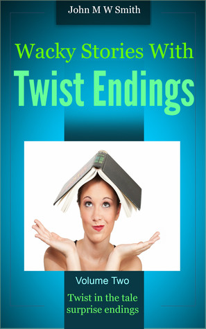

0
стр. з
0
сторінок

завантаження...

Джон М. В. Смит
Истории с сюрпризом
Книгу адаптировал Андрей Еремин
Метод чтения Ильи Франка
Сontents
Having A Baby
(рождение ребенка; to have a baby — иметь ребенка).
'Careful, love (осторожно, милая; careful — заботливый; аккуратный; осторожный; care — забота; внимание, осторожность; love — любовь; милый, милая; любимый, любимая). It's rather steep at the bottom,' cautioned Jeff (/лестница/ довольно крутая внизу, — предостерег Джеф; rather — лучше, охотнее; несколько, довольно; весьма; bottom — низ, нижняя часть).
Hesitantly Paula descended the last few steps in the badly lit multi-storey car-park (Паула нерешительно спустилась по последним нескольким ступеням в плохо освещенной многоэтажной автостоянке; to hesitate — колебаться, сомневаться; step — шаг; ступень/ка/; to light — зажигать/ся/; освещать/ся/; storey — этаж; ярус; car — автомобиль; park — парк; стоянка /автомобилей, самолетов и т.д./). 'If only we'd done this shopping sooner (если бы только мы закончили ходить по магазинам пораньше; to do one`s shopping — делать покупки; to do — делать, совершать; shopping — посещение магазинов с целью покупки; shop — магазин),' Jeff went on to grumble (продолжал ворчать Джеф; to go on — идти дальше; продолжать).
'One can't predict these things for sure,' soothed Paula (нельзя точно предвидеть такие вещи, — успокаивала Паула; one — один; человек; кто-то, некто; to predict — предсказывать; прогнозировать; thing — вещь; явление; for sure — твердо, точно; несомненно; sure — уверенный; несомненный; to soothe — успокаивать, утешать), 'actually we should be thankful baby's arriving only three weeks early (вообще-то нам нужно быть благодарными /за то/ = радоваться /тому, что/ ребенок родится всего лишь на три недели раньше; actually — фактически, на самом деле; thankful — благодарный; довольный /чем-л./, радующийся /чему-л./; to arrive — прибывать, приезжать; /разг./ родиться; early — рано; преждевременно).'
'But we haven't enough time,' fretted Jeff (но у нас недостаточно времени, — волновался Джеф; enough — довольно, достаточно; to fret — раздражать/ся/; тревожить/ся/).
'We do, the first twinges have only just started (/у нас его/ достаточно, первые боли только-только начались; twinge — приступ резкой боли; only just — только что; just — как раз, точно; едва; to start — начинать/ся/). It will only take a few minutes, come on (это займет всего лишь несколько минут, идем; to take — брать; занимать, требовать /о времени/; to come — приходить; идти; come on! — ну-ка!, давай!, пошли!).'
cautioned [`kLS(q)nd], hesitantly [`hezIt(q)ntlI], Paula [`pLlq], descended [dI`sendId], few [fjH], enough [I`nAf]
'Careful, love. It's rather steep at the bottom,' cautioned Jeff.
Hesitantly Paula descended the last few steps in the badly lit multi-storey car-park. 'If only we'd done this shopping sooner,' Jeff went on to grumble.
'One can't predict these things for sure,' soothed Paula, 'actually we should be thankful baby's arriving only three weeks early.'
'But we haven't enough time,' fretted Jeff.
'We do, the first twinges have only just started. It will only take a few minutes, come on.'
And the hospital was just five minutes away, thought Paula (а больница всего лишь в пяти минутах /ходьбы/, подумала Паула; to think — думать, размышлять; away — отстоящий, удаленный, на каком-л. расстоянии). Still holding his hand, she led Jeff towards the brightly lit babycare shop (всё ещё/по-прежнему держа его руку, она повела Джефа к ярко освещенному магазину товаров для младенцев; hand — кисть /руки/; to lead — вести; babycare — уход за младенцем), which soon cocooned them in its warmth (который вскоре окутал их своим теплом; to cocoon — делать кокон; закутывать).
'Oh… isn't this simply adorable (о, ну разве не прелесть; simply — легко, просто; /эмоц.-усил./ просто, прямо-таки; adorable — обожаемый; /разг./ прелестный, восхитительный)?' she sighed, fondling a knitted matinee jacket (вздохнула она, поглаживая вязаную теплую распашонку; to fondle — ласкать, нежно поглаживать; to knit — вязать; jacket — куртка). Her eyes turned dreamy and her pretty face softened (ее глаза сделались мечтательными, а красивое лицо смягчилось; to turn — поворачивать/ся/; становиться /каким-л./; dream — сон, сновидение; мечта, греза; to soften — смягчать/ся/; становиться добрее, нежнее; soft — мягкий; ласковый, нежный). Lips parted, she slowly looked up at Jeff for approval (раскрыв губы, она медленно подняла взгляд на Джефа /, ожидая/ одобрения; to part — разделять/ся/, отделять/ся/; to look up — поднимать глаза; посмотреть вверх; to look — смотреть, глядеть).
'Yes, all right (да, хорошо; all right: «всё хорошо» — ладно!, хорошо!, идет!, согласен!; right — верный, правильный; подходящий). Let's have it,' he agreed gruffly (давай ее купим, — согласился он грубо; let’s = let us; to let — впускать; позволять, разрешать; let us — давай/те/; to have — иметь, обладать; получать; приобретать; gruffly — грубо; резко; угрюмо; хрипло /о голосе/). He disentangled his hand from hers (он высвободил свою руку из ее /руки/; to disentangle — освобождать; распутывать) and irritably stuffed the little garment in their shopping basket (и раздражительно сунул маленькую рубашонку в их корзину для покупок; to stuff — набивать; засовывать; garment — предмет одежды).
Her smile slipped briefly (ее улыбка угасла ненадолго; to slip — скользить; ускользать, исчезать /из памяти и т.д./; briefly — кратко; ненадолго), but Paula lost no time in finding a knitted baby hat (но Паула не теряла времени /даром/, а отыскала вязаную детскую шапочку; to lose — терять; упускать /время/; to find — искать; находить; hat — шляпа; шапка), first mittens and booties (первые варежки и башмачки; bootie — пинетка, детский вязаный башмачок), and three baby-stretch suits (и три комбинезона-пижамы; stretch — растягивающийся, эластичный; растягивание; эластичность; suit — костюм).
minutes [`mInIts], thought [TLt], knitted [`nItId], matinee [`mxtIneI], disentangled [,dIsIn`txNgld], suits [s(j)Hts]
And the hospital was just five minutes away, thought Paula. Still holding his hand, she led Jeff towards the brightly lit babycare shop, which soon cocooned them in its warmth.
'Oh… isn't this simply adorable?' she sighed, fondling a knitted matinee jacket. Her eyes turned dreamy and her pretty face softened. Lips parted, she slowly looked up at Jeff for approval.
'Yes, all right. Let's have it,' he agreed gruffly. He disentangled his hand from hers and irritably stuffed the little garment in their shopping basket.
Her smile slipped briefly, but Paula lost no time in finding a knitted baby hat, first mittens and booties, and three baby-stretch suits.
She realised that Jeff had been having a rough time of it for some while (она понимала, что Джефу приходилось нелегко в течение некоторого времени = в последнее время; to realise — понимать, /о/сознавать; to have a rough time: «иметь трудное время» — терпеть лишения; испытывать трудности; rough — неровный; грубый; резкий, суровый; /разг./ трудный, тяжелый; while — время, промежуток времени). Nowadays he always seemed so tense (в эти дни он всегда казался таким напряженным; nowadays — в наши дни; теперь, ныне; to seem — казаться, представляться). Many men didn't find it easy to endure prolonged periods of celibacy (многие мужчины не находили это легким = многим мужчинам непросто выносить длительные периоды воздержания), and Jeff certainly seemed to be making heavier weather of it than most (а Джеф, похоже, явно воспринимал это еще болезненней, чем большинство; certainly — конечно, несомненно, безусловно; to make heavy weather of smth. — усложнять дело, сгущать краски; to make heavy weather — /мор./ испытывать сильную качку; heavy — тяжелый; сильный, бурный, интенсивный; weather — погода; непогода, шторм)! It was cruel of her to torment him, but she couldn't help it (с ее стороны было жестоко мучить его, но она ничего не могла с этим поделать; cruel — жестокий, безжалостный; мучительный; to help — помогать; предотвращать). It gave her such a buzz (это доставляло ей такую радость; to give a buzz — /разг./ доставить удовольствие, развеселить; to give — давать; вызывать /состояние/; buzz — жужжание; /разг./ кайф, опьянение, возбуждение /от кофе, алкоголя и т.д./)!
'Now… some terry bibs with plastic backing (так… махровые слюнявчики с пластиковой подкладкой; some — некоторый; несколько; terry — махровая ткань /для полотенец, купальных халатов и т.д./; bib — детский нагрудник; backing — поддержка; обратная сторона; подкладка), disposable mini nappies (одноразовые мини подгузники; to dispose — удалять, убирать /мусор и т.д./; избавляться; nappy — /брит./ детская пеленка; подгузник), baby powder (детская присыпка; powder — порошок; пудра), shampoo and soap (шампунь и мыло),' Paula recited, ticking them off her fingers (перечисляла Паула, загибая пальцы: «отмечая их пальцами»; to recite — повторять вслух по памяти; перечислять /факты, данные/; to tick off — отмечать галочкой /в списке и т.д./) and absently placing a hand on Jeff's arm (и рассеянно кладя руку на предплечье Джефа; to place — ставить, класть, помещать; arm — рука /от кисти до плеча/). He cast about wildly as if seeking escape (он стал дико озираться вокруг, словно ища путь к спасению; to cast — бросать, швырять; бросать /взгляд/; to cast about — обдумывать; искать, разыскивать /в уме или физически/; wildly — дико; бесконтрольно; wild — дикий; бурный, безудержный; неконтролируемый; to seek — искать; escape — бегство, побег; избавление), but in reality trying to find the required items speedily (но на самом деле стараясь быстро найти необходимые вещи; reality — реальность; required — необходимый; требуемый; to require — требовать; нуждаться /в чем-л./; item — пункт, параграф; отдельный предмет /в списке и т.д./; speedily — быстро, поспешно; speed — скорость; быстрота).
rough [rAf], celibacy [`selIbqsI], weather [`weDq], absently [`xbs(q)ntlI]
She realised that Jeff had been having a rough time of it for some while. Nowadays he always seemed so tense. Many men didn't find it easy to endure prolonged periods of celibacy, and Jeff certainly seemed to be making heavier weather of it than most! It was cruel of her to torment him, but she couldn't help it. It gave her such a buzz!
'Now… some terry bibs with plastic backing, disposable mini nappies, baby powder, shampoo and soap,' Paula recited, ticking them off her fingers and absently placing a hand on Jeff's arm. He cast about wildly as if seeking escape, but in reality trying to find the required items speedily.
Finally, they had it all (наконец они нашли всё). Just as Jeff reached down to place the soap in the basket, Paula added something too (как раз в тот миг, когда Джеф потянулся, чтобы положить мыло в корзину, Паула тоже кое-что добавила; to reach — протягивать /особ. руку/; дотягиваться). Their hands touched and he twitched as if jolted by an electric shock (их руки соприкоснулись и он дернулся, будто его ударило электрическим током; to touch — /при/касаться, трогать; соприкасаться; to twitch — дергать/ся/; to jolt — трясти, подбрасывать; наносить удар, потрясать; electric shock — электрошок; удар электрическим током; shock — удар, толчок; шок).
'It's baby-oil,' she explained slyly (это детское масло, — хитро объяснила она), 'very useful, as you'll no doubt find out (очень полезное, как ты, несомненно, убедишься; use — использование; польза; doubt — сомнение; to find out — узнать, выяснить).'
'That's all, isn't it — — — we should go now (это всё, не так ли… теперь нам надо идти),' said Jeff with a curious throb in his voice (сказал Джеф со странным волнением в голосе; curious — любопытный; странный, курьезный; throb — биение, пульсация; волнение, трепет).
They stood in the short queue at the checkout (они встали в короткую очередь на кассе; to stand — стоять; становиться; checkout — контроль; касса в магазине самообслуживания; to check — проверять).
'My hero,' whispered Paula huskily from behind him (мой герой, — хрипло прошептала Паула у него за спиной; behind — сзади, позади), 'it must need terrific willpower to hang onto your control at such a time (это должно требовать ужасной силы воли = должно быть, требуется ужасная сила воли, чтобы сохранять над собой контроль в такое время; to need — нуждаться /в чем-л./; требовать, чувствовать необходимость /чего-л./; will — воля; сила воли; power — сила, мощь; to hang onto smth. — крепко держаться, хвататься за что-л.). It makes many men unfaithful, you know (оно делает многих мужчин неверными, ну, ты знаешь; faithful — верный, преданный; faith — вера, доверие; верность). The pressure simply becomes too much, I do admire your strength (давление просто становится слишком сильным, я честно восхищаюсь твоей силой; зд.: do используется для усиления; to admire — восхищаться, восторгаться).'
touched [tACt], useful [`jHsf(q)l], doubt [daVt], queue [kjH], willpower [`wIl,paVq], pressure [`preSq], becomes [bI`kAmz]
Finally, they had it all. Just as Jeff reached down to place the soap in the basket, Paula added something too. Their hands touched and he twitched as if jolted by an electric shock.
'It's baby-oil,' she explained slyly, 'very useful, as you'll no doubt find out.'
'That's all, isn't it — — — we should go now,' said Jeff with a curious throb in his voice.
They stood in the short queue at the checkout.
'My hero,' whispered Paula huskily from behind him, 'it must need terrific willpower to hang onto your control at such a time. It makes many men unfaithful, you know. The pressure simply becomes too much, I do admire your strength.'
She caressed his back to convey the sentiment (она погладила его по спине, чтобы передать это чувство; to caress — гладить, ласкать; to convey — перевозить, переправлять; передавать /звуки, запахи, ощущения, мысли/) and his muscles tensed instantly (и его мышцы тотчас напряглись; instantly — тотчас, мгновенно; instant — мгновение, миг). Paula giggled (Паула хихикнула). Jeff drew a long, shuddering breath that seemed to rock his powerful frame (Джеф сделал долгий неровный: «дрожащий» вдох, который, казалось, сотряс его мощное тело; to draw — тянуть/ся/, тащить/ся/; втягивать, вдыхать /воздух/; to shudder — дрожать; содрогаться; breath — дыхание; вздох; to rock — качать/ся/; трясти/сь/; frame — каркас, остов; тело, телосложение).
'Yes, we should take a holiday when it's over (да, нам стоит взять отпуск, когда это закончится; holiday — праздник; день отдыха; отпуск; каникулы; to be over — закончиться, пройти),' he muttered wearily without turning around (пробормотал он устало, не оборачиваясь; without — без; без того, чтобы; так, чтобы не; to turn — поворачивать/ся/; round — вокруг, кругом). 'There's so much lost time we have to make up for (так много потеряно времени, которое мы должны наверстать; to have to — быть должным, обязанным /сделать что-л./).'
'I agree (я согласна; to agree — соглашаться). What a splendid idea!' enthused Paula (какая чудесная мысль! — восхитилась Паула; splendid — блестящий; отличный, великолепный; idea — идея, мысль; to enthuse — приводить в восторг; приходить в восторг; восклицать в восторге). 'Not abroad, though (только не за границей; though — однако, тем не менее). Too many bugs about that baby won't be prepared for just yet (/мы/ пока еще будем не готовы к слишком многим хлопотам с этим младенцем; bug — клоп; жук; /разг./ повреждение, неисправность; недоделка; won't = will not; to prepare — готовить/ся/, подготавливать/ся/).'
Outside Paula held out her hand, but he ignored it (на улице Паула протянула руку, но он ее проигнорировал; outside — снаружи; на улице, вне дома; to hold out — протягивать). She glanced up, and even in profile his face was closed and distant (она подняла глаза и быстро взглянула /на него/, и даже в профиль лицо его было непроницаемым и холодным; to glance up — поднять голову и бросить взгляд; to glance — бросить взгляд, мельком взглянуть; closed — закрытый; замкнутый; distant — дальний; далекий; сдержанный, отчужденный, сухой).
caressed [kq`rest], muscles [`mAs(q)lz], instantly [`InstqntlI], enthused [In`TjHzd]
She caressed his back to convey the sentiment and his muscles tensed instantly. Paula giggled. Jeff drew a long, shuddering breath that seemed to rock his powerful frame.
'Yes, we should take a holiday when it's over,' he muttered wearily without turning around. 'There's so much lost time we have to make up for.'
'I agree. What a splendid idea!' enthused Paula. 'Not abroad, though. Too many bugs about that baby won't be prepared for just yet.'
Outside Paula held out her hand, but he ignored it. She glanced up, and even in profile his face was closed and distant.
Yes, he'd shut her out, she mused sadly (да, он отгородился от нее, печально размышляла она; he'd = /зд./ he had; to shut out — не впускать /кого-л./; загораживать; отгораживаться). But in all fairness, who could blame him (но, по совести говоря: «во всей честности», кто мог его винить; fairness — честность, справедливость)? Unlike her, he was worried sick (в отличие от нее он был очень обеспокоен; unlike — отличный, непохожий; в отличие от; like — подобный, похожий; worried — озабоченный, обеспокоенный; to worry — беспокоить/ся/, волновать/ся/; sick — чувствующий тошноту; больной), just the way husbands were supposed to be (именно так, как и полагается мужьям; way — путь, дорога; способ, образ действия; to suppose — думать, полагать; предполагать, подразумевать). His ordeal was complete without her mischievous distractions (его суровое испытание было тяжелейшим и без ее озорных развлечений; complete — полный; законченный; совершенный, абсолютный; mischievous — вредный; озорной; distraction — отвлечение /внимания/; развлечение).
But in the car Paula turned her face to the window (но в машине Паула повернула лицо к окну). She felt slighted by his coldness (она чувствовала себя ущемленной его холодностью; to feel — осязать; чувствовать, ощущать; to slight — пренебрегать; третировать). She hated the barrier he had erected between them (она ненавидела преграду, которую он возвел между ними; barrier — барьер; преграда, помеха; to erect — строить, возводить, сооружать), especially at an emotional time like this (особенно в такое волнующее время, как это; emotional — эмоциональный; волнующий). She was still a desirable woman who was used to being treated as one (она все еще была желанной женщиной, которая привыкла, что с ней обращаются подобающим образом: «как с желанной женщиной»; to desire — испытывать сильное желание, жаждать, желать; desire — /сильное/ желание; вожделение; to be used to — быть привыкшим, иметь привычку /к кому-л., чему-л.; делать что-л./; to use — использовать, применять; use — использование; обыкновение, привычка; to treat — обращаться, обходиться; относиться /к кому-л. как-л./; one — заменяет уже употребленное слово). Jeff's rejection hurt (неприятие Джефа задевало /ее/; to hurt — причинять боль; ранить; обидеть, задеть).
'I'm sorry,' she said quietly while letting her hand stray to his thigh (мне жаль, — тихо сказала она, позволяя своей руке соскользнуть на его бедро; sorry — огорченный, сожалеющий; while — пока, в то время как; тогда как; to stray — заблудиться, сбиться с пути; отклониться /от темы/), 'you must think I'm terribly childish to keep teasing you (ты, должно быть, думаешь, что я ужасно ребячливая, раз непрестанно тебя дразню; childish — ребяческий, несерьезный, наивный; child — ребенок, дитя; to keep — держать, хранить; сохранять, удерживать /состояние, положение/; to keep doing smth. — продолжать делать что-л.).'
ordeal [L`dJl], complete [kqm`plJt], mischievous [`mIsCIvqs], desirable [dI`zaI(q)rqbl]
Yes, he'd shut her out, she mused sadly. But in all fairness, who could blame him? Unlike her, he was worried sick, just the way husbands were supposed to be. His ordeal was complete without her mischievous distractions.
But in the car Paula turned her face to the window. She felt slighted by his coldness. She hated the barrier he had erected between them, especially at an emotional time like this. She was still a desirable woman who was used to being treated as one. Jeff's rejection hurt.
'I'm sorry,' she said quietly while letting her hand stray to his thigh, 'you must think I'm terribly childish to keep teasing you.'
'No, you're not sorry,' he replied as his upper leg went as stiff as a board (нет, тебе не жаль, — ответил он, и его бедро: «верхняя часть ноги» сделалось твердым, как доска; to go — идти, ходить; становиться; stiff — жесткий; тугой; напряженный; одеревенелый). 'You know exactly what you're doing and you're enjoying it, aren't you (ты точно знаешь/понимаешь, что делаешь, и наслаждаешься этим, не так ли; to enjoy — любить /что-л./, получать удовольствие /от чего-л./; наслаждаться; joy — радость; веселье; удовольствие)!'
Paula glanced up sharply but Jeff wasn't angry (Паула резко подняла голову и бросила на него взгляд, но Джеф не сердился; angry — сердитый, гневный; раздраженный). Although his jaw-line was taught with disapproval (хотя его подбородок был напряжен в неодобрении; jaw-line — линия подбородка; нижняя часть овала лица; jaw — челюсть; подбородок; taught — туго натянутый; напряженный) there was a wry twinkle in his eyes (насмешливый огонек горел в его глазах; wry — кривой, перекошенный; насмешливый; twinkle — мерцание; огонек, блеск /в глазах/). Well, thank goodness he hadn't lost his sense of humour (что ж, слава богу, что он не утратил чувство юмора; to thank — благодарить; goodness — доброта; любезность; добродетель; выражает удивление, испуг)!
'Do you want me to remove my hand then, darling (значит, ты хочешь, чтобы я убрала руку, дорогой; to remove — передвигать; убирать; снимать; then — затем; в таком случае; тогда; значит, итак; darling — дорогой, милый; дорогая, милая /обычно в обращении/)?' she asked with mock wide-eyed innocence (спросила она с притворной, удивленной невинностью; mock — поддельный; мнимый, притворный; wide-eyed — с широко раскрытыми глазами /от удивления, испуга/; наивный, простодушный; innocence — невинность; простодушие, наивность).
'That would be best, don't you think, love?' came the relieved response (это было бы лучше всего, тебе так не кажется, дорогая? — раздался облегченный ответ; to think — думать; считать, полагать; to come — приходить; доходить, доноситься). 'Hope I can still work the clutch,' he remarked when she had done so (надеюсь, я еще могу отпустить сцепление, — заметил он, когда она так и сделала; to work — работать; приводить в движение или действие; clutch — сжатие, захват; /авт./ сцепление). He flexed his left leg tentatively and they both laughed (он неуверенно согнул левую ногу, и они оба засмеялись).
exactly [Ig`zxktlI], taught [tLt], wry [raI], remove [rI`mHv], darling [`dRlIN], innocence [`Inqs(q)ns], tentatively [`tentqtIvlI]
'No, you're not sorry,' he replied as his upper leg went as stiff as a board. 'You know exactly what you're doing and you're enjoying it, aren't you!'
Paula glanced up sharply but Jeff wasn't angry. Although his jaw-line was taught with disapproval there was a wry twinkle in his eyes. Well, thank goodness he hadn't lost his sense of humour!
'Do you want me to remove my hand then, darling?' she asked with mock wide-eyed innocence.
'That would be best, don't you think, love?' came the relieved response. 'Hope I can still work the clutch,' he remarked when she had done so. He flexed his left leg tentatively and they both laughed.
The atmosphere became easy again (атмосфера снова стала непринужденной; easy — легкий, нетрудный; спокойный; непринужденный). Her pride satisfied, Paula relaxed back in her seat (удовлетворив свою гордость, Паула расслабленно откинулась на сиденье; to relax — расслаблять/ся/, ослаблять/ся/; back — обратно, назад).
At the hospital they went straight past Reception, already knowing where to go (в больнице они прошли прямо мимо регистратуры, уже зная, куда идти; straight — прямо, непосредственно; reception — прием, принятие; приемная, регистратура). They were expected (их ждали: «они были ожидаемы»).
'I hope I didn't forget anything,' fretted Paula in the lift (надеюсь, я ничего не забыла, — беспокоилась Паула в лифте). She leaned against Jeff, resting her head on his shoulder (она прислонилась к Джефу, положив голову ему на плечо; to lean — наклонять/ся/; прислонять/ся/, опирать/ся/; to rest — отдыхать; покоиться, лежать; класть, прислонять). 'Hold me, Jeff,' she whispered plaintively (держи меня, Джеф, — жалобно прошептала она; to hold — держать; удерживать; поддерживать; plaintively — грустно, печально, жалобно). He sighed and put an arm around her shoulder (он вздохнул и обнял ее за плечо: «положил руку вокруг ее плеча»). But just as she raised her lips to his own, the lift doors swished open (но как только она приблизила свои губы к его, двери лифта со свистом открылись; to raise — поднимать; own — свой, собственный; to swish — рассекать воздух со свистом).
already [Ll`redI], whispered [`wIspqd], sighed [saId], door [dL]
The atmosphere became easy again. Her pride satisfied, Paula relaxed back in her seat.
At the hospital they went straight past Reception, already knowing where to go. They were expected.
'I hope I didn't forget anything,' fretted Paula in the lift. She leaned against Jeff, resting her head on his shoulder. 'Hold me, Jeff,' she whispered plaintively. He sighed and put an arm around her shoulder. But just as she raised her lips to his own, the lift doors swished open.
Walking past the maternity ward they arrived at Delivery Room Five and proceeded straight inside (пройдя мимо родильного отделения, они дошли до родильной палаты /номер/ пять и вошли прямиком в нее; to walk — ходить, идти пешком; maternity — материнство; ward — отделение больницы; больничная палата; to arrive — прибывать, приезжать; достигать /чего-л./; delivery — доставка; роды; doom — комната; зал; to proceed — продолжать; направляться, идти; inside — внутри; внутрь).
'Told you we wouldn't be long, darling (/я же/ говорил тебе, дорогая, что мы скоро придем: «не будем долгими»; long — длинный; длительный; медлительный),' said Jeff as he bent to kiss a young woman (сказал Джеф, наклонившись поцеловать молодую женщину; to bend — сгибать/ся/; наклонять/ся/) who was clearly delighted to see them both (которая явно была счастлива видеть их обоих; clearly — отчетливо, ясно; delighted — восхищенный, очарованный; довольный, счастливый; delight — восторг, восхищение; наслаждение).
'I hope you two have been behaving yourselves (надеюсь, вы двое вели себя хорошо; to behave — вести себя, поступать; вести себя хорошо /особ. о детях/; oneself — себе, себя, собой; сам, сама, само),' she admonished playfully, craning her neck to peer over her enormous tummy (шутливо пожурила она, вытягивая шею, чтобы посмотреть через свой огромный живот; to admonish — наставлять; журить; делать замечание, выговор; playfully — игриво; весело, шутливо; play — игра; шутка; to crane — вытягивать шею /чтобы лучше видеть/; crane — журавль; to peer — вглядываться; заглянуть, посмотреть; tummy — /разг./ живот/ик/, пузико).
'Oh yes, we have, little sister of mine (о да, вели себя хорошо, моя сестренка; little sister — младшая сестра; little — маленький; младший),' assured Paula a little too quickly (уверила Паула немного чересчур поспешно). 'But I've been thinking — — — maybe it's time I got married and had a baby too,' she went on broodily (но я вот думала… может, /пришло/ время и мне выйти замуж и тоже завести ребенка, — продолжала она задумчиво; to marry — жениться, выходить замуж; женить, выдавать замуж; to brood — размышлять). 'Trouble is, it might take me a while to find a man like Jeff (проблема в том, что у меня может уйти довольно много времени, чтобы найти мужчину вроде Джефа; trouble — беспокойство, волнение; затруднение, трудность; to take — брать; занимать, требовать /о времени/)!'
maternity [mq`tE:nItI], enormous [I`nLmqs], assured [q`SVqd]
Walking past the maternity ward they arrived at Delivery Room Five and proceeded straight inside.
'Told you we wouldn't be long, darling,' said Jeff as he bent to kiss a young woman who was clearly delighted to see them both.
'I hope you two have been behaving yourselves,' she admonished playfully, craning her neck to peer over her enormous tummy.
'Oh yes, we have, little sister of mine,' assured Paula a little too quickly. 'But I've been thinking — — — maybe it's time I got married and had a baby too,' she went on broodily. 'Trouble is, it might take me a while to find a man like Jeff!'
Stealing John
(похищение Джона: «похищая Джона»; to steal — воровать, красть; /разг./ отбить, увести).
'I'm sorry, love (извини, любимая). Won't be a minute,' murmured John (это не займет и минуты, — пробормотал Джон).
Sandra unwillingly let him pull free (Сандра неохотно дала ему освободиться /из объятий/; to pull — тянуть, тащить; дергать; free — свободный, вольный).
And then she saw the woman (а затем = и тут она увидела женщину; then — тогда, в то время; затем).
She stood alone by the door, staring out towards them (та стояла одна у двери, пристально глядя на них; alone — один, одинокий; to stare out — смутить пристальным взглядом, заставить отвести глаза; to stare — пристально смотреть, уставиться).
John threaded his way through the couples on the dance-floor (Джон прокладывал свой путь/пробирался через пары на танцплощадке; to thread — продевать нитку /в иголку/; пронизывать; проходить насквозь; пробираться, прокладывать путь; dance — танец; floor — пол; настил; танцплощадка). A short conversation followed (последовал короткий разговор). And then, to Sandra's horror, they left with an arm around each other (а потом, к ужасу Сандры, они ушли, обняв друг друга: «с рукой вокруг друг друга»; to leave — уходить, уезжать; оставлять).
That was Sandra's first encounter with Maggie (это была первая встреча Сандры с Мэгги; encounter — /случайная/ встреча).
won't [wqVnt], murmured [`mE:mqd], couples [`kAp(q)lz], encounter [In`kaVntq]
'I'm sorry, love. Won't be a minute,' murmured John.
Sandra unwillingly let him pull free.
And then she saw the woman.
She stood alone by the door, staring out towards them.
John threaded his way through the couples on the dance-floor. A short conversation followed. And then, to Sandra's horror, they left with an arm around each other.
That was Sandra's first encounter with Maggie.
'It won't happen again, I promise,' John told her the next day (этого больше не случится, обещаю, — сказал ей Джон на следующий день; again — снова, опять; ещё раз; to tell — говорить; сообщать). But Sandra had waved aside all his explanations (но Сандра отвергла все его объяснения; to wave — махать; отмахнуться /от чего-л./; отвергнуть; aside — в сторону).
'You don't have to pretend I'm the only woman in your life, John (тебе не нужно притворяться, что я единственная женщина в твоей жизни, Джон; to pretend — притворяться, делать вид). We're friends, but you owe me nothing (мы друзья, но ты ничего мне не должен; to owe — быть должным /кому-л./; быть в долгу /перед кем-л./). Just don't make me look like a fool again,' she warned (просто не выставляй меня дурой снова: «не делай меня похожей на дуру», — предупредила она; to make — делать; заставлять; to look — смотреть; выглядеть, иметь вид; to look like — выглядеть как, быть похожим на; fool — дурак, глупец; to warn — предостерегать, предупреждать).
'I owe you a lot, Sandy (я многим тебе обязан, Сэнди; lot — /разг./ большое количество, уйма).' John had taken her into his arms and looked deep into her eyes (Джон обнял ее: «взял ее в руки» и заглянул глубоко в ее глаза). 'No woman has ever made me happy the way you have (ни одна женщина никогда не делала меня счастливым так, как сделала ты; ever — всегда, вечно; когда-либо).'
At this Sandra relented, because in truth she loved John dearly (при этих /словах/ Сандра смягчилась, потому что на самом деле нежно любила Джона; in truth — действительно, в самом деле, в действительности; truth — правда; истина).
promise [`prPmIs], relented [rI`lentId], because [bI`kPz], truth [trHT]
'It won't happen again, I promise,' John told her the next day. But Sandra had waved aside all his explanations.
'You don't have to pretend I'm the only woman in your life, John. We're friends, but you owe me nothing. Just don't make me look like a fool again,' she warned.
'I owe you a lot, Sandy.' John had taken her into his arms and looked deep into her eyes. 'No woman has ever made me happy the way you have.'
At this Sandra relented, because in truth she loved John dearly.
'I can't share you with anyone, John (я не могу ни с кем тебя делить, Джон; to share — делить/ся/; использовать совместно),' she whispered as she clung to him (прошептала она, прильнув к нему; to cling — цепляться; прилипать).
'You won't have too, and I'll prove it to you,' he whispered back (тебе и не придется, я докажу тебе это, — прошептал он в ответ).
And he was true to his word (и он был верен своему слову; true — верный, правильный; преданный).
Their wedding was a quiet affair (их свадьба была тихим событием; affair — дело; событие, мероприятие), but John had invited some of his past girlfriends (однако Джон пригласил некоторых из своих бывших девушек; past — прошлый, минувший; girlfriend — подруга; возлюбленная, любимая девушка; girl — девочка; девушка; friend — друг, подруга).
'They'd have turned up anyway to get a look at you,' he explained (они бы все равно явились, чтобы взглянуть на тебя, — объяснил он; to turn — поворачивать/ся/; to turn up — загибать/ся/; внезапно появляться, приходить; to get — доставать; получать; в сочетании с сущ. означает действие; look — взгляд), 'at least this way they won't feel so inclined to make trouble (по крайней мере, так они не почувствуют себя такими склонными причинять неприятности = у них не возникнет желания причинять неприятности; at least — по крайней мере, как минимум; least — минимальное количество, малейшая степень; малейший; inclined — расположенный, склонный /к чему-л./; to incline — наклонять/ся/; склонять/ся/; быть склонным /к чему-л./; trouble — беспокойство, волнение; неприятность, беда; скандал).'
Everything went smoothly until the limousine stood ready to whisk them away from the church (все шло гладко, пока не приготовили лимузин, чтобы умчать их из церкви; smoothly — гладко; ровно; плавно; гладко, благополучно; to stand — стоять; находиться, быть в каком-л. состоянии; ready — готовый; подготовленный; to whisk away — быстро увозить, уносить, увлекать).
prove [prHv], trouble [`trAb(q)l], limousine [`lImqzJn; ,lImq`zJn]
'I can't share you with anyone, John,' she whispered as she clung to him.
'You won't have too, and I'll prove it to you,' he whispered back.
And he was true to his word.
Their wedding was a quiet affair, but John had invited some of his past girlfriends.
'They'd have turned up anyway to get a look at you,' he explained, 'at least this way they won't feel so inclined to make trouble.'
Everything went smoothly until the limousine stood ready to whisk them away from the church.
Then, 'he's mine, do you hear (тут: «он мой, ты слышишь»)? He'll never belong to you (он никогда не будет принадлежать тебе),' said a low pitched, venomous voice in Sandra's ear (произнес низкий злобный голос Сандре на ухо; low pitched — низкого тона, низкий /о звуке/; to pitch — /муз./ иметь, задавать или придавать определенную высоту, тон; pitch — высота /тона, звука/; уровень; интенсивность; venomous — ядовитый /тж. перен./; злобный; venom — яд).
Startled, she whirled around to find Maggie's face inches from her own (вздрогнув, она повернулась и увидела лицо Мэгги в нескольких дюймах от своего собственного; to startle — испугать; вздрагивать; to whirl — вертеть/ся/, кружить/ся/; to find — искать; находить, обнаруживать; inch — дюйм /меры длины = 2,54 см/).
'But… but you can't have him any more (но… но ты больше не можешь владеть им). He... he's my husband now,' faltered Sandra (он… он теперь мой муж, — запинаясь, проговорила Сандра; to falter — спотыкаться; запинаться, говорить неуверенно).
'It's just a piece of paper (это просто листок бумаги; piece — кусок; часть). It means nothing, just you wait and see,' Maggie had replied spitefully (он ничего не значит, вот погоди и увидишь, — злобно ответила Мэгги; to mean — намереваться; иметь в виду; значить, иметь значение; to see — видеть; понимать; сознавать; spite — злоба, злость; враждебность), 'you don't know how to make him happy, not the way I do (ты не знаешь, как сделать его счастливым, не так, как я). That's why he'll always be mine (вот почему он всегда будет мой).'
Sandra turned away, pulling her veil back down to hide her tears (Сандра отвернулась, опуская вуаль, чтобы скрыть свои слезы; to pull — тянуть, тащить; задергивать /занавески и т.д./; to hide — прятать/ся/, скрывать/ся/).
venomous [`venqmqs], husband [`hAzbqnd], faltered [`fLltqd]
Then, 'he's mine, do you hear? He'll never belong to you,' said a low pitched, venomous voice in Sandra's ear.
Startled, she whirled around to find Maggie's face inches from her own.
'But… but you can't have him any more. He... he's my husband now,' faltered Sandra.
'It's just a piece of paper. It means nothing, just you wait and see,' Maggie had replied spitefully, 'you don't know how to make him happy, not the way I do. That's why he'll always be mine.'
Sandra turned away, pulling her veil back down to hide her tears.
Sandra tried her best not to let the incident ruin her honeymoon (Сандра сделала всё возможное, чтобы не дать этому происшествию испортить ее медовый месяц; to try one`s best — стараться изо всех сил, сделать всё от себя зависящее; to try — стараться, пытаться; to ruin — разрушать; портить; honey — мед; moon — луна; лунный месяц). But they hadn't been back two days when there was a knock on the door (но не прошло и двух дней после их возвращения, как раздался стук в дверь; to be back — вернуться). It was Maggie (это была Мэгги).
For a moment Sandra was overawed by the expensive hairdo (на миг Сандра застыла в благоговейном страхе перед дорогой прической; moment — момент, миг, минута; to overawe — держать в благоговейном страхе; внушать благоговейный страх; awe — благоговейный страх, трепет; hair — волосы), the perfect make-up (идеальным макияжем; perfect — совершенный, идеальный), the exquisite perfume and designer dress (изысканными духами и дизайнерским платьем; exquisite perfume — благоухание, аромат; духи; designer dress — платье от известного дизайнера; designer — конструктор, проектировщик; модельер, дизайнер; to design — придумывать, планировать; проектировать; создавать узор, фасон и т.д.). Her own faded jeans and T-shirt seemed woefully inadequate (ее собственные выцветшие джинсы и футболка казались ужасно неуместными; to fade — вянуть, увядать; выгорать, выцветать; shirt — рубашка, сорочка; майка; woeful — скорбный, печальный; прискорбный; ужасный; woe — горе, скорбь, печаль; inadequate — неадекватный, неподходящий), even though John had never complained (хотя Джон никогда и не жаловался; even though — даже если, хотя и).
'Aren't you going to invite me in (ты не пригласишь меня войти; to be going to — собираться /сделать что-л./)?' asked Maggie with a false smile (спросила Мэгги с фальшивой улыбкой; false — ложный, неверный; фальшивый, притворный).
'What for?' Sandra demanded (для чего? — /строго/ спросила Сандра; to demand — требовать; настойчиво требовать ответа; спрашивать). John was out and she didn't want a scene (Джона не было дома, и она не хотела /устраивать/ сцену; scene — место действия /в пьесе, романе и т.д./; сцена, эпизод; крупный разговор, скандал).
incident [`InsId(q)nt], ruin [`rHIn], honeymoon [`hAnImHn], knock [nPk], overawed [,qVvqr`Ld], exquisite [Ik`skwIzIt], inadequate [In`xdIkwIt], scene [sJn]
Sandra tried her best not to let the incident ruin her honeymoon. But they hadn't been back two days when there was a knock on the door. It was Maggie.
For a moment Sandra was overawed by the expensive hairdo, the perfect make-up, the exquisite perfume and designer dress. Her own faded jeans and T-shirt seemed woefully inadequate, even though John had never complained.
'Aren't you going to invite me in?' asked Maggie with a false smile.
'What for?' Sandra demanded. John was out and she didn't want a scene.
'I've known John longer than you have, you know,' replied Maggie (я знаю Джона дольше, чем ты, видишь ли, — ответила Мэгги), 'why can't we all be friends (почему мы все не можем быть друзьями)?'
'I don't want to be friends with you, not after — — — (я не хочу дружить с тобой, не после того…; to be friends with smb. — дружить с кем-л.)'
'Oh, don't be like that,' Maggie had cut in with a catch in her voice (о, не будь такой, — перебила Мэгги прерывающимся голосом: «с прерыванием в голосе»; to cut in — вмешиваться /в разговор/; прерывать /кого-л./; to cut — резать, разрезать; catch — зд.: приостановка на мгновение /дыхания/; потеря на миг /голоса/), 'no one has ever meant more to me than John (никто никогда не значил для меня больше, чем Джон). I've been so lonely since I lost him to you (я так одинока с тех пор, как ты забрала его у меня: «с тех пор, как я потеряла его к тебе»). Can't we talk (/разве/ мы не можем поговорить)?'
By now the neighbours were watching, so Sandra stepped aside (теперь уже /за ними/ наблюдали соседи, поэтому Сандра отошла в сторону /, пропуская Мэгги/; by now — к этому времени; уже; now — настоящее время; данный момент; to watch — смотреть, наблюдать; следить; to step — шагать, ступать). But she'd barely managed to organise coffee and biscuits before it started again (но едва она сумела устроить кофе и печенье, как снова началось; to manage — руководить; справляться; суметь сделать, ухитриться; to organise — организовывать/ся/, устраивать/ся/; /разг./ устроить, раздобыть, организовать; biscuit — сухое печенье; to start — начинать/ся/).
meant [ment], neighbours [`neIbqz], biscuits [`bIskIts]
'I've known John longer than you have, you know,' replied Maggie, 'why can't we all be friends?'
'I don't want to be friends with you, not after — — —'
'Oh, don't be like that,' Maggie had cut in with a catch in her voice, 'no one has ever meant more to me than John. I've been so lonely since I lost him to you. Can't we talk?'
By now the neighbours were watching, so Sandra stepped aside. But she'd barely managed to organise coffee and biscuits before it started again.
'Only I haven't really lost him, have I?' asked Maggie (но я ведь не потеряла его, правда? — спросила Мэгги; only — только; но; вот только; really — действительно; на самом деле; по-настоящему), her eyes roving over the new curtains and comfortable three-piece suite (ее взгляд скользил по новым занавескам и удобному мебельному гарнитуру; eye — глаз, око; взгляд, взор; to rove — скитаться, бродить; блуждать /о взгляде, мыслях/; three-piece suite — гарнитур из дивана и двух кресел; piece — кусок; часть; штука, отдельный предмет; suite — комплект, набор). 'He'll tire of you, just give him time (ты ему наскучишь, только дай ему время; to tire — утомлять/ся/; надоедать; /of/ терять интерес). And then he'll come back to me (а потом он вернется ко мне).'
'I think you'd better go,' Sandra replied unsteadily (думаю, тебе лучше уйти, — неуверенно ответила Сандра; unsteadily — нетвердо, шатко; steady — прочный, устойчивый; спокойный).
'One evening he won't come home (однажды вечером: «одним вечером» он не придет домой). Then you'll know where he'll be, won't you (тогда ты узнаешь, где он, не так ли)?' Maggie turned to say on the doorstep (сказала Мэгги, обернувшись на пороге; door — дверь; step — шаг; ступень/ка/).
'Why are you trying to ruin my marriage (почему ты пытаешься разрушить мой брак)? What have I ever done to you?' wailed Sandra (да что я вообще тебе сделала? — жалобно спросила Сандра; ever — всегда; когда-либо; для эмоц. усиления; to wail — вопить; стонать; сетовать; причитать, стенать).
'You stole John from me,' said Maggie in a low and hard voice (ты увела у меня Джона, — сказала Мэгги тихим и твердым голосом; low — низкий; тихий). 'But soon he'll start missing me (но скоро он начнет скучать по мне; to miss — упустить; обнаружить отсутствие или пропажу; недоставать; скучать). No other woman really knows how to make him happy, no matter what he tells you (никакая другая женщина не знает, как сделать его счастливым, и не важно, что он тебе говорит; no matter — все равно, неважно, не имеет значения; matter — вещество; дело; повод, причина; to matter — иметь значение).'
curtains [`kE:t(q)nz], suite [swJt], unsteadily [An`stedIlI], evening [`JvnIN], other [`ADq]
'Only I haven't really lost him, have I?' asked Maggie, her eyes roving over the new curtains and comfortable three-piece suite. 'He'll tire of you, just give him time. And then he'll come back to me.'
'I think you'd better go,' Sandra replied unsteadily.
'One evening he won't come home. Then you'll know where he'll be, won't you?' Maggie turned to say on the doorstep.
'Why are you trying to ruin my marriage? What have I ever done to you?' wailed Sandra.
'You stole John from me,' said Maggie in a low and hard voice. 'But soon he'll start missing me. No other woman really knows how to make him happy, no matter what he tells you.'
Sandra closed the door hurriedly (Сандра торопливо закрыла дверь).
But surprisingly John had not been that sympathetic (но Джон, как ни странно, не был таким уж сочувственным = не встал целиком на сторону Сандры; surprisingly — удивительно, поразительно; surprise — удивление; неожиданность, сюрприз; sympathetic — сочувственный; благожелательный, одобрительный; близкий по духу).
'Give her time,' he soothed (дай ей время, — успокаивал он), 'we were very close before I met you (мы были очень близки, до того как я встретил тебя; to meet — встречать/ся/; знакомиться).'
'She keeps saying no one else can ever make you happy the way she can,' complained Sandra (она всё говорит, что никто другой ни за что не сможет сделать тебя счастливым так, как она, — пожаловалась Сандра).
'That simply isn't true, Sandy,' laughed John as he gathered her close (это просто неправда, Сэнди, — засмеялся Джон, крепко обняв ее; to gather — собирать/ся/; прижимать к себе; close — близкий; тесный; плотный). 'No other woman can please me the way you do, my darling (ни одна другая женщина не умеет радовать меня так, как ты, моя дорогая; to please — радовать, доставлять удовольствие).'
Sandra saw a familiar spark behind his eyes and knew the conversation was over (Сандра увидела знакомую искру в глубине его глаз и поняла, что разговор окончен; behind — сзади, позади; to know — знать; понимать, сознавать).
soothed [sHDd], laughed [lRft], familiar [fq`mIlIq]
Sandra closed the door hurriedly.
But surprisingly John had not been that sympathetic.
'Give her time,' he soothed, 'we were very close before I met you.'
'She keeps saying no one else can ever make you happy the way she can,' complained Sandra.
'That simply isn't true, Sandy,' laughed John as he gathered her close. 'No other woman can please me the way you do, my darling.'
Sandra saw a familiar spark behind his eyes and knew the conversation was over.
Later as she lay in John's arms, Sandra had an idea (позже, лежа в объятиях Джона, Сандре пришла в голову одна мысль; to lie — лежать). She was convinced now that John loved her and would never leave her (теперь она была убеждена, что Джон любит ее и никогда не бросит; to convince — убеждать, уверять; to leave — уходить, уезжать; покидать; бросать). He had said it over and over again as they made love (он повторял это снова и снова, пока она занимались любовью).
But Maggie still needed some convincing, and there was only one way to do it (но Мэгги все еще требовалось некоторое убеждение, и был лишь один способ сделать это; to need — нуждаться /в чем-л./; требовать, чувствовать необходимость /чего-л./).
Next evening Sandra made a point of getting home early from work (на следующий вечер Сандра постаралась прийти домой с работы рано; to make a point of smth.: «сделать из чего-л. цель» — считать что-л. важным, существенным; подчеркнуть важность чего-л.; приложить все силы, чтобы сделать что-л.; point — точка; пункт, момент; цель, намерение). She cooked a lovely meal (она приготовила чудесный обед; lovely — красивый, очаровательный; /разг./ отличный, превосходный; meal — прием пищи; еда), wore her best dress (надела свое лучшее платье; to wear — носить /одежду и т.д./; быть одетым /во что-л./), and lighted two candles on the dining table (и зажгла две свечи на обеденном столе; to dine — обедать; давать обед).
John's eyes lit up when he walked in (глаза Джона вспыхнули, когда он вошел; to light up — зажечь /сигарету, трубку/; оживляться, загораться /о лице, глазах/). It felt like they were back on their honeymoon (как будто они вернулись в медовый месяц; to feel — осязать; чувствовать, ощущать; воспринимать; to feel like — быть склонным; хотеть /что-л./; производить впечатление /чего-л./). After dinner John reached for Sandra, but she twisted skilfully away (после обеда Джон потянулся к Сандре, но она ловко увернулась; dinner — обед /главная трапеза дня, часто вечером/; to twist — крутить/ся/, вращать/ся/; away — прочь; означает движение в сторону, от; skilfully — умело, искусно, ловко; skill — мастерство, искусность; ловкость).
convinced [kqn`vInst], lovely [`lAvlI], lighted [`laItId], walked [wLkt]
Later as she lay in John's arms, Sandra had an idea. She was convinced now that John loved her and would never leave her. He had said it over and over again as they made love.
But Maggie still needed some convincing, and there was only one way to do it.
Next evening Sandra made a point of getting home early from work. She cooked a lovely meal, wore her best dress, and lighted two candles on the dining table.
John's eyes lit up when he walked in. It felt like they were back on their honeymoon. After dinner John reached for Sandra, but she twisted skilfully away.
'Won't be a minute, lover-boy,' she promised (это не займет и минуты, красавчик, — пообещала она; lover-boy — /амер., разг., пренебр./ красавец, красавчик; донжуан, бабник; lover — любовник; любовница; boy — мальчик; /разг./ парень, малый, человек).
She darted into the bedroom and picked up the 'phone (она бросилась в спальню и взяла телефон; to dart — бросать, метать; рваться, кинуться, помчаться; to pick up — поднимать, подбирать; 'phone = telephone). Seconds later she crept to the front door to unlatch it (через несколько секунд она подкралась к входной двери и отперла ее; to creep — ползать; красться, подкрадываться; front door — наружная входная дверь, парадная дверь; front — передняя сторона; фасад; передний; to latch — запирать или закрывать на задвижку, щеколду, защелку; latch — щеколда, задвижка, защелка).
Back in the lounge, John was waiting impatiently (позади, в гостиной, Джон ждал нетерпеливо; patient — терпеливый). When Sandra returned he whisked her up in his strong arms (когда Сандра вернулась, он подхватил ее своими сильными руками) and carried her to the settee (и отнес на диван; to carry — /пере/носить, /пере/возить; settee — канапе, небольшой диван). Sandra sighed contentedly, pausing only long enough to slip out of her dress before it was ruined (Сандра вздохнула удовлетворенно, помедлив только достаточно долго = остановившись только для того, чтобы сбросить платье, пока оно не испортилось; contented — довольный; удовлетворенный; to pause — делать паузу, перерыв; останавливаться; to slip — скользить; выскальзывать; быстро сбросить с себя /одежду/).
John's passion was quickly aroused (страсть Джона была быстро пробуждена = быстро разгорелась; to arouse — будить, пробуждать; возбуждать, вызывать /чувства/), and soon Sandra was floating away on a sea of ecstasy (и вскоре Сандра /уже/ плыла по морю неземного удовольствия; to float — плавать /на поверхности жидкости/; плыть, нестись /по течению, воздуху/; ecstasy — экстаз, исступленный восторг).
front [frAnt], lounge [laVnG], impatiently [Im`peIS(q)ntlI], pausing [`pLzIN], aroused [q`raVzd]
'Won't be a minute, lover-boy,' she promised.
She darted into the bedroom and picked up the 'phone. Seconds later she crept to the front door to unlatch it.
Back in the lounge, John was waiting impatiently. When Sandra returned he whisked her up in his strong arms and carried her to the settee. Sandra sighed contentedly, pausing only long enough to slip out of her dress before it was ruined.
John's passion was quickly aroused, and soon Sandra was floating away on a sea of ecstasy.
But she'd kept an ear open for the expected footstep (однако она прислушивалась к ожидаемым шагам; to keep one`s ears open: «держать уши открытыми» — прислушаться, насторожиться; держать ухо востро; footstep — шаг, поступь; звук шагов; foot — ступня; step — шаг), and when it came she twisted her head sideways (и когда они раздались, она повернула голову набок; sideways — в сторону, косо; на боку, боком).
'See (видишь)? You can never please him quite the way I can, not ever (ты никогда не сможешь угодить ему так, как я, никогда),' whispered Sandra hoarsely at the figure in the doorway (хрипло прошептала Сандра фигуре в дверях; doorway — дверной проем; вход в помещение).
There was a sharp intake of breath and the door slammed (послышался резкий вдох, и дверь захлопнулась; intake — втягивание, всасывание; breath — дыхание; вздох; to slam — захлопывать/ся/, со стуком закрывать/ся/).
'Who was that?' asked John as he paused to look up (кто это был? — спросил Джон, когда остановился, чтобы поднять голову = остановившись и поднимая голову), his eyes glazed with passion (его глаза были подернуты страстью; to glaze — вставлять стекла, застеклять; тускнеть, стекленеть /о глазах/), 'was it… (это была…)?'
'Maggie?' giggled Sandra (Мэгги? — хихикнула Сандра), 'now why would my mother-in-law want to barge in at a time like this (да с чего бы моей свекрови захотелось явиться без приглашения в такую минуту: «во время, подобное этому»; mother-in-law — теща; свекровь; mother — мать; law — закон; to to barge in — встревать /в разговор/; вторгаться, являться без приглашения)?'
figure [`fIgq], breath [breT], mother-in-law [`mAD(q)rIn,lL]
But she'd kept an ear open for the expected footstep, and when it came she twisted her head sideways.
'See? You can never please him quite the way I can, not ever,' whispered Sandra hoarsely at the figure in the doorway.
There was a sharp intake of breath and the door slammed.
'Who was that?' asked John as he paused to look up, his eyes glazed with passion, 'was it…?'
'Maggie?' giggled Sandra, 'now why would my mother-in-law want to barge in at a time like this?'
A Second Chance
(второй шанс).
I reached for my watch and knocked over a half empty bottle (я потянулся за часами и опрокинул полупустую бутылку; watch — часы /карманные, наручные/; to knock — стучать; бить, ударять; сбивать; half — половина; наполовину). It was 9 a.m. (было девять утра; a.m. = /лат./ ante meridiem — до полудня). I stared at the grass outside my rented one-bedroom flat (я пристально поглядел на траву за окном моей съемной односпальной квартиры; to rent — сдавать в аренду; арендовать; bedroom — спальня; bed — кровать, постель; room — комната). It was cool and green and soothing (она была свежая, зеленая и умиротворяющая; cool — прохладный, свежий; soothing — успокоительный; успокаивающий). I wasn't going in to work at Brummel and Sons, Certified Accountants (я не собирался /идти/ на работу в /компанию/ «Бруммель и сыновья, дипломированные бухгалтеры»; to go in — входить; /to/ отправляться на работу; to certify — удостоверять, заверять; выдавать свидетельство, диплом, аттестат; account — счет).
I'd resigned (я уволился; to resign — отказываться от должности, оставить пост; усти в отставку).
My pulse quickened, launching a headache (мой пульс ускорился, вызвав головную боль; to launch — запускать; спускать судно на воду; начинать /действие/; head — голова; ache — боль), but then I realised it wasn't Diane leaning over the garden wall (но затем я понял, что это не Диана прислонилась к садовой ограде; garden — сад; wall — стена; ограда). It had been the perm, all blonde and fluffy, framing a small, oval face (/волосы/ с завивкой перманент, совершенно белокурые и пушистые, обрамляли маленькое овальное лицо; perm — /разг./ перманент, химическая завивка; blonde — белокурый, светлый; to frame — вставлять в раму; обрамлять; frame — рама, рамка). The girl resembled my ex-wife (девушка напоминала мою бывшую жену). I'd moved out of our house three months ago (я съехал с нашего дома три месяца назад; to move — двигать/ся/; перемещать/ся/). I hadn't had much choice (у меня не было много выбора = выбирать особо не пришлось; choice — выбор; альтернатива, возможность выбора).
half [hRf], sons [sAnz], launching [`lLnCIN], headache [`hedeIk], months [mAnTs]
I reached for my watch and knocked over a half empty bottle. It was 9 a.m. I stared at the grass outside my rented one-bedroom flat. It was cool and green and soothing. I wasn't going in to work at Brummel and Sons, Certified Accountants.
I'd resigned.
My pulse quickened, launching a headache, but then I realised it wasn't Diane leaning over the garden wall. It had been the perm, all blonde and fluffy, framing a small, oval face. The girl resembled my ex-wife. I'd moved out of our house three months ago. I hadn't had much choice.
A shower and coffee later the fair sentinel still lingered (после душа и кофе /я заметил, что/ белокурый часовой все еще стоит; later — позже; to linger — задерживаться; медлить, мешкать), head and shoulders above the parapet (/держа/ голову и плечи над перилами; parapet — парапет, перила). Curiosity stirred within my lonely heart (любопытство пробудилось в моем одиноком сердце; to stir — шевелить/ся/, двигать/ся/; волновать/ся/, возбуждать/ся/). The 35-year-old face in the washbasin-mirror looked passable despite the hangover (тридцатипятилетнее лицо в зеркале над раковиной выглядело сносно, несмотря на похмелье; old — старый; такого-то возраста; washbasin — /умывальная/ раковина; wash — мытье, умывание; basin — миска, таз; раковина /для умывания/; passable — проходимый; сносный, удовлетворительный; to pass — проходить; подходить, годиться; hangover — пережиток, наследие /прошлого/; /разг./ похмелье).
As I approached her across the lawn the girl's likeness to Diane rapidly waned (когда я приблизился к девушке /, пройдя/ по газону, ее сходство с Дианой быстро пропало; lawn — лужайка с подстриженной травой, газон; to wane — убывать /о луне/; слабеть, уменьшаться, иссякать). She looked barely out of her teens and her face was fresh and beautiful (она казалась едва вышедшей из подросткового возраста/на вид ей едва исполнилось двадцать, и лицо ее было свежее и красивое; teens — возраст от 13 до 19 лет). It was quite unlike Diane's once lovely face (совсем непохожее на некогда привлекательное лицо Дианы; once — один раз, однажды; когда-то), long since wearied by the little tugs and pulls of unrequited yearnings (уже давно изнуренное мелкими тяготами безответных желаний; to weary — утомлять/ся/; tug — рывок; усилие, напряжение сил; pull — тяга; напряжение, усилие; unrequited — неоплаченный; некомпенсированный; безответный; to requite — отплачивать; вознаграждать; yearning — страстное желание, жажда /чего-л./; to yearn — томиться, тосковать; жаждать).
sentinel [`sentIn(q)l], above [q`bAv], heart [hRt], beautiful [`bjHtIf(q)l], wearied [`wI(q)rId]
A shower and coffee later the fair sentinel still lingered, head and shoulders above the parapet. Curiosity stirred within my lonely heart. The 35-year-old face in the washbasin-mirror looked passable despite the hangover.
As I approached her across the lawn the girl's likeness to Diane rapidly waned. She looked barely out of her teens and her face was fresh and beautiful. It was quite unlike Diane's once lovely face, long since wearied by the little tugs and pulls of unrequited yearnings.
My visitor's forehead just reached my chin (лоб моей гостьи едва доходил мне до подбородка; visitor — посетитель, гость; fore — перед, передняя часть; to reach — протягивать/ся/; достигать, доходить) and she had a little too much make-up on for the time of day (и на ней было чуть слишком много = многовато макияжа для этого времени дня). Thick, dark eyelashes separated bronze-shadowed eyelids from deep, brown eyes (густые темные ресницы отделяли накрашенные бронзовыми тенями веки от глубоких карих глаз; lash — плеть, хлыст; ресница; to separate — отделять/ся/, разделять/ся/; bronze — бронза; бронзовый; бронзового цвета; to shadow — затенять; shadow — тень; lid — крышка, колпак; веко). A tawny blusher accentuated her cheekbones (рыжевато-коричневые румяна подчеркивали ее скулы; cheek — щека; bone — кость) and her lips were a heart-stopping shade of peach gloss (а ее губы были сердцеостанавливающего оттенка персикового блеска = на губах была помада умопомрачительного персикового цвета; shade — тень; тон, оттенок; peach — персик; персиковый /цвет/; gloss — блеск; глянец). Her long nails were painted the same shade (ее длинные ногти были покрашены в тот же оттенок) and looked terrific on her lightly tanned fingers resting atop the wall (и выглядели потрясающе на ее слегка загорелых пальцах, покоящихся на ограде; terrific — страшный, ужасающий; потрясающий, замечательный; to tan — загорать; atop — наверху; на, поверх). She regarded me dreamily (она мечтательно разглядывала меня; to regard — рассматривать, считать; внимательно смотреть, разглядывать; dream — сон, сновидение; мечта). My throat felt tight even though I hadn't worn a tie (у меня сдавило горло, хотя я и не надел галстук; tight — тугой; плотный; тесный).
'What is it you want?' she asked softly (чего желаете: «что это, чего вы хотите»? — мягко спросила она).
'Oh — — — nothing, really (о… ничего, правда). I just — — — (я просто…)'
forehead [`fPrId; `fLhed], tawny [`tLnI], accentuated [qk`senCVeItId], regarded [rI`gRdId]
My visitor's forehead just reached my chin and she had a little too much make-up on for the time of day. Thick, dark eyelashes separated bronze-shadowed eyelids from deep, brown eyes. A tawny blusher accentuated her cheekbones and her lips were a heart-stopping shade of peach gloss. Her long nails were painted the same shade and looked terrific on her lightly tanned fingers resting atop the wall. She regarded me dreamily. My throat felt tight even though I hadn't worn a tie.
'What is it you want?' she asked softly.
'Oh — — — nothing, really. I just — — —'
'You just wanted to talk?' she prompted, low and husky (просто хотели поговорить? — подсказала она тихим и хриплым /голосом/; husky — сиплый, хриплый). 'Good, I'd like that (хорошо, мне бы этого хотелось). I often wait this side of the wall for someone to come and talk (я часто жду на этой стороне ограды, чтобы кто-нибудь подошел и заговорил). It helps (это помогает).'
'That side of the wall (на этой стороне ограды)?'
'Yes (да).' She waved a hand over her shoulder (она махнула рукой через плечо). 'Our gardens share this wall (наши сады делят эту ограду = разделяются этой оградой).'
'Of course, how stupid of me (конечно, как глупо с моей стороны; stupid — глупый, тупой, бестолковый)!'
Her loveliness inhibited rational thought (ее миловидность мешала рациональному мышлению; to inhibit — сдерживать, подавлять; препятствовать; thought — мысль; мышление). I saw her house, then, big and expensive, screened by trees (тут я увидел ее дом, большой и дорогой, заслоненный деревьями; to screen — ставить ширму, экран; скрывать; screen — ширма, щит, экран).
'I'm Cara,' she offered (я Кара, — сообщила она; to offer — предлагать; выражать; проявлять).
'Jim,' I returned (Джим, — ответил я; to return — возвращать/ся/; отвечать /тем же/).
often [`Pf(t)qn], inhibited [In`hIbItId], expensive [Ik`spensIv], returned [rI`tE:nd]
'You just wanted to talk?' she prompted, low and husky. 'Good, I'd like that. I often wait this side of the wall for someone to come and talk. It helps.'
'That side of the wall?'
'Yes.' She waved a hand over her shoulder. 'Our gardens share this wall.'
'Of course, how stupid of me!'
Her loveliness inhibited rational thought. I saw her house, then, big and expensive, screened by trees.
'I'm Cara,' she offered.
'Jim,' I returned.
She wore a thin gold chain around her neck (она носила тонкую золотую цепочку вокруг шеи = на шее у нее была тонкая золотая цепочка). It was a Cartier, I had bought one similar for Diane on our honeymoon (это была /цепочка от/ Cartier, я купил похожую для Дианы в наш медовый месяц; to buy — покупать, приобретать).
'Staying long?' she enquired (вы /здесь/ надолго? — спросила она; to stay — оставаться; останавливаться, жить; гостить; to enquire — спрашивать, узнавать).
'No, I'm emigrating to Australia (нет, я эмигрирую в Австралию). My brother has an avocado farm in Queensland, he needs an accountant (у брата авокадовая ферма в Квинсленде, ему нужен бухгалтер).'
'A new life — — — how lucky (новая жизнь… как удачно; lucky — счастливый, удачливый; удачный; luck — фортуна, судьба; везение; счастье, удача)! Maybe you will take me with you (может, возьмете меня с собой)?' I grinned awkwardly at the suggestion (я неуклюже ухмыльнулся на это предложение; to grin — ухмыляться, широко улыбаться). 'But there is a sadness about you,' she continued astutely (однако в вас есть какая-то печаль, — продолжала она проницательно; astute — проницательный; сообразительный). 'Why (отчего)?'
I sighed (я вздохнул).
bought [bLt], enquired [In`kwaIqd], Australia [L`streIlIq], brother [`brADq], accountant [q`kaVntqnt], awkwardly [`LkwqdlI], astutely [q`stjHtlI]
She wore a thin gold chain around her neck. It was a Cartier, I had bought one similar for Diane on our honeymoon.
'Staying long?' she enquired.
'No, I'm emigrating to Australia. My brother has an avocado farm in Queensland, he needs an accountant.'
'A new life — — — how lucky! Maybe you will take me with you?' I grinned awkwardly at the suggestion. 'But there is a sadness about you,' she continued astutely. 'Why?'
I sighed.
'A lot has happened (многое случилось/произошло). But you're right, I should be happy (но вы правы, я должен быть счастлив; right — верный, правильный; правый). After all, I'm free (в конце концов, я свободен; after all: «после всего» — всё же, в конце концов, ведь)!'
It was the wrong thing to say (этого говорить не стоило: «это была неподходящая вещь, чтобы /ее/ говорить»; wrong — неправильный, неверный; неподходящий). Her expression took on a hunted look (ее лицо приняло затравленный вид; expression — выражение; выражение /лица, глаз и т.д./; to express — выражать; to take on — принимать, приобретать /форму, качество/; to hunt — охотиться; травить, преследовать; look — взгляд; вид, выражение лица).
'I wish I was free,' she whispered (хотела бы я быть свободной = жаль, что я не свободна, — прошептала она). 'But I've nowhere to go anyway (но мне все равно некуда идти). I guess I'm too used to being looked after (кажется, я слишком привыкла к тому, что обо мне заботятся; to guess — гадать; догадываться; предполагать; /амер., разг./ думать, полагать, считать; to look after — присматривать, ухаживать /за кем-л., чем-л./; заботиться /о ком-л., чем-л./).'
I was impressed (я был впечатлен). She was so direct, so open and to the point (она была так пряма, так открыта и /говорила/ по существу; to the point — кстати, уместно; по существу /дела/; point — точка; пункт, момент; вопрос, дело; главное, суть). It inspired trust, a man would always know where he stood with her (это вселяло доверие, мужчина всегда будет знать, как она к нему относится/как с ней себя вести; to inspire — внушать, вселять /мысли, чувства/; trust — вера, доверие; to know where you stand: «знать, где ты находишься» — знать, как поступить; знать свое место, понимать отношение к себе окружающих; to stand — стоять; занимать определенное положение /в обществе/).
'You said it helped to talk,' I reminded her (вы сказали, что разговор помогает, — напомнил я ей).
should [SVd], wrong [rPN], guess [ges], said [sed], talk [tLk]
'A lot has happened. But you're right, I should be happy. After all, I'm free!'
It was the wrong thing to say. Her expression took on a hunted look.
'I wish I was free,' she whispered. 'But I've nowhere to go anyway. I guess I'm too used to being looked after.'
I was impressed. She was so direct, so open and to the point. It inspired trust, a man would always know where he stood with her.
'You said it helped to talk,' I reminded her.
'It's my husband Gavin's daughter,' she explained (дело в дочери моего мужа Гэвина, — объяснила она). 'I'm afraid she's ruined our marriage (боюсь, она развалила наш брак…; afraid — испуганный, боящийся) — — — it only lasted six months (он продлился всего шесть месяцев)!'
'I'm sorry,' I offered inadequately (жаль это слышать, — не к месту сказал я; inadequate — неадекватный; неподходящий).
She lowered her gaze, her lips trembling (она опустила взгляд, ее губы дрожали; to lower — спускать/ся/, опускать/ся/; gaze — /пристальный/ взгляд). I resisted a powerful urge to gather her to my chest (я боролся с сильным желанием прижать ее к груди; to resist — сопротивляться; не поддаваться; powerful — сильный, мощный, могучий; urge — побуждение, порыв, сильное желание; chest — ящик; сундук; грудная клетка, грудь). Cara needed someone (Кара нуждалась в ком-нибудь). Diane had needed me... or so she'd said (Диана нуждалась во мне… или так говорила)! I'd never believed it (я никогда этому не верил).
We were both young and ambitious when we married (мы оба были юны и амбициозны, когда поженились), but a tax fiasco with an important client put paid to my career (но налоговое фиаско с важным клиентом положило конец моей карьере; to put paid to smth.: «поставить штамп “уплачено” на чем-л.» — прекратить, положить конец чему-л.; уничтожить; сорвать что-л.; to pay — платить; оплачивать, уплачивать). Diane thrived, however (Диана, однако, процветала; to thrive — процветать, преуспевать).
daughter [`dLtq], resisted [rI`zIstId], ambitious [xm`bISqs], fiasco [fI`xskqV]
'It's my husband Gavin's daughter,' she explained. 'I'm afraid she's ruined our marriage — — — it only lasted six months!'
'I'm sorry,' I offered inadequately.
She lowered her gaze, her lips trembling. I resisted a powerful urge to gather her to my chest. Cara needed someone. Diane had needed me... or so she'd said! I'd never believed it.
We were both young and ambitious when we married, but a tax fiasco with an important client put paid to my career. Diane thrived, however.
Her advertising executive job paid twice what I earned (ее работа менеджера по работе с клиентами приносила в два раза больше, чем зарабатывал я; advertising executive — /рекл./ менеджер по работе с клиентами в рекламном агентстве; advertising — рекламный бизнес; рекламирование; to advertise — рекламировать; executive — руководитель, администратор; руководящий сотрудник /какого-л. учреждения/; to pay — платить; оплачивать /работу/; приносить доход; twice — дважды; вдвое), she drove a Mercedes E320 Coupe (она водила Мерседес E320 купе; to drive — водить, вести /автомобиль, поезд и т.д./), wore clothes by Ralph Lauren (носила одежду от Ральфа Лорена) and had glittering friends (и имела богатых и успешных друзей; glittering — сверкающий, блестящий; роскошный, великолепный; to glitter — блестеть, сверкать; блистать). She was always out, I was always at home (ее все время не было дома, а я всегда там был).
Cara looked up (Кара подняла глаза).
'It's useless, I shouldn't be troubling you — — — (бесполезно, мне не следует вас беспокоить…)'
'No, please tell me about it, Cara (нет, пожалуйста, расскажите мне об этом, Кара). I really want you to (я действительно хочу, чтобы вы рассказали).'
I sounded desperate because Cara had woken something in me that I thought had left for good (я казался отчаянным, потому что Кара пробудила во мне что-то, что, как я думал, ушло навсегда; to sound — звучать; казаться, создавать впечатление; to wake — просыпаться; будить; пробуждать). Her shoulders slumped beneath the puffs and frilly ruffles of her summer dress (ее плечи утопали под буфами и оборками летнего платья; to slump — тяжело опускаться, падать; проваливаться /в болото, трясину/; puffs — буфы /пышные сборки на платье/; frilly — отделанный оборками, рюшем; ruffle — оборка; summer — лето).
executive [Ig`zekjVtIv], Coupe [`kHpeI], desperate [`desp(q)rIt]
Her advertising executive job paid twice what I earned, she drove a Mercedes E320 Coupe, wore clothes by Ralph Lauren and had glittering friends. She was always out, I was always at home.
Cara looked up.
'It's useless, I shouldn't be troubling you — — —'
'No, please tell me about it, Cara. I really want you to.'
I sounded desperate because Cara had woken something in me that I thought had left for good. Her shoulders slumped beneath the puffs and frilly ruffles of her summer dress.
'I'm afraid I like older men,' she confessed with downcast eyes (боюсь, мне нравятся мужчины постарше, — призналась она, потупив взор; downcast — направленный вниз; потупленный /о взгляде/). 'Substitute fathers, perhaps (наверное, заменяют отцов). Mine died when I was seven years old (мой умер, когда мне было семь лет). Gavin was a 40-year-old widower with a daughter my age (Гэвин был сорокалетним вдовцом с дочерью моего возраста). I told him I only wanted a family, our home (я говорила ему, что хочу лишь семью, наш дом). To cook, to sew, to be there to listen (готовить, шить, быть рядом, чтобы выслушать; to be there — быть там, быть на месте; быть под рукой; to listen — слушать; выслушивать), to build my world around him and my children (строить мой мир вокруг него и моих детей). Maybe that's old-fashioned (возможно, это старомодно; old — старый; старинный; fashion — образ; фасон; мода). Most girls would laugh at me, think I was crazy (большинство девушек посмеялись бы надо мной, подумали бы, что я сумасшедшая).'
I felt pain and saw I was gripping the wall so tightly that my fingertips had almost split (я ощутил боль и увидел, что сжимаю ограду так крепко, что кончики пальцев чуть не сломались; to grip — схватить; сжать; крепко держать; to split — раскалывать/ся/; разбивать/ся/). Cara had described the woman I had longed for Diane to be (Кара описала женщину, какой я мечтал видеть Диану; to long — страстно желать; стремиться /к чему-л./). I'd never had the guts to articulate it (мне никогда не хватало духу четко выразить это; guts — кишки, внутренности; /разг./ мужество; сила воли; to articulate — отчетливо произносить; ясно выражать), she'd have said I hadn't felt that way when we'd married (она бы сказала, что я так не считал/у меня не было таких мыслей, когда мы поженились).
substitute [`sAbstItjHt], listen [`lIs(q)n], build [bIld], articulate /гл./ [R`tIkjVleIt]
'I'm afraid I like older men,' she confessed with downcast eyes. 'Substitute fathers, perhaps. Mine died when I was seven years old. Gavin was a 40-year-old widower with a daughter my age. I told him I only wanted a family, our home. To cook, to sew, to be there to listen, to build my world around him and my children. Maybe that's old-fashioned. Most girls would laugh at me, think I was crazy.'
I felt pain and saw I was gripping the wall so tightly that my fingertips had almost split. Cara had described the woman I had longed for Diane to be. I'd never had the guts to articulate it, she'd have said I hadn't felt that way when we'd married.
That it was envy, bitterness and — — worse — — (что это зависть, горечь и — хуже —) a mutilated ego and perverted male pride (изувеченный эгоизм и извращенная мужская гордость) that now sought to bring her down in subjugation to myself (теперь пытаются поставить ее в подчинение мне = заставить подчиняться мне; to seek — искать; добиваться; пытаться; to bring down — свалить; /разг./ поставить кого-л. на место; унизить; приводить в уныние, расстраивать). She was good with words (она умела обращаться со словами; good — хороший; искусный, умелый)! I would have been pitied by my briefcase-clicking wife (меня бы пожалела моя деловая жена: «щелкающая /замком/ портфеля жена»; to pity — жалеть, соболезновать; brief — сводка, резюме; case — ящик; коробка; чемодан; портфель; кейс; to click — щелкать /задвижкой и т.д./). Well yes, failure had changed my views on marriage (что ж, да, неудача изменила мои взгляды на брак; failure — неудача, неуспех, провал; банкротство). Diane had so much status and power it wasn't decent (Диана обладала таким высоким положением и влиянием, что /даже/ неприлично; status — общественное положение; статус; power — сила, мощь; власть; влияние; decent — приличный; благопристойный). I felt less than a man (я чувствовал себя меньше, чем мужчиной = я не чувствовал себя мужчиной). I passionately embraced a blinding truth (я вдохновенно постиг ошеломляющую правду; passionately — страстно, пылко, неистово; to embrace — обнимать; принимать, воспринимать; охватывать, видеть; blinding — ослепляющий; сбивающий с толку); all that was wrong with the world sprung from today's woman's refusal to occupy the correct place in the natural order (всё, что неправильно с миром = все беды мира проистекают из отказа сегодняшней женщины занять подобающее ей место в естественном порядке; ср.: all`s right with the world — /разг./ всё обстоит хорошо, всё в порядке; to spring — вытекать, бить ключом; возникать, брать начало /откуда-л./; correct — правильный, верный; подходящий; natural — естественный, природный).
Diane complained that I never talked about my feelings (Диана жаловалась, что я никогда не говорю о своих чувствах), never wanted to develop solutions or compromises (никогда не хочу искать решений и компромиссов; to develop — развивать/ся/; излагать, раскрывать /мысль, аргументы и т.д./; solution — решение, разрешение /проблемы и т.д./).
perverted [pq`vE:tId], sought [sLt], decent [`dJs(q)nt], occupy [`PkjVpaI]
That it was envy, bitterness and — — worse — — a mutilated ego and perverted male pride that now sought to bring her down in subjugation to myself. She was good with words! I would have been pitied by my briefcase-clicking wife. Well yes, failure had changed my views on marriage. Diane had so much status and power it wasn't decent. I felt less than a man. I passionately embraced a blinding truth; all that was wrong with the world sprung from today's woman's refusal to occupy the correct place in the natural order.
Diane complained that I never talked about my feelings, never wanted to develop solutions or compromises.
I was rude to her friends (/что/ я груб к ее друзьям), that I kept driving her away (что продолжаю отдалять ее от себя; to drive away — прогонять; гнать от себя) and wouldn't allow myself to become part of her emotional world of deep feelings and beliefs (и не позволяю себе стать частью ее эмоционального мира глубоких чувств и убеждений; belief — вера, доверие; мнение, убеждение). She said there could be great beauty in sharing our private worlds (она говорила, великая красота может крыться в том, чтобы поделиться /друг с другом/ нашими внутренними мирами; private — частный, личный; сокровенный). We had both felt that once, which was why we had got married (мы оба однажды это ощутили, что и явилось причиной того, что мы поженились). She swore that her internal life was more real (она клялась, что ее внутренняя/душевная жизнь была более настоящей; to swear) than the champagne parties and glamorous jet-setting (чем шампанские вечеринки и роскошный образ жизни сливок общества; party — партия; группа; компания; вечер, вечеринка; glamorous — обаятельный; чарующий, пленительный; jet-setting — ведущий роскошный образ жизни; jet-set: «реактивная публика» — элита, сливки общества /богатые путешественники, часто летающие на реактивных самолетах на модные курорты и т.д./; jet — /разг./ реактивный самолет; set — комплект, набор; компания, круг, общество).
I'd told her not to patronise me, that she secretly despised me for being a failure (я говорил ей не относиться ко мне свысока, что она втайне презирает меня за то, что я неудачник; to patronize — относиться свысока, снисходительно; опекать; failure — неудача; неудачник). I wasn't going to be her poodle (я не собирался становиться ее собачонкой; poodle — пудель; to be smb.`s poodle — /брит., разг./ быть чьим-л. прислужником), to wag my tail for her friends, her domesticated other half with pinafore at the ready (вилять хвостом для ее друзей, /быть/ ее посаженной на хозяйство второй половиной с фартуком наготове; to domesticate — привязывать к дому, семье; обучать ведению хозяйства; приручать, одомашнивать /животных/; other half — /разг./ половина /о жене или муже/; other — другой; второй /из двух, трех/; ready — состояние готовности)!
When Angelina moved into the spare bedroom, I knew it was over (когда Анджелина переехала в свободную спальню, я понял, что всё кончено; spare room — свободная комната /для гостей/; spare — запасной; лишний, свободный).
champagne [Sxm`peIn], glamorous [`glxm(q)rqs], failure [`feIljq], pinafore [`pInqfL]
I was rude to her friends, that I kept driving her away and wouldn't allow myself to become part of her emotional world of deep feelings and beliefs. She said there could be great beauty in sharing our private worlds. We had both felt that once, which was why we had got married. She swore that her internal life was more real than the champagne parties and glamorous jet-setting.
I'd told her not to patronise me, that she secretly despised me for being a failure. I wasn't going to be her poodle, to wag my tail for her friends, her domesticated other half with pinafore at the ready!
When Angelina moved into the spare bedroom, I knew it was over.
Cara shuffled from one foot to the other (Кара переступала с ноги на ногу; to shuffle — шаркать; волочить ноги; перемешивать; foot — ступня). I smiled encouragingly (я ободряюще улыбнулся; to encourage — ободрять; воодушевлять).
'My stepdaughter, Lucy, instantly decided I was a shameless gold digger,' she resumed (моя падчерица Люси тотчас решила, что я бесстыжая охотница за чужими деньгами, — продолжала она; shame — стыд; gold digger — золотоискатель; /разг./ авантюристка; девушка, ищущая себе богатого жениха; gold — золото; to dig — копать, рыть; копать в поисках чего-л.). 'Lucy was divorced with a young son (Люси находилась в разводе, у нее был маленький сын; to divorce — разводить /о суде/; разводиться; young — молодой, юный). She 'phoned Gavin almost every evening during our favourite TV programme with more and more gloomy news (она звонила Гэвину почти каждый вечер во время нашей любимой телепрограммы и /сообщала/ всё более и более мрачные новости; gloomy — темный, мрачный; угрюмый, печальный; gloom — мрак; темнота; мрачность, уныние). We would switch off the TV (мы выключали телевизор; to switch off — выключать ток; to switch — /эл./ переключать) and spend the rest of the evening discussing how to help Lucy (и тратили остаток вечера, обсуждая, как помочь Люси; to spend — тратить, расходовать; проводить /время/). She would invite herself to dinner and then not turn up while the food ruined itself in the oven (она приглашала себя на обед = навязывалась на обед, и потом не появлялась, а еда тем временем портилась в духовке; oven — печь; духовка). Gavin always spoilt her (Гэвин всегда ее баловал; to spoil — портить/ся/; баловать). She would arrive when I had friends around and criticise me in front of them (она приходила, когда вокруг меня были друзья, и критиковала меня перед ними; around — вокруг, кругом; /разг./ вблизи). Gavin felt we should not start a family until we'd sorted out Lucy (Гэвин считал, что нам не следует обзаводиться детьми, пока мы не разберемся с Люси; to start a family — обзаводиться семьей, родить первого ребенка; to sort out — решать /проблемы/; /разг./ заняться /кем-л./; дисциплинировать /кого-л./).'
encouragingly [In`kArIGINlI], resumed [rI`zjHmd], divorced [dI`vLst], family [`fxmIlI]
Cara shuffled from one foot to the other. I smiled encouragingly.
'My stepdaughter, Lucy, instantly decided I was a shameless gold digger,' she resumed. 'Lucy was divorced with a young son. She 'phoned Gavin almost every evening during our favourite TV programme with more and more gloomy news. We would switch off the TV and spend the rest of the evening discussing how to help Lucy. She would invite herself to dinner and then not turn up while the food ruined itself in the oven. Gavin always spoilt her. She would arrive when I had friends around and criticise me in front of them. Gavin felt we should not start a family until we'd sorted out Lucy.'
'Once he asked me to buy his grandson a birthday present (однажды он попросил меня купить его внуку подарок на день рождения; to ask — спрашивать; просить; birth — рождение). But when I had done so, Lucy phoned to tell me what to buy (но когда я сделала так = это, Люси позвонила сказать мне, что купить). She was furious I hadn't asked her advice (она была в ярости, что я не спросила ее совета; furious — разъяренный, взбешенный, яростный) and Gavin made some very cutting remarks to me (а Гэвин сделал мне очень резкие замечания; cutting — режущий; колкий, резкий, язвительный). She took to 'phoning Gavin at work with stories about me and visiting tradesmen (она повадилась звонить Гэвину на работу и рассказывать небылицы обо мне и приходящих торговцах; to take to — пристраститься, увлечься /чем-л./; начинать заниматься /чем-л./; story — повесть; рассказ; /разг./ россказни, сплетни; ложь; to visit — навещать; посещать; гостить; tradesman — торговец, лавочник; trade — занятие, ремесло; торговля). One Sunday lunch she sat next to her father and constantly whispered in his ear (как-то за воскресным завтраком она сидела рядом с отцом и постоянно шептала ему на ухо; lunch — ланч, ленч, второй завтрак /в 12-14 часов/), while her half-witted boyfriend Alan sat grinning beside her (тогда как ее полоумный дружок Алан сидел возле нее и ухмылялся; half-witted — слабоумный; придурковатый; wit — ум, разум). After lunch they went out without inviting me (после завтрака они ушли, не пригласив меня; to go out — выходить /из помещения/). Next day I was accused of glaring at Alan throughout the meal (на следующий день меня обвинили в том, что я все время пялилась на Алана во время еды; to glare — ослепительно сверкать; пристально или сердито смотреть). Recently when I asked Gavin if he still loved me he didn't reply (недавно, когда я спросила Гэвина, любит ли он меня по-прежнему, он не ответил). The next day he suggested we get divorced (на следующий день он предложил развестись; to suggest — предлагать, советовать).'
grandson [`grxn(d)sAn], buy [baI], furious [`fjV(q)rIqs], Sunday [`sAnd(e)I], accused [q`kjHzd]
'Once he asked me to buy his grandson a birthday present. But when I had done so, Lucy phoned to tell me what to buy. She was furious I hadn't asked her advice and Gavin made some very cutting remarks to me. She took to 'phoning Gavin at work with stories about me and visiting tradesmen. One Sunday lunch she sat next to her father and constantly whispered in his ear, while her half-witted boyfriend Alan sat grinning beside her. After lunch they went out without inviting me. Next day I was accused of glaring at Alan throughout the meal. Recently when I asked Gavin if he still loved me he didn't reply. The next day he suggested we get divorced.'
Cara shuddered, with tears hovering on her eyelids (Кара содрогнулась, слезы повисли на ее ресницах; to hover — парить /о птице/; кружить, зависать /о вертолете и т.д./; нависать /об облаках/). 'All I ever wanted was a family and a husband to call my own,' she finished (всё, чего я хотела, это семья и муж, которых можно называть своими, — закончила она).
I'd been listening intently, but when I tried to speak only a croak emerged (я внимательно слушал, но когда попытался заговорить, раздался лишь хрип; croak — карканье; кваканье; хрип; to emerge — появляться; выходить /откуда-л./). I was wound up to breaking point (я был взволнован в крайней степени/взвинчен до предела; wound up — заведенный /о часах, игрушке и т.д./; взвинченный, взволнованный; to wind up — заводить /часы, игрушку и т.д./; заводить, взвинчивать /кого-л./; breaking point — кризис, критическое состояние; предел прочности; точка разрыва, излома; to break — ломать/ся/, разрушать/ся/). A second chance at happiness stood before me (второй шанс на счастье находился передо мной). Cara was my kind of woman (Кара была женщиной моего типа; kind — сорт, класс; вид, род; характер).
'Cara,' I got out (Кара, — /с трудом/ вымолвил я; to get out — выходить, вылезать; произнести, вымолвить /с трудом/). 'I've been dreaming about someone like you for most of my unhappy married life (я мечтал о ком-то вроде тебя большую часть своей несчастливой супружеской жизни). I know it's only been minutes, but I've fallen in love with you (я знаю, прошло всего несколько минут, но я влюбился в тебя: «впал в любовь»; to fall — падать; впадать /в какое-л. состояние/).' She was regarding me with lips parted, hanging on to every word (она разглядывала меня, раскрыв губы, жадно ловя каждое слово; to part — разделять/ся/, отделять/ся/; to hang on smb.`s words: «хвататься за чьи-л. слова» — внимать каждому слову, слушать с восторгом кого-л.; to hang — вешать; висеть; /on/ хвататься, цепляться за что-л. /прям. и перен./), eyes wide in luminous expectancy (широко раскрыв глаза в нескрываемом предвкушении; luminous — светящийся; блестящий; ясный, понятный; expectancy — ожидание; предвкушение; надежда; to expect — ожидать). Taking heart, I plunged on (набравшись смелости, я продолжал; to take heart — собраться с духом, осмелеть; heart — сердце; мужество, отвага, смелость; to plunge — нырять; погружать/ся/, окунать/ся/ /тж. перен./; бросаться, ринуться). 'Come with me to a new life, Cara (пойдем со мной к новой жизни, Кара). Let us make each other's dreams come true (давай исполним мечты друг друга; to come true — сбываться, стать явью; true — верный; настоящий, истинный). It shouldn't be difficult, because our dreams are the same (это будет несложно, потому что наши мечты одинаковые; difficult — трудный; тяжелый). Please say yes (пожалуйста, скажи «да»).'
intently [In`tentlI], luminous [`lHmInqs], expectancy [Ik`spekt(q)nsI], because [bI`kPz]
Cara shuddered, with tears hovering on her eyelids. 'All I ever wanted was a family and a husband to call my own,' she finished.
I'd been listening intently, but when I tried to speak only a croak emerged. I was wound up to breaking point. A second chance at happiness stood before me. Cara was my kind of woman.
'Cara,' I got out. 'I've been dreaming about someone like you for most of my unhappy married life. I know it's only been minutes, but I've fallen in love with you.' She was regarding me with lips parted, hanging on to every word, eyes wide in luminous expectancy. Taking heart, I plunged on. 'Come with me to a new life, Cara. Let us make each other's dreams come true. It shouldn't be difficult, because our dreams are the same. Please say yes.'
I could only hope that Cara would appreciate (я мог лишь надеяться, что Кара учтет; to appreciate — ценить, высоко ставить; понимать, принимать во внимание) that an accountant's training did not include a knowledge of imaginative words of love (что профессия бухгалтера не предполагает знания красивых слов любви; training — воспитание; образование; знания; to include — содержать, включать с себя; imaginative — одаренный богатым воображением; образный; художественный).
'Do you — — — mean it?' she asked hesitantly (вы это… серьезно? — нерешительно спросила она; to mean — намереваться; иметь в виду; думать, подразумевать; hesitantly — нерешительно, колеблясь; запинаясь; to hesitate — колебаться).
'I mean every word, my darling (серьезно каждое слово, моя дорогая). Just say yes and let me start living again (просто скажи «да» и позволь мне снова начать жить).'
'You know I'll say yes,' she whispered huskily (ты знаешь, что я скажу «да», — хрипло прошептала она), and I bathed in the warmth of her smile (и я окунулся в тепло ее улыбки; to bathe — купаться; окунать/ся/, погружать/ся/). 'I knew you were special, thank you, Jim (я знала, что ты особенный, спасибо тебе, Джим; to thank — благодарить).'
'No, thank you, Cara (нет, спасибо тебе, Кара). I'll spend the rest of my life showing you how thankful I am (я проведу остаток жизни, показывая, как я /тебе/ благодарен).'
'CARA!'
appreciate [q`prJSIeIt], knowledge [`nPlIG], imaginative [I`mxGInqtIv]
I could only hope that Cara would appreciate that an accountant's training did not include a knowledge of imaginative words of love.
'Do you — — — mean it?' she asked hesitantly.
'I mean every word, my darling. Just say yes and let me start living again.'
'You know I'll say yes,' she whispered huskily, and I bathed in the warmth of her smile. 'I knew you were special, thank you, Jim.'
'No, thank you, Cara. I'll spend the rest of my life showing you how thankful I am.'
'CARA!'
Cara swung around (Кара резко повернулась; to swing — качать/ся/; вертеть/ся/, поворачивать/ся/). A slim woman of medium height was strolling towards us (стройная женщина среднего роста неспешно направлялась к нам; height — высота, вышина; рост; to stroll — гулять, прогуливаться), hands in pockets of expensive designer jeans (/держа/ руки в карманах дорогих дизайнерских джинсов).
'It's Lucy!' breathed Cara urgently (это Люси! — встревожено прошептала Кара; to breathe — дышать; негромко говорить, шептать; urgent — срочный, неотложный). 'Jim, please go now (Джим, пожалуйста, уходи сейчас же). You don't know what she's like (ты не знаешь, какая она). I'll see you later (увидимся позже: «я увижу тебя позже»).'
A wave of protectiveness swept over me (волна защитности захлестнула меня = меня охватило стремление защищать; protective — защитный, оградительный; to protect — защищать, охранять; to sweep — мести, подметать; увлекать; обуять, охватить).
'Cara, don't you see (Кара, разве ты не понимаешь; to see — видеть; понимать; сознавать)? You don't have to take anything from her any longer (тебе больше не нужно ничего от нее терпеть; to take — брать; воспринимать; /разг./ выносить, терпеть). I'll stand by you while you give her what she richly deserves (я останусь с тобой, а ты даешь ей то, что она вполне заслуживает; to stand by — поддерживать /кого-л./; стоять рядом /с кем-л./; richly — богато; вполне, полностью). Go on (ну же)!'
But Cara was frowning (но Кара хмурилась).
medium [`mJdIqm], height [haIt], urgently [`E:G(q)ntlI], frowning [`fraVnIN]
Cara swung around. A slim woman of medium height was strolling towards us, hands in pockets of expensive designer jeans.
'It's Lucy!' breathed Cara urgently. 'Jim, please go now. You don't know what she's like. I'll see you later.'
A wave of protectiveness swept over me.
'Cara, don't you see? You don't have to take anything from her any longer. I'll stand by you while you give her what she richly deserves. Go on!'
But Cara was frowning.
'I really think you should let me handle this alone, Jim,' she said irritably, 'it's private (я в самом деле считаю, что ты должен дать мне самой разобраться с этим, Джим, — раздраженно сказала она, — это личное; to handle — обращаться, управляться /с кем-л., чем-л./; иметь дело; разбираться /с проблемой/; alone — один, одинокий; в одиночестве; в одиночку)!'
'So there you are (так вот ты где)! I've been looking everywhere,' called the approaching figure (я везде искала, — звала приближающаяся фигура; to call — кричать; звать; окликать).
Lucy was much closer now and I was mystified to find (теперь Люси была гораздо ближе, и я, сбитый с толку, обнаружил; to mystify — озадачивать, сбивать с толку) that she was, in fact, a good deal older than Cara (что на самом деле она значительно старше Кары; in fact — в действительности, на самом деле; надо сказать; a great deal — сильно, очень много, изрядно; значительно; deal — некоторое количество).
'Jim — — — go (Джим… уходи)! Please (пожалуйста)! Now (сейчас)!' implored Cara (умоляла Кара).
'I'm going nowhere, my love (я никуда не уйду, любимая).'
I drew myself up to face Lucy, whose next words all but knocked me to the ground (я выпрямился /во весь рост/, чтобы смело встретить Люси, чьи следующие слова чуть не сбили меня на землю = с ног; to draw oneself up — вытягиваться, распрямляться; to draw — тянуть/ся/, тащить/ся/; вытягивать/ся/; to face — находиться лицом к; смело встречать /что-л./; бесстрашно смотреть в лицо /чему-л./; all but — почти, едва не).
irritably [`IrItqblI], mystified [`mIstIfaId], knocked [nPkt], ground [graVnd]
'I really think you should let me handle this alone, Jim,' she said irritably, 'it's private!'
'So there you are! I've been looking everywhere,' called the approaching figure.
Lucy was much closer now and I was mystified to find that she was, in fact, a good deal older than Cara.
'Jim — — — go! Please! Now!' implored Cara.
'I'm going nowhere, my love.'
I drew myself up to face Lucy, whose next words all but knocked me to the ground.
'Cara, don't tell me you've been playing mummies and daddies again (Кара, /только/ не говори мне, что снова играешь в мамочек и папочек; mummy — /разг./ мама, мамуля; daddy — /разг./ папа, папочка)! You naughty girl, you've been using my make-up too (ах ты непослушная девчонка, ты и мой макияж использовала). And my nails and jewellery (и мои ногти, и драгоценности). Whatever next (это уже чересчур; whatever — что бы ни; what next! — вот еще!, этого еще не хватало! дальше ехать некуда!)!'
'Oh, Mum (о, мама)! Don't fuss (не кипятись; to fuss — суетиться, волноваться по пустякам). I'm coming, Jim's spoilt the game anyway,' was Cara's peeved reply (я иду, все равно Джим испортил игру, — был раздраженный/обиженный ответ Кары = недовольно ответила Кара; to peeve — /разг./ раздражать; обижать).
She turned away (она отвернулась). I reached forward but the wall hit my chest (я бросился вперед, но стена ударила меня в грудь; to hit — ударять/ся/). I looked over to see Cara jump off from where she'd been standing on top of a wooden tea-chest (я заглянул через /ограду/ и увидел, как Кара спрыгнула с /того места,/ где стояла на крышке деревянного ящика для чая; to jump — прыгать, скакать; top — верхушка, вершина; верхняя часть, поверхность).
'I'm so sorry (мне так жаль). She's done it again, I see,' observed Cara's mother sympathetically (вижу, она опять это сделала, — сочувственно заметила мама Кары). 'So precocious (такая развитая; precocious — рано развившийся, не по годам развитой)! She gets bored easily in the long summer holidays (она легко начинает скучать в долгие летние каникулы; to bore — надоедать, наскучить). The teachers say she'll be a writer (учителя говорят, она станет писательницей; to write — писать). Abnormally vivid imagination for an 11-year-old, wouldn't you say (необычайно живое воображение для одиннадцатилетней, вы не находите; abnormal —ненормальный; аномальный; необычный)?' I clutched the wall as the world spun and they walked calmly away, hand-in-hand (я схватился за стену, так как /весь/ мира закружился, а они спокойно ушли, держась за руки: «рука в руке»; to clutch — схватить/ся/, ухватить/ся/; to spin — крутить/ся/, вертеть/ся/).
naughty [`nLtI], jewellery [`GHqlrI], precocious [prI`kqVSqs], calmly [`kRmlI]
'Cara, don't tell me you've been playing mummies and daddies again! You naughty girl, you've been using my make-up too. And my nails and jewellery. Whatever next!'
'Oh, Mum! Don't fuss. I'm coming, Jim's spoilt the game anyway,' was Cara's peeved reply.
She turned away. I reached forward but the wall hit my chest. I looked over to see Cara jump off from where she'd been standing on top of a wooden tea-chest.
'I'm so sorry. She's done it again, I see,' observed Cara's mother sympathetically. 'So precocious! She gets bored easily in the long summer holidays. The teachers say she'll be a writer. Abnormally vivid imagination for an 11-year-old, wouldn't you say?' I clutched the wall as the world spun and they walked calmly away, hand-in-hand.
Living In The Country
(жизнь в деревне; country — страна; деревня, сельская местность).
'Don't disturb me now, will you love,' ordered Paul (не беспокой меня теперь, хорошо, дорогая, — велел Пол).
Grabbing a four-pack of beers from the shopping bag Ali still clutched (вытащив упаковку из четырех /банок/ пива из сумки для покупок, которую все еще сжимала Али; to grab — хватать; pack — пакет; упаковка; пачка), he kicked off his shoes and switched on the telly (он сбросил туфли и включил телик; to kick off — сбрасывать /движением ноги/; to kick — ударять ногой, пинать; telly /разг./ = television — телевизор, телик). Ali retreated miserably to the kitchen for a cup of tea (Али несчастно удалилась на кухню за чашкой чая; to retreat — отступать, отходить; удаляться).
She'd met Paul while working in the city (она познакомилась с Полом, когда работала в городе; city — /большой/ город) and found his carefree flamboyance rather attractive (и нашла его беззаботную яркость довольно привлекательной; care — забота; flamboyance — яркость, цветистость; яркое, спонтанное, нестандартное поведедение). In company he became the proverbial life and soul of the party (в компании он становился признанным центром и душой общества; proverbial — вошедший в поговорку; общеизвестный; proverb — пословица, поговорка; life — жизнь; основа; душа /общества и т.д./; soul — душа; центральная фигура, вдохновитель).
For Ali moving to the country was the fulfilment of a dream (для Али переезд в деревню был исполнением мечты; fulfilment — исполнение; осуществление; to fulfil — выполнять; осуществлять). She'd hated the city, the exhaust fumes (она ненавидела город, его выхлопные газы; exhaust — выхлоп; выхлопные газы; fume — дым; газы, испарения /тж. перен./), the ill-tempered honking (раздраженное бибикание; ill — плохой, дурной; плохо, дурно; -tempered — имеющий какой-л. характер; temper — характер, нрав; to honk — /авт./ гудеть, сигналить), tyres screeching (визжание шин; to screech — скрипеть, визжать) and abuse hurled through half open windows (и брань, льющуюся из полуоткрытых окон; abuse — брань, ругательства; оскорбления; to hurl — бросать с силой; швырять; изрыгать /проклятия и т.д./; разражаться /бранью, угрозами/).
miserably [`mIz(q)rqblI], flamboyance [flxm`bOIqns], company [`kAmpqnI], exhaust [Ig`zLst]
'Don't disturb me now, will you love,' ordered Paul.
Grabbing a four-pack of beers from the shopping bag Ali still clutched, he kicked off his shoes and switched on the telly. Ali retreated miserably to the kitchen for a cup of tea.
She'd met Paul while working in the city and found his carefree flamboyance rather attractive. In company he became the proverbial life and soul of the party.
For Ali moving to the country was the fulfilment of a dream. She'd hated the city, the exhaust fumes, the ill-tempered honking, tyres screeching and abuse hurled through half open windows.
With Paul as her partner she'd taken the plunge (с Полом в качестве супруга она приняла важное решение; partner — партнер; супруг, супруга; to take the plunge — /разг./ отважиться, сделать решительный шаг; вступить в брак; plunge — ныряние, погружение; решительный шаг), only to watch her dream become a nightmare (и лишь затем, чтобы увидеть = а затем увидела, как ее мечта становится ночным кошмаром).
Starved of the flattery and attention of his so-called friends, Paul revealed his true colours (жаждая лести и внимания своих так называемых друзей, Пол явил свое истинное лицо; to starve — страдать от голода; лишать /чего-л./; испытывать недостаток /чего-л./; to reveal — показывать, обнаруживать; разоблачать; to show one`s true colours: «показывать свои истинные цвета» — показать свой истинный характер, свое истинное лицо). He was vain, boastful and selfish (он был тщеславен, хвастлив и эгоистичен). Highly insecure, he expected constant praise (крайне неуверенный, он ждал постоянной похвалы; secure — безопасный, надежный; заслуживающий доверия; to expect — ждать, ожидать; рассчитывать, надеяться; требовать), and behind the amiable mask lay a foul temper (а за дружелюбной маской скрывался мерзкий характер; amiable — дружелюбный; милый, приятный; to lie — лежать; покоиться; foul — грязный; подлый, низкий; гадкий, отвратительный, скверный).
Paul had luckily found a post at the village school (Пол удачно нашел место в сельской школе; post — пост, должность; village — деревня; селение, село). But because he paid the rent he treated Ali like a slave (но поскольку он платил за аренду /квартиры/, то обращался с Али как с рабыней; rent — арендная плата /особ. за жилье/). He knew she loathed the idea of going back (он знал, что ей отвратительна мысль о возвращении; to loathe — питать отвращение; ненавидеть), so she was trapped with him until she, too, found a job (поэтому она была заточена с ним до тех пор, пока тоже не найдет работу; trap — капкан; ловушка, западня; to trap — ставить ловушки, капканы; ловить в ловушку, капкан). Ali knew that Paul exulted in her painful discovery (Али знала, что Пол злорадствовал по поводу ее пренеприятного открытия; to exult — ликовать, бурно радоваться; злорадствовать; painful — болезненный; мучительный, тягостный; pain — боль; горе, огорчение; discovery — открытие; обнаружение) that jobs are hard to come by in a small village (что работу /очень/ трудно найти в маленькой деревне; to come by — найти, получить /что-л. редкое, труднодоступное/).
colours [`kAlqz], insecure [,InsI`kjVq], constant [`kPnstqnt], amiable [`eImIqb(q)l], school [skHl], exulted [Ig`zAltId], discovery [dIs`kAv(q)rI]
With Paul as her partner she'd taken the plunge, only to watch her dream become a nightmare.
Starved of the flattery and attention of his so-called friends, Paul revealed his true colours. He was vain, boastful and selfish. Highly insecure, he expected constant praise, and behind the amiable mask lay a foul temper.
Paul had luckily found a post at the village school. But because he paid the rent he treated Ali like a slave. He knew she loathed the idea of going back, so she was trapped with him until she, too, found a job. Ali knew that Paul exulted in her painful discovery that jobs are hard to come by in a small village.
Now, washing her cup and saucer (и вот, моя свою чашку и блюдце), Ali smiled wanly at the tiny triumphs that were sustaining her (Али слабо улыбнулась тем крошечным победам, что поддерживают ее; triumph — победа, торжество; триумф; радость победы; to sustain — поддерживать /морально и материально/; придавать силы) — — — and the effect they were having on Paul (и тому действию, которое они производят на Пола; effect — результат; воздействие, влияние).
Recently he borrowed her Mini and minutes later she found him elbow-deep in grease marks (недавно он одолжил у нее «Мини», и через несколько минут она обнаружила его по локоть в масляных пятнах; Mini — «Мини», «Малышка» /модель малолитражки/; -deep — погруженный на столько-то; deep — глубокий; grease — смазочное вещество; густая смазка; mark — знак; след, отпечаток). 'Looks like damp,' she declared after trying the starter (похоже, отсырел, — заявила она, проверив стартер; damp — сырость, влажность; влажный, сырой; to try — пытаться, стараться; проверять, испытывать), and sure enough the car started easily once she'd wiped out the distributor with a dry tissue (и действительно, машина легко завелась, как только она протерла распределитель зажигания сухой тканью; sure enough — /разг./ действительно, конечно; sure — уверенный; верный, несомненный; once — один раз, однажды; как только; to wipe — вытирать, протирать). Paul had felt bitterly humiliated (Пол почувствовал себя ужасно униженным; bitterly — горько; /эмоц.-усил./ сильно, очень; bitter — горький; сильный, резкий).
A day later he had looked on resentfully (через день он обиженно наблюдал; to look on — наблюдать /со стороны, не вмешиваясь/) as Ali used a foot pump to unclog the Mini's fuel line by shooting air through it (как Али использовала ножной насос, чтобы прочистить бензопровод «Мини», пропустив через него воздух; to clog — засорять/ся/, забивать/ся/; fuel — топливо; line — линия; трубопровод; to shoot — стрелять; выбрасывать, извергать /пламя, дым и т.д./; пронизывать /о луче и т.д./). Having been revealed as incompetent, Paul childishly insisted that she drove badly (выставленный некомпетентным = когда обнаружилась его некомпетентность, Пол ребячливо /стал/ настаивать на том, что она плохо водит).
saucer [`sLsq], triumphs [`traIqmf], distributor [dIs`trIbju(:)tq], tissue [`tISH; `tIsjH]
Now, washing her cup and saucer, Ali smiled wanly at the tiny triumphs that were sustaining her — — — and the effect they were having on Paul.
Recently he borrowed her Mini and minutes later she found him elbow-deep in grease marks. 'Looks like damp,' she declared after trying the starter, and sure enough the car started easily once she'd wiped out the distributor with a dry tissue. Paul had felt bitterly humiliated.
A day later he had looked on resentfully as Ali used a foot pump to unclog the Mini's fuel line by shooting air through it. Having been revealed as incompetent, Paul childishly insisted that she drove badly.
So he took the wheel off her and started showing off (поэтому он забрал у нее руль и принялся красоваться; wheel — колесо; рулевое колесо; to show off — выставлять напоказ, хвастать; красоваться, рисоваться), only to stall the engine after narrowly missing an elderly lady (и только /добился того, что/ заглушил двигатель, едва объехав старушку; narrowly — узко; чуть, еле-еле; to miss — промахнуться; не попасть в цель; избежать, уклониться /от чего-л./; elderly — пожилой, преклонного возраста; lady — леди, дама). Savagely twisting the ignition key repeatedly, he flooded the carburettor (яростно поворачивая ключ зажигания снова и снова, он затопил карбюратор; savagely — подобно дикарю; свирепо, жестоко; разгневанно, в ярости; savage — дикий; свирепый; repeatedly — часто, неоднократно; to repeat — повторять/ся/; to flood — заливать, затоплять). The tone Ali used to suggest he should wait to let the excess fuel disperse (тон, который Али использовала, чтобы предложить ему подождать, чтобы дать избытку топлива: «избыточному топливу» рассеяться) had Paul glaring at her wildly, mouthing obscenities (заставил Пола дико и сердито смотреть на нее, бормоча ругательства; wild — дикий; бурный, необузданный; to mouth — говорить напыщенно; говорить невнятно, мямлить; obscenities — непристойная брань, оскорбления). Frankly she'd been astounded by her partner's lack of simple mechanical ability (откровенно /говоря/, она была поражена отсутствием у своего мужа простейших технических знаний; frank — откровенный, открытый; to astound — изумлять, поражать; lack — недостаток; отсутствие; mechanical — машинный; механический; технический; ability — способность; квалификация, умение).
As she prepared dinner Ali recalled how Paul had started mocking his schoolchildren (готовя обед, Али вспомнила, как Пол начал издеваться над своими школьниками; to mock — насмехаться, высмеивать; издеваться; children — дети), cruelly mimicking them and expecting her to laugh (жестоко передразнивая их и ожидая, что она засмеется; to mimic — передразнивать; пародировать) when he described how he had "sorted them out" (когда описывал, как он с ними «разобрался»). If he lost his job then some of the blame would certainly be hers, Ali brooded (если он потеряет работу, тогда часть вины несомненно ляжет на нее: «будет ее», размышляла Али; blame — порицание, упрек; вина, ответственность).
engine [`enGIn], savagely [`sxvIGlI], flooded [`flAdId], carburetor [,kRbjV`retq; , kRbq`retq], fuel [fjVql], disperse [dIs`pE:s], obscenities [qb`senItIz]
So he took the wheel off her and started showing off, only to stall the engine after narrowly missing an elderly lady. Savagely twisting the ignition key repeatedly, he flooded the carburettor. The tone Ali used to suggest he should wait to let the excess fuel disperse had Paul glaring at her wildly, mouthing obscenities. Frankly she'd been astounded by her partner's lack of simple mechanical ability.
As she prepared dinner Ali recalled how Paul had started mocking his schoolchildren, cruelly mimicking them and expecting her to laugh when he described how he had "sorted them out". If he lost his job then some of the blame would certainly be hers, Ali brooded.
And so it happened, the following Monday evening Paul told her he'd "chucked it in" (так и случилось, вечером следующего понедельника Пол сообщил ей, что «бросил это всё»; to chuck — бросать, швырять; to chuck in — /разг./ бросить /работу, занятие/; порвать с кем-л./).
'We're leaving,' he added (мы уезжаем, — добавил он). Ali told him he could leave alone whereupon he laughed nastily and slammed out to the pub (Али сказала ему, что он может уезжать один, на что тот противно рассмеялся и ушел в пивную, хлопнув дверью; whereupon — после чего, вследствие чего; to slam — захлопывать/ся/, со стуком закрывать/ся/).
Ali had come to love the village dearly (Али горячо полюбила деревню; to come to do smth. — начинать делать что-л.; прийти к чему-л.), the litter-free roads with green fields rolling away either side (дороги без мусора с зелеными полями, тянущимися по обеим сторонам; litter — разбросанные вещи; сор, мусор; to roll — катить/ся/; to roll away — тянуться, уходить вдаль /о пейзаже/), the clock-tower down the middle of the High Street (часовую башню посреди главной улицы; clock — часы /настенные, настольные, башенные/), the cobbled pavements (булыжные тротуары; to cobble — мостить, выстилать /булыжником/; cobble — булыжник; pavement — панель, тротуар).
Next morning Ali reached for the 'phone with an extra special prayer before starting her daily job-hunting (на следующее утро Али потянулась за телефоном с дополнительной особой молитвой, перед тем как начать ежедневные поиски работы; hunting — охота; поиски).
nastily [`nRstIlI], either [`aIDq], clock-tower [`klPktaVq]
And so it happened, the following Monday evening Paul told her he'd "chucked it in".
'We're leaving,' he added. Ali told him he could leave alone whereupon he laughed nastily and slammed out to the pub.
Ali had come to love the village dearly, the litter-free roads with green fields rolling away either side, the clock-tower down the middle of the High Street, the cobbled pavements.
Next morning Ali reached for the 'phone with an extra special prayer before starting her daily job-hunting.
'Paul, I've been called for an interview (Пол, меня пригласили на собеседование)!' she gushed when he awoke with a hangover (восторженно проговорила она, когда он проснулся с похмельем; to gush — хлынуть; литься потоком; извергать; изливать чувства; to awake — будить; просыпаться). 'There are other candidates, but it's worth a try (есть и другие кандидаты, но попытаться стоит; worth — имеющий ценность; стоящий, заслуживающий /чего-л./; try — попытка). It's…… (это…)'
'I'm not interested,' Paul cut in rudely (мне не интересно, — грубо перебил Пол; interested — заинтересованный, интересующийся; to interest — интересовать).
'Shan't bother to put the champagne on ice (не утруждайся класть шампанское на лед = не торопись праздновать; shan't = shall not; to bother — надоедать, докучать; беспокоить/ся/; трудиться, давать себе труд),' Paul remarked spitefully as Ali started her Mini on the day of interview (злорадно заметил Пол, когда Али заводила свой «Мини» в день собеседования).
Fingers crossed, she began driving carefully (скрестив пальцы, она осторожно начала движение). Nothing must happen (ничего не должно случиться) … mustn't be late (не должна опоздать; late — поздний; опоздавший) … not far… I'm sure Paul… (недалеко… я уверена, Пол…).
But luck wasn't with her (но удача была не с ней). Suddenly a sports car shot out of a side road, forcing Ali onto the verge (внезапно спортивный автомобиль выскочил/вылетел с боковой дороги, заставив Али съехать на обочину; to force — заставлять, принуждать; force — сила; воздействие; принуждение; verge — край, грань; /преим. брит./ обочина).
interview [`IntqvjH], rudely [`rHdlI], verge [vE:G]
'Paul, I've been called for an interview!' she gushed when he awoke with a hangover. 'There are other candidates, but it's worth a try. It's……'
'I'm not interested,' Paul cut in rudely.
'Shan't bother to put the champagne on ice,' Paul remarked spitefully as Ali started her Mini on the day of interview.
Fingers crossed, she began driving carefully. Nothing must happen… mustn't be late… not far… I'm sure Paul…
But luck wasn't with her. Suddenly a sports car shot out of a side road, forcing Ali onto the verge.
Badly shaken, she sat trembling (крайне потрясенная, она сидела и дрожала; badly — плохо; /эмоц.-усил./ очень сильно, крайне; to shake — трясти/сь/; волновать, потрясать; to tremble — дрожать, трястись). It was the last straw (это была последняя капля: «соломинка»). Wretched tears of defeat hovered on her eyelids (несчастные слезы поражения повисли на ее ресницах).
But then a streak of white-hot anger lanced through her (но тут ее пронзил жгучий гнев; streak — полоска; жилка; white-hot — раскаленный добела; разъяренный; hot — горячий; накаленный; to lance — пронзать /пикой, копьем/; lance — пика, копье).
Men (мужчины)! She had just about had enough of them (как же они ей надоели; just about — почти что, практически; to have enough of — иметь достаточное количество /чего-л./; пресытиться, устать /от чего-л., кого-л./)!
Flooring the accelerator she spun her little car off the grass (вдавив педаль газа в пол, она сорвала свою маленькую машинку с травы; to floor — /авт., разг./ жать на педаль до конца; floor — пол; accelerator — педаль газа, акселератор; to accelerate — ускорять/ся/; увеличивать скорость; to spin — крутить/ся/; быстро ехать, нестись). Driving expertly, she overtook the sports car and forced it to an untidy halt (мастерски управляя, она обогнала спортивную машину и заставила ее /сделать/ неаккуратную остановку = резко затормозить; to overtake — догонять; обгонять). The driver emerged, looking angry (появился водитель, выглядевший злым). But Ali's anger was far greater (но злость Али была гораздо сильнее).
'You should be ashamed (вам должно быть стыдно; ashamed — пристыженный)! What if a child had been walking on the verge?' she stormed (а что, если бы ребенок шел по обочине? — бушевала она; storm — буря; шторм; to storm — бушевать; горячиться, буйствовать). 'Look at you, fat and smug with a well-paid job (посмотрите на себя — /вы/ жирный и самодовольный, с хорошо оплачиваемой работой; smug — щеголеватый; аккуратный, элегантный, подтянутый; чопорный, самодовольный) that affords you an expensive car to run people off the road (позволяющей вам /иметь/ дорогую машину и сгонять людей с дороги; to afford — быть в состоянии /сделать что-л./; позволить себе /покупку, удовольствие/; to run — бегать, бежать; гнать, прогонять). Fat cats like you don't give a monkey's, do they (богачам вроде вас на всё плевать, не так ли; fat cat — богач, денежный мешок; cat — кот, кошка; /амер., сл./ парень; not to give a monkey's — /брит., разг./ совершенно не интересоваться, плевать; monkey — обезьяна)!' she ranted on, all her suppressed misery finding expression (продолжала она гневную тираду, и все ее подавленные страдания излились /в этих словах/; to rant — говорить напыщенно; говорить с напором, зло; to find expression — найти выражение, выразиться /в чем-л./; вылиться, излиться).
wretched [`reCId], accelerator [qk`selqreItq], monkey's [`mANkIz]
Badly shaken, she sat trembling. It was the last straw. Wretched tears of defeat hovered on her eyelids.
But then a streak of white-hot anger lanced through her.
Men! She had just about had enough of them!
Flooring the accelerator she spun her little car off the grass. Driving expertly, she overtook the sports car and forced it to an untidy halt. The driver emerged, looking angry. But Ali's anger was far greater.
'You should be ashamed! What if a child had been walking on the verge?' she stormed. 'Look at you, fat and smug with a well-paid job that affords you an expensive car to run people off the road. Fat cats like you don't give a monkey's, do they!' she ranted on, all her suppressed misery finding expression.
'Actually I'm only slightly overweight (вообще-то у меня всего лишь небольшой излишек веса; slightly — слегка, немного; weight — вес),' remarked the man self-consciously when she paused for breath (смущенно заметил мужчина, когда она остановилась перевести дух; consciously — сознательно, осознанно; conscious — сознающий; понимающий). Ali noticed he was rather good-looking in an absent-minded sort of way (Али заметила, что он довольно привлекательный: «хорошо выглядящий», несколько рассеянный; absent-minded — рассеянный; absent — отсутствующий; рассеянный; -minded — обладающий каким-л. складом ума или наклонностями; mind — ум, разум; in some sort of way — в известном, некотором смысле; до известной степени; пожалуй, отчасти; sort — вид, род, сорт, тип; way — путь; дорога; образ действия; характерная черта). Turning on her heel she marched back to her car (круто повернувшись: «повернувшись на каблуке», она зашагала обратно к своей машине; heel — пятка; to march — маршировать; идти, вышагивать).
During the next half-hour some sixth sense went to work within her (в течение следующего получаса какое-то шестое чувство работало в ней; to go to work — приняться за работу, начать действовать; within — в, внутри), so she was only mildly surprised when she was ushered into her interviewer's presence (поэтому она была лишь слегка удивлена, когда ее привели к проводящему собеседование; mildly — мягко; слегка, немного; to usher — провожать; вводить; усаживать; presence — присутствие).
'Ah… Miss Summers, we meet again (а… мисс Саммерс, мы снова встретились). Do sit down,' said the recipient of her earlier wrath calmly (садитесь, пожалуйста, — спокойно сказал адресат ее недавнего гнева; recipient — адресат, получатель).
Ali answered his questions dully (Али отвечала на его вопросы безрадостно; dully — тупо; вяло, инертно; хмуро, уныло), her thoughts already dwelling on her return to the dirt and clamour of the city (ее мысли уже были направлены на возвращение в грязь и шум города; to dwell — жить, обитать; подробно останавливаться /на чем-л./; размышлять).
overweight [,qVvq`weIt], self-consciously [,self`kPnSqslI], half-hour [,hRf`aVq], recipient [rI`sIpIqnt], wrath [rPT], clamour [`klxmq]
'Actually I'm only slightly overweight,' remarked the man self-consciously when she paused for breath. Ali noticed he was rather good-looking in an absent-minded sort of way. Turning on her heel she marched back to her car.
During the next half-hour some sixth sense went to work within her, so she was only mildly surprised when she was ushered into her interviewer's presence.
'Ah… Miss Summers, we meet again. Do sit down,' said the recipient of her earlier wrath calmly.
Ali answered his questions dully, her thoughts already dwelling on her return to the dirt and clamour of the city.
The robotic commuters (жители пригородов, точно роботы ездящие из дома в город и обратно; robotic — роботизированный; действующий как робот; commuter — загородный житель, регулярно ездящий в город на работу; to commute — ездить на работу в город /о жителе пригорода/), the young people in cardboard boxes on the pavements (молодые люди в картонных коробках на тротуарах), the depressing smell of damp clothing (угнетающий запах сырой одежды), drunken yobs getting sick (пьяные блюющие молокососы; to drink — пить; выпивать, пьянствовать; yob — /брит., разг./ молокосос, щенок; sick — чувствующий тошноту; to feel sick — тошнить, рвать; блевать) ……
'Miss Summers, are you listening (мисс Саммерс, вы слушаете)?'
'Yes?' She looked up at a start (да? — она подняла глаза, вздрогнув; start — начало; вздрагивание).
'You have the experience and qualifications — — — just one point (у вас есть опыт и квалификация… лишь один момент; point — точка; пункт, момент; вопрос, дело). It is very dangerous for a lone woman to succumb to road rage and humiliate a male motorist (очень опасно для одинокой женщины поддаваться дорожной ярости и унижать мужчину-водителя; to succumb — поддаться, уступить; road rage — дорожная ярость /агрессивное поведение водителя в ответ на недостойное поведение других участников движения/; male — мужчина; мужского пола; motorist — автолюбитель; motor — мотор, двигатель; /брит./ автомобиль). Do you follow my meaning (следите за моей мыслью = понимаете, о чем я; to follow — следовать; понимать; внимательно следить /за ходом мысли, речью/; meaning — значение; смысл)?'
commuters [kq`mjHtqz], dangerous [`deInGqrqs], succumb [sq`kAm], humiliate [hjH`mIlIeIt]
The robotic commuters, the young people in cardboard boxes on the pavements, the depressing smell of damp clothing, drunken yobs getting sick……
'Miss Summers, are you listening?'
'Yes?' She looked up at a start.
'You have the experience and qualifications — — — just one point. It is very dangerous for a lone woman to succumb to road rage and humiliate a male motorist. Do you follow my meaning?'
Ali looked down to where she was crushing a tissue in her lap (Али опустила глаза и посмотрела /туда,/ где теребила ткань на коленях; to crush — давить, толочь; мять/ся/; lap — колени /сидящего человека/).
'Yes, you're right (да, вы правы). It was foolish of me,' she whispered (это было глупо с моей стороны, — прошептала она).
'It was also foolish of me for driving carelessly (а с моей стороны было глупо ехать /так/ беспечно). The village welcomes careful drivers and you seem to care for children (деревня приветствует аккуратных водителей, а вы, похоже, беспокоитесь о детях; to welcome — приветствовать /гостя/; радушно принимать; приветствовать, одобрять /начинания, предложения и т.д./; to care — беспокоиться, волноваться; заботиться).' He paused (он сделал паузу). 'And you know when to listen,' he added with a cheeky smile (а вы знаете, когда /надо/ слушать, — прибавил он с дерзкой улыбкой). 'The job's yours if you want it (работа ваша, если хотите).'
Ali found herself smiling back (Али вдруг поняла, что улыбается в ответ; to find — находить, обнаруживать; заставать; to find oneself doing smth.: «обнаружить себя делающим что-л.» — сделать что-л. неожиданно для себя).
'I'll take it,' she said (я возьму ее, — сказала она).
whispered [`wIspqd], paused [pLzd], found [faVnd]
Ali looked down to where she was crushing a tissue in her lap.
'Yes, you're right. It was foolish of me,' she whispered.
'It was also foolish of me for driving carelessly. The village welcomes careful drivers and you seem to care for children.' He paused. 'And you know when to listen,' he added with a cheeky smile. 'The job's yours if you want it.'
Ali found herself smiling back.
'I'll take it,' she said.
'Splendid (великолепно; splendid — блестящий; отличный, великолепный)! You're so unlike the city man we had to sack — — — chap called Paul Darrow (вы так непохожи на того горожанина, которого нам пришлось уволить… парня по имени Пол Дэрроу; to call — звать, называть; to sack — класть в мешок; /разг./ увольнять с работы; sack — мешок; /разг./ увольнение).'
'Perhaps he was unsuited to the country (наверное, он не подходил для /жизни в/ сельской местности; unsuited — несоответствующий, неподходящий; to suit — подходить, удовлетворять требованиям)?'
'Perhaps… but he was so childlike himself that the children couldn't respect him (возможно… но сам он был такой по-детски простой, что дети не могли его уважать).' Ali knew exactly what he meant (Али точно понимала, что он имеет в виду). 'Of course, it would make a change from driving the double-deckers you've been used to (конечно, это так отличается от вождения двухэтажных автобусов, к которым вы привыкли; change — перемена, изменение; double-decker — двухпалубное судно; двухэтажный автобус; double — двойной; deck — палуба; пол /автобуса или трамвая/; to be used to — быть привыкшим, иметь привычку /к кому-л., чему-л.; делать что-л./). The school minibus isn't nearly so glamorous,' continued the headmaster (школьный микроавтобус далеко не такой эффектный, — продолжал директор; nearly — близко; около, почти; not nearly — совсем не, далеко не).
'It'll do me fine,' replied Ali, noticing how blue his eyes were (мне прекрасно подойдет, — ответила Али, заметив, какие голубые у него глаза; to do — делать; годиться, подходить; быть достаточным; fine — отлично, хорошо). Yes, her luck was definitely changing, she realised happily (да, ее удача определенно меняется = колесо фортуны явно поворачивается, радостно поняла она; to realise — понимать, /о/сознавать; happily — счастливо; весело).
unsuited [An`s(j)HtId], country [`kAntrI], headmaster [,hed`mRstq]
'Splendid! You're so unlike the city man we had to sack — — — chap called Paul Darrow.'
'Perhaps he was unsuited to the country?'
'Perhaps… but he was so childlike himself that the children couldn't respect him.' Ali knew exactly what he meant. 'Of course, it would make a change from driving the double-deckers you've been used to. The school minibus isn't nearly so glamorous,' continued the headmaster.
'It'll do me fine,' replied Ali, noticing how blue his eyes were. Yes, her luck was definitely changing, she realised happily.
Give It A Whirl
(попробуй/швырни это; to give a whirl — закрутить, придать вращение; /разг./ попробовать, сделать попытку; to whirl — вертеть/ся/; /уст./ швырнуть, закрутив; whirl — кружение; вихрь; /разг./ попытка).
Debbie was leaving when she saw him (Дебби уходила, когда увидела его). There was no mistaking Alan Miller’s handsome profile over the car rooftops (ошибиться невозможно: это был красивый профиль Алана Миллера над крышами машин; to mistake — ошибаться; mistake — ошибка; handsome — красивый /чаще о мужчине/; статный; rooftop — поверхность крыши; плоская крыша; roof — крыша; top — верхушка, вершина; верхняя часть, поверхность). And even after all these years she still felt like smacking him one (и даже после всех этих лет ей по-прежнему хотелось врезать ему разок; to feel like /doing/ smth. — быть склонным /к чему-л./; иметь желание /сделать что-л./; to smack — чмокать; хлопать, шлепать; ударять/ся/).
She never filled up at this petrol station any more (она больше никогда не заправлялась на этой бензоколонке; to fill up — заполнять/ся/; заливать горючее, заправляться; petrol station — /брит./ бензозаправочная станция, бензоколонка; petrol — бензин; station — пункт, станция). But recently Jamie had started school in this part of town (но недавно Джейми пошел в школу в этой части города; to start — начинать/ся/; town — /небольшой/ город).
With all his flash talk Debbie thought Alan would have been long gone to a bigger pond (Дебби думала, что Алан, со всей своей лицемерной болтовней, давно уже отправился в пруд побольше).
And talking about ponds, yes, the old pond was still there across the road (и говоря о прудах — да, старый пруд был по-прежнему через дорогу). How well Debbie remembered throwing Alan’s cheap ring into its muddy depths (как хорошо Дебби помнила, как бросила дешевое кольцо Алана в илистые глубины; muddy — грязный; илистый; тинистый; mud — грязь, слякоть; ил; тина). Alan had given it to her, having found it down the back of one of his car seats (Алан подарил ей кольцо, найдя его на спинке одного из сидений своей машины; to give — давать; дарить). It hadn’t meant anything (это ничего не значило).
handsome [`hxnsqm], petrol [`petrql], recently [`rJs(q)ntlI], town [taVn]
Debbie was leaving when she saw him. There was no mistaking Alan Miller’s handsome profile over the car rooftops. And even after all these years she still felt like smacking him one.
She never filled up at this petrol station any more. But recently Jamie had started school in this part of town.
With all his flash talk Debbie thought Alan would have been long gone to a bigger pond.
And talking about ponds, yes, the old pond was still there across the road. How well Debbie remembered throwing Alan’s cheap ring into its muddy depths. Alan had given it to her, having found it down the back of one of his car seats. It hadn’t meant anything.
But then nothing had ever meant much to Alan, apart from his precious cars (но с другой стороны, для Алана вообще ничто не имело большого значения, кроме его драгоценных машин; apart — в стороне; в сторону; кроме; precious — драгоценный; дорогой, любимый).
Debbie watched as Alan caressed a rounded curve of his shiny car (Дебби наблюдала, как Алан поглаживает округлый изгиб своей блестящей машины; to caress — ласкать; гладить). Bending down he flicked away a speck of dust before going to pay for his petrol (наклонившись, он смахнул пылинку, перед тем как пойти заплатить за бензин; to bend — сгибать/ся/; наклонять/ся/; speck — пятно, пятнышко; частица; dust — пыль).
The pretty cashier in the forecourt shop smiled as he entered (симпатичная кассирша в магазине при заправочной станции улыбнулась, когда он вошел; forecourt — передний/внешний двор /перед домом, автозаправочной станцией, гостиницей/). They started talking (они начали говорить). Anger gripped Debbie (злость охватила Дебби; to grip — схватить; сжать; овладеть /о чувстве, болезни/). So he was still at it (значит, он всё за старое)! Still chatting up girls before letting them down with a nasty bump (по-прежнему заигрывает с девушками, прежде чем бросить их, набив им ужасную шишку; to chat — болтать, непринужденно беседовать; to chat up — заговаривать /с целью знакомства/; заигрывать; to let down — опускать; разочаровывать; подводить; покидать в беде; nasty — отвратительный; скверный, неприятный; bump — глухой удар; столкновение; шишка /от удара/).
Well, he wouldn’t get away with it this time, Debbie decided (что ж, ему это с рук не сойдет на этот раз, решила Дебби; to get away — удрать, выйти сухим из воды). Because Alan had just done something quite unexpected (потому что Алан только что сделал что-то весьма неожиданное), and she would use it to nail him (и она использует это, чтобы проучить его; to nail — забивать гвозди; /разг./ схватить, поймать; поймать /на лжи/; nail — гвоздь).
precious [`preSqs], curve [kE:v], forecourt [`fLkLt], done [dAn]
But then nothing had ever meant much to Alan, apart from his precious cars.
Debbie watched as Alan caressed a rounded curve of his shiny car. Bending down he flicked away a speck of dust before going to pay for his petrol.
The pretty cashier in the forecourt shop smiled as he entered. They started talking. Anger gripped Debbie. So he was still at it! Still chatting up girls before letting them down with a nasty bump.
Well, he wouldn’t get away with it this time, Debbie decided. Because Alan had just done something quite unexpected, and she would use it to nail him.
As Debbie walked towards Alan, the bitter memories came flooding back (когда Дебби подходила к Алану, /на нее/ нахлынули горькие воспоминания; to flood — заливать; хлынуть потоком; to come flooding back — нахлынуть /о воспоминаниях/).
Once she’d been the cashier at this petrol station (когда-то она была кассиром на этой заправочной станции). Alan had good looks, money, and because his father was a car dealer (у Алана была приятная внешность, деньги и, поскольку его отец являлся торговцем машинами; dealer — дилер; торговец; to deal — распределять; торговать), he had plenty of cars to play with (у Алана было много машин для развлечений; plenty — изобилие; достаток; множество, избыток; to play — играть, забавляться; развлекаться).
‘Fancy coming out with me sometime?’ he’d asked one day (как насчет того, чтобы покататься со мной как-нибудь? — спросил он однажды: «одним днем»; to fancy — воображать, представлять себе; /пред/полагать; to come out — выезжать, быть на людях).
‘Thanks, I’ll let you know if I do,’ Debbie had replied coolly (спасибо, я дам тебе знать, если захочу, — холодно ответила Дебби; coolly — свежо, прохладно; спокойно, хладнокровно; холодно, равнодушно). She didn’t care for guys who believed their pulling power was irresistible (ей не нравились парни, которые считали, что их притягательность неотразима; to care — беспокоиться; заботиться; любить; питать интерес /к кому-л., чему-л./; to believe — верить; полагать, считать; pulling power — притягательная сила, привлекательность; to resist — сопротивляться; не поддаваться).
‘Go on, give it a whirl,’ Alan would say whenever he came in (давай же, попробуй, — всякий раз говорил Алан, когда входил; whenever — когда бы ни; всякий раз когда). ‘You never know your luck until you’ve tried it,’ he would tease (никогда не узнаешь своего счастья, пока не попробуешь, — дразнил он).
memories [`mem(q)rIz], cashier [kx`SIq], money [`mAnI], guys [gaIz]
As Debbie walked towards Alan, the bitter memories came flooding back.
Once she’d been the cashier at this petrol station. Alan had good looks, money, and because his father was a car dealer, he had plenty of cars to play with.
‘Fancy coming out with me sometime?’ he’d asked one day.
‘Thanks, I’ll let you know if I do,’ Debbie had replied coolly. She didn’t care for guys who believed their pulling power was irresistible.
‘Go on, give it a whirl,’ Alan would say whenever he came in. ‘You never know your luck until you’ve tried it,’ he would tease.
‘All right, then,’ Debbie had finally agreed (ну ладно, — наконец согласилась Дебби). At the time she was tired of spending weekends watching the telly (в то время она /уже/ устала проводить выходные, глядя телик; week — неделя; end — конец).
Alan talked a lot about his cars, but never asked Debbie much about herself (Алан много говорил о своих машинах, но так особо и не спросил Дебби о ней самой; never — никогда; ни разу; /эмоц.-усил./ нисколько).
One evening Alan’s car broke down and he asked Debbie to push (как-то вечером машина Алана сломалась, и он попросил Дебби толкнуть; to break down — сломать/ся/, разрушить/ся/; выйти из строя /о машине и т.д./). She broke one of her high heels (она сломала один из своих высоких каблуков), but Alan just laughed when she hobbled back into the car (но Алан просто посмеялся, когда она, прихрамывая, вернулась в машину; to hobble — хромать, прихрамывать; ковылять).
Soon afterwards Jenny accidentally scratched his car door with her chunky bracelet (вскоре после этого Дженни случайно поцарапала дверь его машины своим массивным браслетом; chunky — толстый и короткий; тяжелый, массивный).
‘You’re clumsy, d’you know that?’ Alan had exploded (ты неуклюжая, ты это знаешь? — взорвался Алан; d’you = do you; to explode — взрывать/ся/; разражаться /гневом и т.д./).
‘I’ll pay for it if you want,’ she offered (я заплачу, если хочешь, — предложила она).
talked [tLkt], laughed [lRft], bracelet [`breIslIt], clumsy [`klAmzI]
‘All right, then,’ Debbie had finally agreed. At the time she was tired of spending weekends watching the telly.
Alan talked a lot about his cars, but never asked Debbie much about herself.
One evening Alan’s car broke down and he asked Debbie to push. She broke one of her high heels, but Alan just laughed when she hobbled back into the car.
Soon afterwards Jenny accidentally scratched his car door with her chunky bracelet.
‘You’re clumsy, d’you know that?’ Alan had exploded.
‘I’ll pay for it if you want,’ she offered.
To her amazement Alan accepted (к ее изумлению, Алан принял /предложение/), and slowly the anger faded from his sea-green eyes (и медленно ярость исчезла из его глаз цвета морской волны; to fade — вянуть, увядать; постепенно исчезать, угасать, замирать; sea-green — цвета морской волны, зеленовато-голубой; sea — море; морской; green — зеленый). It cost Debbie a whole week’s wages (это стоило Дебби заработка за целую неделю; wages — заработная плата /рабочих, служащих и т.д., обычно поденная или понедельная/).
Maybe watching telly all weekend had its attractions after all, thought Debbie (в конце концов, может быть, просмотр телика все выходные имеет свои плюсы, подумала Дебби; attraction — притяжение; привлекательность; прелесть, очарование; to attract — притягивать; привлекать, пленять).
Then Alan called her up and said (потом Алан позвонил ей и сказал),
‘I’m taking a red BMW today (сегодня я беру красный БМВ). Can you find a dress to match (ты сможешь найти платье, чтобы оно подходило = подходящее платье; to match — подходить под пару /по цвету, форме/; подбирать под пару /по цвету, форме/)?’ It wasn’t a joke (это была не шутка). He meant it (он говорил серьезно; to mean — думать, подразумевать).
It seemed that she was simply a fashion accessory to make Alan’s car look glamorous (похоже, она была просто модным аксессуаром, который заставлял машину Алан выглядеть эффектно = придавал машине эффектный вид). It was crunch time (это был переломный момент; crunch — хруст, треск; /разг./ критический, решающий момент; перелом; time — время; мгновение, момент; определенное время).
‘Alan, do you know how boring women find men (Алан, ты знаешь, какими скучными женщины находят мужчин) who never stop talking about their cars (которые никогда не прекращают говорить о своих машинах)?’ Debbie asked one evening (однажды вечером спросила Дебби). Alan looked surprised (Алан выглядел удивленным = удивился).
accepted [qk`septId], women [`wImIn], talking [`tLkIN], surprised [sq`praIzd]
To her amazement Alan accepted, and slowly the anger faded from his sea-green eyes. It cost Debbie a whole week’s wages.
Maybe watching telly all weekend had its attractions after all, thought Debbie.
Then Alan called her up and said,
‘I’m taking a red BMW today. Can you find a dress to match?’ It wasn’t a joke. He meant it.
It seemed that she was simply a fashion accessory to make Alan’s car look glamorous. It was crunch time.
‘Alan, do you know how boring women find men who never stop talking about their cars?’ Debbie asked one evening. Alan looked surprised.
‘I didn’t know you minded,’ he replied (я и не знал, что ты против, — ответил он; to mind — возражать, иметь /что-л./ против).
For the rest of the evening he was extra attentive, and Debbie’s hopes rose (остаток вечера он был чрезвычайно предупредителен, и надежды Дебби вновь вспыхнули; attentive — внимательный; вежливый, предупредительный; to rise — подниматься; воскресать; возрождаться). Maybe I can gradually mould him into a more civilized kind of guy? she wondered (может, я могу постепенно сделать из него более воспитанного парня? — спрашивала она себя; to mould — отливать в форму; формировать, лепить; делать по образцу; образовывать, воспитывать; направлять; civilized — цивилизованный; воспитанный, культурный; to wonder — удивляться; интересоваться, желать знать; задаваться вопросом).
Next Saturday Debbie waited for him as usual (в следующую субботу Дебби ждала его как обычно). Alan often picked her up from the forecourt shop (Алан часто забирал ее из магазина при заправочной станции), and Debbie had her best dress on underneath her work overalls (и Дебби надевала лучшее свое платье под рабочую одежду; underneath — внизу; под /поверхностью/; overall — рабочий халат; спецодежда).
But when Alan arrived he already had a front seat passenger (но когда Алан приехал, у него уже был пассажир на переднем сиденье). He got out and said to Debbie (он вышел и сказал Дебби),
‘This is my new girlfriend, Sharon (это моя новая подружка, Шэрон). Sorry to dump you, babe (извини, что бросаю тебя, крошка; to dump — выгружать, сваливать; /разг./ бросать /кого-л./; babe — /разг./ детка, крошка, малышка /в обращении/).’
gradually [`grxdjVqlI; `grxGVqlI], civilized [`sIv(q)laIzd], wondered [`wAndqd]
‘I didn’t know you minded,’ he replied.
For the rest of the evening he was extra attentive, and Debbie’s hopes rose. Maybe I can gradually mould him into a more civilized kind of guy? she wondered.
Next Saturday Debbie waited for him as usual. Alan often picked her up from the forecourt shop, and Debbie had her best dress on underneath her work overalls.
But when Alan arrived he already had a front seat passenger. He got out and said to Debbie,
‘This is my new girlfriend, Sharon. Sorry to dump you, babe.’
Alan said it loud enough for everyone in the shop to hear (Алан сказал это достаточно громко, чтобы каждый в магазине услышал).
Debbie didn’t mind losing Alan (Дебби была не против потерять Алана), but what he had just done was calculated to humiliate her in public (но то, что он только что сделал, было рассчитано на то, чтобы публично унизить ее; to calculate — вычислять; рассчитывать /на что-л./). That wasn’t on (это никуда не годилось; it`s not on — /разг., брит./ не пойдет, никуда не годится). She didn’t deserve it, and told him so (она этого не заслуживает, так ему и сказала). But Alan had just shrugged as she’d blinked back angry tears while he paid for his petrol (но Алан только пожал /плечами/, когда она попыталась сдержать гневные слезы, пока он расплачивался за бензин; to blink — моргать, мигать; to blink back — стараться смахнуть, сдержать /слезы/).
‘Look,’ he said, ‘we gave it a whirl but it came to nothing (слушай, — сказал он, — мы попробовали, но это окончилось ничем). Too bad, love, that’s life (очень жаль, милая, такова жизнь).’
Debbie had quit her job and hadn’t seen him again (Дебби уволилась с работы и больше его не видела; to quit — оставлять, покидать; увольняться). Until today (до сегодняшнего дня).
Alan emerged from the forecourt shop patting his shirt pockets, then his trousers, as if looking for something (Алан вышел из магазина, похлопывая по карманам рубашки, потом по брюкам, словно ища что-то; to emerge — появляться; выходить /откуда-л./). He frowned, his movements becoming panicky (он нахмурился, его движения становились лихорадочными; panicky — /разг./ напуганный, паникующий).
enough [I`nAf], losing [`lHzIN], deserve [dI`zE:v], trousers [`traVzqz], frowned [fraVnd]
Alan said it loud enough for everyone in the shop to hear.
Debbie didn’t mind losing Alan, but what he had just done was calculated to humiliate her in public. That wasn’t on. She didn’t deserve it, and told him so. But Alan had just shrugged as she’d blinked back angry tears while he paid for his petrol.
‘Look,’ he said, ‘we gave it a whirl but it came to nothing. Too bad, love, that’s life.’
Debbie had quit her job and hadn’t seen him again. Until today.
Alan emerged from the forecourt shop patting his shirt pockets, then his trousers, as if looking for something. He frowned, his movements becoming panicky.
‘Excuse me, but you’ve left your filler cap off,’ Debbie told him (извини, но ты забыл надеть крышку бензобака: «оставил крышку бензобака снятой», — сказала ему Дебби; to leave — оставлять, забывать; filler — наливное отверстие, воронка; cap — крышка, колпачок).
Relief flooded Alan’s face (облегчение залило лицо Алана).
‘Cheers, love (спасибо, милая; cheers — за ваше здоровье! /тост/; /брит., разг./ спасибо). That’s where my ignition keys must be (вот где, должно быть, мои ключи зажигания). I thought I’d lost them,’ he said, mopping his brow (я думал, что потерял их, — сказал он, вытирая лоб; to mop — мыть, вытирать /шваброй/; вытирать, осушать /пот, слезы и т.д./; brow — бровь; лоб). Then he stopped and turned (потом остановился и повернулся). ‘Blimey, it’s Debbie, isn’t it (чтоб мне провалиться, да это же Дебби; blimey — /брит., разг./ вот это да!, чтоб мне провалиться!). By heck, fancy me not remembering a cracker like you (черт возьми, представляешь, не узнал такую красотку, как ты; to remember — запоминать; вспоминать, припоминать; cracker — /брит., сл./ красотка). How about a drink and a chat about old times, hey (как насчет того, чтобы выпить и поболтать о старых временах, а; drink — питье; напиток; алкогольный напиток; chat — /непринужденный/ разговор, беседа)?’
‘I’d rather not,’ said Debbie (мне бы не хотелось/пожалуй, не стоит, — сказала Дебби). ‘Besides, I’m a married woman now (кроме того, теперь я замужняя женщина). John’s not got your flash looks or your money, but he’s all mine (у Джона нет смазливой внешности и денег, как у тебя, но он весь мой; flash — /разг./ шикарный, роскошный). So are my boys (как и мои мальчики). Gavin is three and Jamie’s just turned five, and…… (Гэвину три, а Джейми только исполнилось пять, и…; to turn — поворачивать/ся/; достигать /определенного момента, возраста и т.д./) ’
flooded [`flAdId], keys [kJz], brow [braV], besides [bI`saIdz]
‘Excuse me, but you’ve left your filler cap off,’ Debbie told him.
Relief flooded Alan’s face.
‘Cheers, love. That’s where my ignition keys must be. I thought I’d lost them,’ he said, mopping his brow. Then he stopped and turned. ‘Blimey, it’s Debbie, isn’t it. By heck, fancy me not remembering a cracker like you. How about a drink and a chat about old times, hey?’
‘I’d rather not,’ said Debbie. ‘Besides, I’m a married woman now. John’s not got your flash looks or your money, but he’s all mine. So are my boys. Gavin is three and Jamie’s just turned five, and……’
’Well, nice meeting you (что ж, приятно было встретиться с тобой). See ya,’ Alan broke in (пока, — перебил Алан; ya = /разг./ you; to break in — вламываться, врываться; вмешиваться /в разговор/; прерывать).
Turning away he began searching all over his car (отвернувшись, он начал обыскивать машину; all over — всюду, повсюду).
‘Where is it?’ he muttered (где же она? — бормотал он).
‘Your filler cap (твоя крышка от бензобака)? Here it is, look (вот она, гляди).’ Debbie held up the chrome disc with the ignition keys dangling from it (Дебби показала хромированный диск с ключами зажигания, свисающими с него; to hold up — выставлять; показывать; to dangle — свободно свисать, качаться). Other motorists stopped to stare (другие водители остановились посмотреть). ‘Now you see it,’ said Debbie, ‘and now you don’t (вот ты ее видишь, — сказала Дебби, — а теперь не видишь).’
She drew back her right arm (она отвела назад правую руку), made strong and muscular through countless hours of hoovering (ставшую сильной и мускулистой благодаря бесчисленным часам уборки пылесосом; to make — делать; стать, сделаться; through — через, сквозь; путем, посредством; благодаря; count — счет; подсчет; to hoover — /разг./ пылесосить, чистить пылесосом), and hurled Alan’s filler cap far into the old pond (и далеко зашвырнула крышку от бензобака Алана в старый пруд; to hurl — бросать с силой; швырять).
chrome [krqVm], drew [drH], muscular [`mAskjVlq], countless [`kaVntlIs]
’Well, nice meeting you. See ya,’ Alan broke in.
Turning away he began searching all over his car.
‘Where is it?’ he muttered.
‘Your filler cap? Here it is, look.’ Debbie held up the chrome disc with the ignition keys dangling from it. Other motorists stopped to stare. ‘Now you see it,’ said Debbie, ‘and now you don’t.’
She drew back her right arm, made strong and muscular through countless hours of hoovering, and hurled Alan’s filler cap far into the old pond.
‘Are you crazy?’ yelled Alan (ты спятила? — завопил Алан; crazy — сумасшедший, безумный). ‘They don’t do genuine filler caps for E type jags any more (больше не делают оригинальные крышки для «Ягуаров» И-тайп; type — тип; модель; Jag = /разг./ Jaguar). And the keys too… (и ключи тоже…) ’
‘Go on, Alan (давай же, Алан). Give it a whirl,’ taunted Debbie (сделай попытку, — насмехалась Дебби; to give smth. a whirl — предпринять попытку; whirl — кружение, завихрение; попытка; to taunt — насмехаться; говорить колкости; дразнить), ‘you never know your luck until you’ve tried it (никогда не узнаешь своего счастья, пока не попробуешь).’
The onlookers gasped as Alan shot off and splashed straight into the murky, moss-covered pond (зрители пооткрывали рты от изумления, когда Алан побежал и бултыхнулся прямо в темный, покрытый мхом пруд; to gasp — дышать с трудом, задыхаться; открывать рот /от изумления/; to shoot off — /разг./ быстро убегать, удирать; to splash — брызгать/ся/; плескать/ся/; плюхнуться).
The pretty cashier came out to watch (симпатичная кассирша вышла посмотреть).
‘Did you see that (вы это видели)? It’s time you wised up,’ Debbie told her (пора бы вам понять, что к чему, — сказала ей Дебби; to wise up — информировать; надоумить; сообразить, понять). ‘He’s already in love with his cars, so you don’t stand a chance (он уже влюблен в свои машины, так что у вас нет шанса; to stand a chance — иметь шанс /на успех/).’
The cashier said something and Debbie heard the words (кассирша что-то сказала, и Дебби услышала слова), but in the heat of the moment they didn’t really register (но в запале они не дошли до нее; in the heat of the moment: «в пылу момента» — сгоряча, необдуманно; в сердцах; heat — жара; пыл, горячность; to register — регистрировать/ся/; запоминать/ся/, отмечать/ся/). It was time to leave (пора было уезжать).
genuine [`GenjVIn], taunted [`tLntId], moss-covered [`mPs,kAvqd], register [`reGIstq]
‘Are you crazy?’ yelled Alan. ‘They don’t do genuine filler caps for E type jags any more. And the keys too…’
‘Go on, Alan. Give it a whirl,’ taunted Debbie, ‘you never know your luck until you’ve tried it.’
The onlookers gasped as Alan shot off and splashed straight into the murky, moss-covered pond.
The pretty cashier came out to watch.
‘Did you see that? It’s time you wised up,’ Debbie told her. ‘He’s already in love with his cars, so you don’t stand a chance.’
The cashier said something and Debbie heard the words, but in the heat of the moment they didn’t really register. It was time to leave.
Debbie got into her car and drove off (Дебби села в машину и уехала). In her rear-view mirror she saw Alan being helped out of the pond empty-handed and covered in muck (в зеркале заднего вида он увидела, как помогают выбраться из пруда Алану, с пустыми руками, покрытому грязью; muck — навоз; грязь).
‘So you gave it a whirl and it came to nothing (итак, ты попробовал, и это кончилось ничем). Too bad, Alan (очень жаль, Алан). That’s life,’ said Debbie out loud (такова жизнь, — сказала Дебби вслух).
She had almost reached home when she recalled the cashier’s words (она почти добралась до дома, когда вспомнила слова кассирши).
‘Actually I’m his sister,’ the girl had said (вообще-то я его сестра, — сказала девушка; actually — фактически, на самом деле; как ни странно), ‘but I think I know what you mean (но, думаю, я знаю, о чем вы). By the way, Mum will be cross (кстати, мама рассердится; cross — /разг./ сердитый, злой, раздраженный). That was her car (это ее машина).’
Debbie shrugged (Дебби пожала /плечами/). ‘Serve him right anyway,’ she whispered with a grin (все равно, так ему и надо/поделом ему, — прошептала она с усмешкой; to serve — служить; /разг./ обходиться, поступать /с кем-л./).
mirror [`mIrq], loud [laVd], actually [`xkC(V)qlI]
Debbie got into her car and drove off. In her rear-view mirror she saw Alan being helped out of the pond empty-handed and covered in muck.
‘So you gave it a whirl and it came to nothing. Too bad, Alan. That’s life,’ said Debbie out loud.
She had almost reached home when she recalled the cashier’s words.
‘Actually I’m his sister,’ the girl had said, ‘but I think I know what you mean. By the way, Mum will be cross. That was her car.’
Debbie shrugged. ‘Serve him right anyway,’ she whispered with a grin.
Without Mum
(без мамы).
At last Emma Darlington had summoned up the courage and done it (наконец Эмма Дарлингтон набралась храбрости и сделала это; to summon up — собирать, призывать, мобилизовать /волю, силы и т.д./). A life of loneliness had been too hard to bear (жизнь /полную/ одиночества было слишком тяжело выносить). There had been no other way (другого пути не было).
It was so hard to leave her loved ones behind (так трудно было оставить своих любимых; one — один; человек; to leave behind — оставить позади; не взять с собой), but they didn't need her any more (но они в ней больше не нуждались; any more — больше; теперь; уже). Not really (не очень-то).
The minutes were ticking away (минуты проходили; to tick — тикать; to tick away — отмечать, отстукивать /время/; бежать, идти /о времени/). Emma knew that now, as she'd taken the plunge (Эмма понимала, что теперь, когда она приняла серьезное решение: «взяла нырок = нырнула»), there was nothing left but to journey on to whatever lay ahead (ничего не остается, кроме как отправиться в путь, что бы ни ждало ее впереди; to journey — путешествовать; to lie ahead: «лежать впереди» — предстоять). But she'd taken this last chance to linger (но она воспользовалась этой последней возможностью, чтобы задержаться/помедлить), and remember the good times while the wind whistled around her (и вспомнить добрые времена, пока ветер свистит вокруг нее).
From her vantage point on high she could see (со своего пункта наблюдения наверху она могла видеть; vantage point — выгодное положение; место, дающее хороший обзор; vantage — /уст./ преимущество; выгодное положение) that a couple of tiles were missing from the roof of the house (что на крыше дома не хватает пары /кусков/ черепицы), about where Jilly's bedroom would be (примерно /там,/ где должна находиться спальня Джилли).
courage [`kArIG], journey [`GE:nI], couple [`kAp(q)l]
At last Emma Darlington had summoned up the courage and done it. A life of loneliness had been too hard to bear. There had been no other way.
It was so hard to leave her loved ones behind, but they didn't need her any more. Not really.
The minutes were ticking away. Emma knew that now, as she'd taken the plunge, there was nothing left but to journey on to whatever lay ahead. But she'd taken this last chance to linger, and remember the good times while the wind whistled around her.
From her vantage point on high she could see that a couple of tiles were missing from the roof of the house, about where Jilly's bedroom would be.
And the metal bracket supporting the TV aerial had almost rusted through (и металлический кронштейн, поддерживающий ТВ-антенну, почти насквозь проржавел). She hoped John would notice it before winter set in (она надеялась, что Джон заметит это до того, как наступит зима; to set in — наступать, начинаться, устанавливаться /обычно о погоде/).
It had taken most of the day to say her farewells in her own special way (почти весь день ушел на то, чтобы сказать «прощайте» = попрощаться в ее собственной особой манере). Without the family around, of course, or they'd have guessed something was up (не собирая семьи: «без семьи вокруг», конечно, иначе они бы догадались, что что-то происходит/назревает; to be up — /разг./ случаться, происходить).
As soon as she was alone that morning she'd started with John's old armchair (как только она осталась одна в это утро, то начала со старого кресла Джона; arm — рука; chair — стул; кресло). Emma had sat in it a while (Эмма посидела в нем некоторое время). The fabric still held the smell of his cigars (ткань все еще сохраняла запах его сигар; to hold — держать; удерживать; хранить). Nowadays John didn't use it any more (теперь Джон больше его не использовал; nowadays — в наши дни; теперь, ныне). He spent his evenings playing golf or squash, depending on the weather (он проводил вечера, играя в гольф или сквош, в зависимости от погоды; to depend — зависеть). Middle age had produced an almost religious zeal to keep fit (зрелые годы вызвали /у него/ почти религиозное рвение поддерживать себя в форме; middle age — средний возраст, зрелые годы /примерно от 40 до 60 лет/; to produce — производить; вызывать, быть причиной; zeal — рвение, усердие; пыл, жар; fit — находящийся в хорошей форме; бодрый и здоровый).
aerial [`e(q)rIql], guessed [gest], cigars [sI`gRz], religious [rI`lIGqs]
And the metal bracket supporting the TV aerial had almost rusted through. She hoped John would notice it before winter set in.
It had taken most of the day to say her farewells in her own special way. Without the family around, of course, or they'd have guessed something was up.
As soon as she was alone that morning she'd started with John's old armchair. Emma had sat in it a while. The fabric still held the smell of his cigars. Nowadays John didn't use it any more. He spent his evenings playing golf or squash, depending on the weather. Middle age had produced an almost religious zeal to keep fit.
Maybe he was worried about keeping up with younger men at work (возможно, он беспокоился о том, чтобы не отставать от более молодых мужчин на работе; to worry — беспокоить/ся/, волновать/ся/; to keep up with smb. — идти в ногу с кем-л., держаться наравне с кем-л.)? Anyway, he no longer had the time to sit around the way they used to (как бы то ни было, больше у него не было времени рассиживаться так, как они привыкли), sharing thoughts and feelings, recalling amusing incidents and making plans (делясь мыслями и переживаниями, вспоминая забавные случаи/курьезы и составляя планы; amusing — забавный; занимательный; to amuse — забавлять, развлекать; приятно проводить время).
She'd run her hands up and down the chair's arms one last time (она прошлась руками вверх и вниз по ручкам кресла последний раз). They were still strong and hard, like her husband's arms used to be (они по-прежнему были крепкие и твердые, как некогда руки ее мужа).
Then Emma had gone upstairs to Jilly's room (потом Эмма поднялась по лестнице в комнату Джилли; upstairs — вверх /по лестнице/; stair — ступенька /лестницы/; stairs — лестница). She'd sat on the bed and looked at the shelves that had once been chock-a-block with cuddly toys (она сидела на кровати и смотрела на полки, когда-то битком набитые мягкими игрушками; shelf — полка; cuddly — приятный, привлекательный; to cuddle — обнимать/ся/; прижимать к себе). Old sticky tape marks were still visible where Jilly had hung her pop-star posters (старые следы клейкой ленты все еще виднелись /там,/ где Джилли вешала плакаты с поп-звездами; visible — видимый, видный; to hang — вешать, развешивать).
amusing [q`mjHzIN], incidents [`InsId(q)nts], visible [`vIzIb(q)l]
Maybe he was worried about keeping up with younger men at work? Anyway, he no longer had the time to sit around the way they used to, sharing thoughts and feelings, recalling amusing incidents and making plans.
She'd run her hands up and down the chair's arms one last time. They were still strong and hard, like her husband's arms used to be.
Then Emma had gone upstairs to Jilly's room. She'd sat on the bed and looked at the shelves that had once been chock-a-block with cuddly toys. Old sticky tape marks were still visible where Jilly had hung her pop-star posters.
Jilly had dropped out of college to do a secretarial course (Джилли бросила колледж, чтобы пройти секретарские курсы) and was now buying a house with a man she proposed to live with (и теперь покупала дом с мужчиной, с которым намеревалась жить). All against her mother's wishes (совершенно против желаний матери). Why, she might as well have been dead for all the notice Jilly ever took of her advice (да ведь она с тем же успехом могла бы быть мертва, учитывая все то внимание, которое Джилли всегда обращала на ее советы; why — почему?; как!, ба!, ну конечно!, ведь /выражает удивление, согласие, недоверие и т.д./; for all — несмотря на; при всем /этом/; to take notice — замечать, обращать внимание; to take — брать; обращать /внимание/; notice — извещение; внимание).
Gently Emma had smoothed her hand over the Minnie Mouse motif on Jilly's bedspread (Эмма тихонько разгладила рукой рисунок Минни Маус на покрывале Джилли; gently — мягко, нежно; легко, осторожно; to smooth — приглаживать, разглаживать; mouse — мышь; motif — мотив, элемент орнамента, повторяющийся узор или цвет; bedspread — постельное покрывало; spread — распространение; покрывало; скатерть), remembering the look of joy on her daughter's eight-year-old face (вспоминая выражение радости на лице восьмилетней дочки) when she had come home from school to see it on her bed (когда та пришла из школы домой и увидела: «чтобы увидеть» это покрывало на своей кровати).
This bed had been their private place (эта кровать была их укромным местом; private — частный, личный; отдельный), where they'd sat and talked for hours (где они сидели и говорили часами). It had silently listened to their low voices, all their tears and laughter (кровать молча слушала их тихие голоса, все их слезы и смех).
course [kLs], notice [`nqVtIs], motif [mqV`tJf], laughter [`lRftq]
Jilly had dropped out of college to do a secretarial course and was now buying a house with a man she proposed to live with. All against her mother's wishes. Why, she might as well have been dead for all the notice Jilly ever took of her advice.
Gently Emma had smoothed her hand over the Minnie Mouse motif on Jilly's bedspread, remembering the look of joy on her daughter's eight-year-old face when she had come home from school to see it on her bed.
This bed had been their private place, where they'd sat and talked for hours. It had silently listened to their low voices, all their tears and laughter.
But no more, Jilly didn't need mum any more — — — nor the bed, much of the time (но больше нет, Джилли более не нуждалась в маме… и в кровати тоже, большую часть времени)! Jilly only ever approached her to borrow money (Джилли подходила к ней только затем, чтобы занять денег; to approach — приближаться; подходить; обращаться /с просьбой, предложением/), show off a new dress (покрасоваться в новом платье; to show off — выставлять напоказ, хвастать; красоваться, рисоваться), or when she felt like having a proper dinner rather than a microwave ready meal (или когда хотела настоящий обед, а не микроволновую готовую еду; to feel like /doing/ smth. — быть склонным /к чему-л./; иметь желание /сделать что-л./; proper — правильный, надлежащий, должный).
Emma had then made her way to Gavin's room (Эмма затем направилась в комнату Гэвина; to make one`s way — пробивать себе дорогу; двигаться вперед; направляться).
Gavin had all the faults of a good son (Гэвин обладал всеми недостатками хорошего сына) — — — at least that was the way Alphonse, her hairdresser, had put it (по крайней мере, так выразился Альфонс, ее парикмахер; to dress — одевать/ся/; делать прическу; to put — класть, ставить; излагать, формулировать /мысли, замечания и т.д./). Alphonse had been the only one who listened any more (Альфонс был единственным человеком, который по-прежнему ее слушал). He'd always called her Emma Darling, a play on her surname, to make her giggle (он всегда называл ее Эмма Дорогая, обыгрывая ее фамилию, чтобы она хихикала; a play on words — каламбур, игра слов). But a month ago Alphonse had announced he was retiring to sunny Spain (но месяц назад Альфонс объявил, что уезжает в солнечную Испанию; to retire — уходить на пенсию; уходить, удаляться /куда-л./; sun — солнце).
microwave [`maIkrqweIv], faults [fLlts], surname [`sE:neIm], announced [q`naVnst]
But no more, Jilly didn't need mum any more — — — nor the bed, much of the time! Jilly only ever approached her to borrow money, show off a new dress, or when she felt like having a proper dinner rather than a microwave ready meal.
Emma had then made her way to Gavin's room.
Gavin had all the faults of a good son — — — at least that was the way Alphonse, her hairdresser, had put it. Alphonse had been the only one who listened any more. He'd always called her Emma Darling, a play on her surname, to make her giggle. But a month ago Alphonse had announced he was retiring to sunny Spain.
Yes, Gavin had never moved his old desk away from the wall (да, Гэвин так и не отодвинул свой старый письменный стол от стены). Emma had sat with her elbows resting on it (Эмма посидела, положив на него локти), once again wondering how her son ever managed to work with a blank wall 18 inches from his nose to block off all his thoughts (снова удивляясь, как ее сын вообще умудрялся работать, когда в 18 дюймах от его носа находится голая стена, преграждающая путь всем его мыслям; inch — дюйм /меры длины = 2,54 см/; to block off — преграждать, отделять).
Right now he was home from university for the summer holidays (прямо сейчас он вернулся домой из университета на летние каникулы), and his room smelled of muddy trainers (и его комната пахла грязными кроссовками), cheap aftershave and sweaty towelling socks (дешевым лосьоном после бритья и потными махровыми носками; shave — бритье; towelling — махровая ткань /для полотенец, купальных халатов и т.д./). He had the appetite of a horse and a mountain of laundry appeared outside his room every morning (он обладал аппетитом лошади, и гора грязного белья появлялась за дверью его комнаты каждое утро; laundry — прачечная; белье для стирки или из стирки) — — — and he still hadn't learned how to say thank you (а он так и не научился благодарить: «говорить “благодарю вас”»).
Yes, that had been her way of saying goodbye (да, таков был ее способ прощаться: «говорить “до свидания”»). It had felt good sitting in her husband's armchair (хорошо/приятно было посидеть в кресле мужа), lounging on her daughter's bed and spending time at her son's desk (отдохнуть на кровати дочери и провести время за столом сына; to lounge — отдыхать, сидеть развалившись /в кресле, на диване/).
elbows [`elbqVz], university [,jHnI`vE:sItI], mountain [`maVntIn], laundry [`lLndrI]
Yes, Gavin had never moved his old desk away from the wall. Emma had sat with her elbows resting on it, once again wondering how her son ever managed to work with a blank wall 18 inches from his nose to block off all his thoughts.
Right now he was home from university for the summer holidays, and his room smelled of muddy trainers, cheap aftershave and sweaty towelling socks. He had the appetite of a horse and a mountain of laundry appeared outside his room every morning — — — and he still hadn't learned how to say thank you.
Yes, that had been her way of saying goodbye. It had felt good sitting in her husband's armchair, lounging on her daughter's bed and spending time at her son's desk.
The close physical contact with the objects once used by her family (близкий физический контакт с предметами, когда-то использовавшимися ее семьей) had suddenly made her feel closer to them than she had in a long while (неожиданно позволил ей почувствовать себя ближе к ним, чем она ощущала за долгое время). Because they hardly even looked at her squarely any more (потому что теперь они даже почти не смотрели на нее прямо), much less did they ever reach out to touch her (тем более не протягивали руку, чтобы прикоснуться к ней; much less — гораздо меньше; тем более, не говоря уже /для усил. отрицания/). Mum was just a benevolent shadow in the background who couldn't get herself a life (мама была лишь доброжелательной тенью на заднем фоне, которая не может жить своей жизнью; benevolent — благожелательный; щедрый; великодушный; background — задний план, фон; незаметное положение; ground — земля; фон)!
But most of all she'd miss Jilly (но больше всего она будет скучать по Джилли). What they'd had was something so special (то, что они пережили, было чем-то столь особенным). Really special (действительно особенным).
Well, without her to keep John could probably afford a daily maid (что ж, без нее, вероятно, может потребоваться приходящая домработница, чтобы присматривать за Джоном; daily — ежедневный; maid — служанка, горничная, прислуга). They wouldn't know the difference after a short while (они не заметят разницы через короткое время)!
physical [`fIzIk(q)l], objects /сущ./ [`PbGIkts; `PbGekts], squarely [`skweqlI], touch [tAC], benevolent [bI`nev(q)lqnt], difference [`dIf(q)rqns]
The close physical contact with the objects once used by her family had suddenly made her feel closer to them than she had in a long while. Because they hardly even looked at her squarely any more, much less did they ever reach out to touch her. Mum was just a benevolent shadow in the background who couldn't get herself a life!
But most of all she'd miss Jilly. What they'd had was something so special. Really special.
Well, without her to keep John could probably afford a daily maid. They wouldn't know the difference after a short while!
Emma took a long, last look down at the roof of the house (Эмма обратила последний долгий взгляд на крышу дома; to take a look at smth. — посмотреть, взглянуть на что-л.), at the back and front gardens (на садики позади и перед домом). She really had to go now, to travel to whatever else awaited her (теперь ей в самом деле пора уходить, отправиться /навстречу/ всему, что бы ее ни ожидало; to travel — путешествовать). She hoped it would be better (она надеялась, что так будет лучше).
But it was later than she'd thought, because John's car was now approaching (но было уже позднее, чем она думала, потому что теперь приближалась машина Джона). What's more, down another lane she could see Gavin's motorcycle with Jilly sitting on the back (более того, на другой улочке она увидела мотоцикл Гэвина, позади которого сидела Джилли; lane — узкая дорожка, тропинка /обычно между изгородями/; узкая улочка, переулок). What a disappointment it would be not to find a hot meal ready (каким разочарованием будет обнаружить, что горячая еда не готова: «не найти горячую еду готовой»), especially after they'd taken all this trouble to get their timing right (особенно после того, как они приложили столько усилий, чтобы появиться синхронно: «сделать синхронность правильной»; trouble — беспокойство, волнение; труд, усилие; to take trouble — брать на себя труд, прилагать усилия, стараться; timing — выбор времени; синхронность, слаженность /действий/).
Still Emma lingered, keen to see their reaction (и все же Эмма медлила, жаждая увидеть их реакцию; keen — острый; страстно желающий /чего-л./).
front [frAnt], motorcycle [`mqVtq,saIk(q)l], lingered [`lIngqd]
Emma took a long, last look down at the roof of the house, at the back and front gardens. She really had to go now, to travel to whatever else awaited her. She hoped it would be better.
But it was later than she'd thought, because John's car was now approaching. What's more, down another lane she could see Gavin's motorcycle with Jilly sitting on the back. What a disappointment it would be not to find a hot meal ready, especially after they'd taken all this trouble to get their timing right.
Still Emma lingered, keen to see their reaction.
They met up in the driveway (они встретились на подъездной дорожке; driveway — подъездная дорожка /ведущая от основной дороги к дому или гаражу/). Jilly was the first inside, her ponytail dancing (Джилли первая вошла в дом, ее «конский хвостик» раскачивался из стороны в сторону; inside — внутри; внутрь; to dance — танцевать; плясать, прыгать; качаться). By the time Gavin had got his helmet off (к тому времени, как Гэвин снял шлем) she was back out, ashen-faced, holding a scrap of paper in hand (она снова вышла с мертвенно-бледным лицом, держа в руке клочок бумаги; ashen — пепельный; пепельного цвета; мертвенно-бледный; ashes — зола, пепел; scrap — клочок, обрывок; кусочек).
'Dad… Gavin… it's Mum!' she cried tearfully (папа… Гэвин… это мама! — закричала она, рыдая; tearful — плачущий; полный слез).
Despite having hardened her heart Emma felt a sharp tug at her daughter's anguish (несмотря на то, что Эмма ожесточила свое сердце, она ощутила резкую боль при страданиях дочери; to harden — делать/ся/ твердым; закалять/ся/; ожесточать/ся/; tug — рывок; усилие, напряжение сил). Gavin and John stared open-mouthed at the doorway behind Jilly as she spoke (Гэвин и Джон уставились, раскрыв рты, на двери позади Джилли, пока та говорила; doorway — дверной проем; вход в помещение), expecting Mum to appear suddenly, fit and well (ожидая, что мама внезапно появится, живая и здоровая), to tell them it had all been a joke to teach them a lesson (и скажет им, что всё это было шуткой, чтобы преподать им урок).
helmet [`helmIt], tearfully [`tIqf(q)lI], heart [hRt], anguish [`xNgwIS]
They met up in the driveway. Jilly was the first inside, her ponytail dancing. By the time Gavin had got his helmet off she was back out, ashen-faced, holding a scrap of paper in hand.
'Dad… Gavin… it's Mum!' she cried tearfully.
Despite having hardened her heart Emma felt a sharp tug at her daughter's anguish. Gavin and John stared open-mouthed at the doorway behind Jilly as she spoke, expecting Mum to appear suddenly, fit and well, to tell them it had all been a joke to teach them a lesson.
Then John beckoned his children close and put his arms around them (затем Джон подозвал детей поближе и обнял их; to beckon — подзывать кивком головы; манить /рукой, пальцем/). They seemed to be crying, even John (похоже, они плакали, даже Джон; to cry — кричать; плакать). His shoulders were shaking beneath the bottle-green cardigan she'd knitted him last Christmas (его плечи содрогались под темно-зеленым кардиганом, который она связала ему на прошлое Рождество; bottle-green — темно-зеленый, бутылочного цвета).
'She seemed happy enough, why did she do it (она казалась довольно счастливой, зачем она это сделала)?' he kept repeating over and over again (повторял он всё снова и снова).
They all slipped to the ground untidily, not caring at all for the clothes that Emma had spent so long washing and ironing (они все неаккуратно сползли на землю, совсем не заботясь об одежде, на которую Эмма истратила столько /времени за/ стиркой и глажкой; to slip — скользить; соскальзывать; to iron — утюжить, гладить; iron — железо; утюг). It was more than she could bear (это было больше, чем она могла вынести). They'd never manage without her (без нее они никогда не обойдутся)! With a sigh Emma began climbing down from Jilly's tree-house (со вздохом = вздохнув, Эмма принялась спускаться с домика на дереве Джилли; to climb — карабкаться, взбираться). 'Sorry, Alphonse, I won't be able to make it to Spain after all (прости, Альфонс, а все-таки я не смогу добраться до Испании; to be able to — мочь, быть в состоянии /сделать что-л./; able — способный, обладающий способностью; to make it — /разг./ добраться /до места, цели/; добиться /чего-л./),' she whispered before picking up her suitcase and making her way towards her distraught family (прошептала она перед тем, как взять чемодан и направиться к своей безутешной семье; suitcase — небольшой плоский чемодан; suit — костюм; case — чемодан; портфель; кейс; distraught — смятенный; сильно расстроенный, убитый горем).
knitted [`nItId], Christmas [`krIsmqs], enough [I`nAf], ironing [`aIqnIN], climbing [`klaImIN], distraught [dIs`trLt]
Then John beckoned his children close and put his arms around them. They seemed to be crying, even John. His shoulders were shaking beneath the bottle-green cardigan she'd knitted him last Christmas.
'She seemed happy enough, why did she do it?' he kept repeating over and over again.
They all slipped to the ground untidily, not caring at all for the clothes that Emma had spent so long washing and ironing. It was more than she could bear. They'd never manage without her! With a sigh Emma began climbing down from Jilly's tree-house. 'Sorry, Alphonse, I won't be able to make it to Spain after all,' she whispered before picking up her suitcase and making her way towards her distraught family.
Talking To A Stranger (It helps!)
(разговор с незнакомцем [это помогает!]).
The man was staring at her again (человек снова пристально глядел на нее). Hannah met his gaze over her vodka and orange and smiled (Ханна встретила его взгляд над водкой с апельсиновым соком = когда пила водку с апельсиновым соком, и улыбнулась; orange — апельсин). The people in the hotel bar had noticed, and she flushed with embarrassment (люди в гостиничном баре заметили, а она залилась краской от смущения; to flush — вспыхнуть, покраснеть; раскраснеться; приливать /о крови, краске/). She'd never picked up a man before (никогда прежде она не подцепляла мужчину); after all, she was a married woman (как-никак, а она была замужней женщиной; to marry — жениться, выходить замуж; женить, выдавать замуж).
'May I join you (можно к вам присоединиться; to join — соединять/ся/; присоединяться /к кому-л., чему-л./)?' The man was standing by her table, supremely confident, drink in hand (человек стоял возле ее столика, необычайно уверенный /в себе/, /держа/ в руке стакан; supremely — в высшей степени; drink — питье; напиток; алкогольный напиток).
'Okay, just so long as you remember I only want to talk,' Hannah warned (хорошо, но только, как вы помните, я хочу всего лишь поговорить, — предупредила Ханна; so long as — поскольку; если только; при условии, что).
'That's what they all say (все так говорят).' He laughed and pulled out a chair (он засмеялся и выдвинул стул).
'If you're going to be insolent, I'll find someone else (если собираетесь быть дерзким = будете дерзить, я найду кого-нибудь другого; insolent — дерзкий, наглый).'
hotel [hqV`tel], supremely [s(j)V`prJmlI; sH`prJmlI], insolent [`Insqlqnt]
The man was staring at her again. Hannah met his gaze over her vodka and orange and smiled. The people in the hotel bar had noticed, and she flushed with embarrassment. She'd never picked up a man before; after all, she was a married woman.
'May I join you?' The man was standing by her table, supremely confident, drink in hand.
'Okay, just so long as you remember I only want to talk,' Hannah warned.
'That's what they all say.' He laughed and pulled out a chair.
'If you're going to be insolent, I'll find someone else.'
It was like pricking an over-inflated balloon (это было точно прокалывание слишком надутого воздушного шара = человек сдулся, точно проколотый воздушный шар; to inflate — надувать, наполнять воздухом, газом). 'No, I'll behave,' he promised hastily (нет, я буду вести себя хорошо, — пообещал он поспешно; to behave — вести себя, поступать; вести себя хорошо /особ. о детях/; haste — спешка).
'I need to talk — — — to a complete stranger (мне нужно поговорить… с совершенно незнакомым человеком; complete — полный; совершенный; stranger — незнакомец; посторонний человек; strange — незнакомый; чужой; странный),' she emphasised in a gentler tone (подчеркнула она более мягким тоном; emphasis — выразительность, сила, ударение; эмфаза).
Talk, that was what the marriage counsellor had said (говорите — вот что советовал консультант по вопросам семьи и брака). Make the effort, swallow your pride (приложите усилие, подавите гордость; to swallow — глотать, проглатывать). But try telling that to Gavin (но попробуй скажи это Гэвину)! And she was no better, reading veiled accusations into all he said (да и она не лучше — видит завуалированные обвинения во всем, что он говорит; to read — читать; интерпретировать; to read smth. into smth. — вкладывать особый смысл во что-л.; по-своему толковать что-л.; veil — вуаль; покрывало). It soon got out of hand, voices were raised (вскоре разговор выходил из-под контроля, голоса повышались; to get out of hand — выйти из-под власти, контроля; отбиться от рук), the children would start calling out from their bedrooms; end of discussion (дети начинали кричать из своих спален; конец обсуждения; to call out — закричать; вскрикнуть /от боли, удивления и т.д./).
The man was leaning forward, his clear blue eyes friendly (человек наклонился вперед, его ясные голубые глаза /сияли/ дружелюбно; to lean — наклонять/ся/; прислонять/ся/, опирать/ся/).
promised [`prPmIst], complete [kqm`plJt], emphasised [`emfqsaIzd], counsellor [`kaVns(q)lq], effort [`efqt], accusations [,xkjV`zeIS(q)nz]
It was like pricking an over-inflated balloon. 'No, I'll behave,' he promised hastily.
'I need to talk — — — to a complete stranger,' she emphasised in a gentler tone.
Talk, that was what the marriage counsellor had said. Make the effort, swallow your pride. But try telling that to Gavin! And she was no better, reading veiled accusations into all he said. It soon got out of hand, voices were raised, the children would start calling out from their bedrooms; end of discussion.
The man was leaning forward, his clear blue eyes friendly.
Hannah could see he was treating it as a game (Ханна видела, что он относится к этому как к игре), which was fine as long as he played it seriously (которая хороша, пока он играет в нее серьезно; as long as — до тех пор, пока; в том случае, если). However, she was convinced the seduction bit would come later (однако она была убеждена, что попытки соблазнения будут позже; seduction — совращение, обольщение; bit — кусочек; /разг./ поведение, замашки).
'It's my husband,' she blurted out (дело в моем муже, — выпалила она), 'he says he is working late but he has this pretty young secretary (он говорит, что работает допоздна, но у него есть эта симпатичная молодая секретарша; late — поздно; в позднее время). He's been saying I let the children make me too tired, do you get the drift (он всё говорит, что я позволяю детям сделать себя слишком уставшей = позволяю детям утомить себя, понимаете, о чем я; to get the drift — уловить смысл; drift — течение; направление /развития/; /подспудный/ смысл; стремление)?'
The man looked surprised (человек выглядел удивленным).
'Do you love him?' he asked (вы его любите? — спросил он).
'Very much,' she admitted (очень, — призналась она; to admit — допускать, соглашаться; признавать).
seduction [sI`dAkS(q)n], blurted [`blE:tId], secretary [`sekrqt(q)rI]
Hannah could see he was treating it as a game, which was fine as long as he played it seriously. However, she was convinced the seduction bit would come later.
'It's my husband,' she blurted out, 'he says he is working late but he has this pretty young secretary. He's been saying I let the children make me too tired, do you get the drift?'
The man looked surprised.
'Do you love him?' he asked.
'Very much,' she admitted.
'Then he must know it, and you have to believe he loves you (тогда он должен об этом знать, а вам придется верить, что он любит вас; to have to — быть должным, обязанным /сделать что-л./), otherwise it's unlikely you would still be together (иначе маловероятно, что вы по-прежнему будете вместе; unlikely — вряд ли, маловероятно). I think he's got too much to lose and would be a fool to risk it (думаю, у него слишком много всего, чтобы терять = ему есть что терять, и он был бы дураком, если бы рисковал этим).'
'Do you mean that (вы это серьезно: «вы действительно имеете это в виду»)?' Hope sprang in her eyes (надежда вспыхнула в ее глазах; to spring — вытекать, бить ключом; неожиданно возникать, появляться).
'Certainly (конечно; certain — определенный). Try asking him to bring his work home, he'll do it if he thinks you're really worried (попробуйте попросить его принести работу домой, он это сделает, если посчитает, что вы и вправду встревожены).' It made sense (это имело смысл). Hannah blinked back tears of relief (Ханна сдержала слезы облегчения). 'Is there more?' he enquired gently (что-то еще? — мягко поинтересовался он).
'Yes.' She felt tons lighter (она почувствовала себя на тонны легче = у нее словно гора спала с плеч). 'It's my four year old, Claire (дело в моей четырехлетке, Клэр; old — старый; такого-то возраста). Mark is six and I pick him up from school after work (Марку шесть, и я забираю его из школы после работы), but Claire's at nursery and the child-minder collects her much earlier (но Клэр в яслях, и няня забирает ее гораздо раньше; nursery — детская /комната/; ясли, детский сад; child-minder — /брит./ приходящая няня /смотрит за детьми у них в доме, пока родители на работе/; to mind — заботиться /о ком-л., чем-л./; to collect — собирать/ся/; заходить за /кем-л., чем-л./; забирать /кого-л., что-л./). Recently when I arrived Claire wouldn't let go of the child-minder (недавно, когда я приехала, Клэр не хотела отпускать няню). It really shook me (это меня очень потрясло; to shake — трясти/сь/; волновать, потрясать).'
otherwise [`ADqwaIz], gently [`GentlI], nursery [`nE:s(q)rI]
'Then he must know it, and you have to believe he loves you, otherwise it's unlikely you would still be together. I think he's got too much to lose and would be a fool to risk it.'
'Do you mean that?' Hope sprang in her eyes.
'Certainly. Try asking him to bring his work home, he'll do it if he thinks you're really worried.' It made sense. Hannah blinked back tears of relief. 'Is there more?' he enquired gently.
'Yes.' She felt tons lighter. 'It's my four year old, Claire. Mark is six and I pick him up from school after work, but Claire's at nursery and the child-minder collects her much earlier. Recently when I arrived Claire wouldn't let go of the child-minder. It really shook me.'
The man's eyes bored into her (глаза человека сверлили ее). 'This is serious (это серьезно).' He knocked back his drink as if he needed it (он залпом выпил стакан, будто нуждался в нем; to knock back — /разг./ пить, заливать в себя /быстро или в больших количествах/).
'But I'm a director's PA,' she protested (но я личный помощник руководителя, — запротестовала она; PA = personal assistant), 'we need the money and…… (нам нужны эти деньги и…)'
'Have you a good boss… been with him long?' he interrupted (у вас хороший начальник… вы с ним давно? — перебил он).
'Yes, but… (да, но…)'
'Ask him to hire a temp to cover your last two hours (попросите его нанять временного секретаря, чтобы он закрывал ваши последние два часа; temp /разг./ = temporary — временный сотрудник, временный секретарь). Surely you can afford the lost wages until Claire starts school (наверняка вы можете позволить себе потерять в зарплате, пока Клэр не пойдет в школу; surely — конечно; несомненно)? Isn't it worth it (разве оно того не стоит)?'
She pondered this while he waited tensely (она обдумывала это, пока он напряженно ждал).
'I think I can swing it,' she said at last (думаю, я могу это устроить, — сказала она наконец; to swing — качать/ся/; поворачивать/ся/; /разг./ успешно провернуть, устроить /дело/).
cover [`kAvq], two [tH], hours [`aVqz], surely [`SVqlI], tensely [`tenslI]
The man's eyes bored into her. 'This is serious.' He knocked back his drink as if he needed it.
'But I'm a director's PA,' she protested, 'we need the money and……'
'Have you a good boss… been with him long?' he interrupted.
'Yes, but…'
'Ask him to hire a temp to cover your last two hours. Surely you can afford the lost wages until Claire starts school? Isn't it worth it?'
She pondered this while he waited tensely.
'I think I can swing it,' she said at last.
'Good girl (умница: «хорошая девочка»).' He smiled approvingly (он одобрительно улыбнулся; to approve — одобрять). Hannah sighed (Ханна вздохнула). How useful to have someone who talked rationally (как полезно, когда есть кто-то, кто говорит разумно; use — использование; польза). He had settled her dilemma (он разрешил ее дилемму). Unlike Gavin, who would probably have started shouting, calling her a failed mother (в отличие от Гэвина, который, вероятно, начал бы кричать, называя ее плохой матерью; failed — неудачный, неудавшийся; to fail — терпеть неудачу; не оправдать ожиданий). The man was staring moodily into his empty glass (человек угрюмо вглядывался в свой пустой стакан; moodily — капризно; угрюмо, уныло; glass — стекло; стакан, бокал).
'Your turn,' she invited (ваша очередь, — пригласила она; turn — поворот; очередь). 'Go on,' she coaxed when he hesitated (ну же, — мягко подбодрила она, когда он заколебался; to coax — уговаривать, упрашивать; добиваться чего-л. с помощью уговоров, лести).
'My wife falls asleep while I am talking (моя жена засыпает, пока я говорю; to fall — падать; впадать /в какое-л. состояние/; asleep — спящий),' he complained, much to Hannah's amusement (пожаловался он к большому изумлению Ханны; amusement — развлечение, увеселение; /приятное/ изумление; to amuse — развлекать, занимать внимание; позабавить, развеселить). 'It's so frustrating, I know she's tired from work but at night in bed is the only time we have without the children (это так расстраивает, я знаю, что она устала от работы, но ночью, в постели, у нас единственное время без детей; to frustrate — расстраивать, срывать /планы/; разочаровывать; обманывать /надежды, ожидания/). I suppose she's simply not bothered (полагаю, ей просто всё равно; to bother — надоедать, докучать; беспокоить/ся/; not bothered — /разг., брит./ не придающий значения /чему-л./, не желающий /делать что-л./).'
approvingly [q`prHvINlI], sighed [saId], dilemma [d(a)I`lemq], frustrating [frA`streItIN]
'Good girl.' He smiled approvingly. Hannah sighed. How useful to have someone who talked rationally. He had settled her dilemma. Unlike Gavin, who would probably have started shouting, calling her a failed mother. The man was staring moodily into his empty glass.
'Your turn,' she invited. 'Go on,' she coaxed when he hesitated.
'My wife falls asleep while I am talking,' he complained, much to Hannah's amusement. 'It's so frustrating, I know she's tired from work but at night in bed is the only time we have without the children. I suppose she's simply not bothered.'
Men! thought Hannah scornfully (мужчины! — с презрением подумала Ханна; scorn — презрение, пренебрежение). 'What do you do at weekends (чем вы занимаетесь по выходным)?'
'I go fishing,' he confessed smugly (я хожу на рыбалку, — самодовольно признался он; fishing — рыбная ловля; to fish — ловить рыбу; fish — рыба).
'Your wife's obviously a day-bird and you're a night-bird (ваша жена, очевидно, дневная птица, а вы ночная). You must find a suitable time (вы должны найти подходящее время). How about stopping fishing, say, mid-afternoon (как насчет того, чтобы прекращать рыбачить, скажем, около трех часов; mid-afternoon: «середины после полудня» — середина дня, около 3 часов дня; afternoon — время после полудня, дневное время; noon — полдень)? While the children are playing or having a nap (пока дети играют или дремлют; nap — короткий дневной сон)?'
His expression cleared (его лицо прояснилось; expression — выражение; выражение /лица, глаз и т.д./). 'I hadn't figured it that way (я об этом не думал таким образом; to figure — изображать /графически и т.д./; представлять себе; /разг./ считать, полагать).' Of course you hadn't (ну конечно, не думал)! thought Hannah wryly (насмешливо подумала Ханна; wry — кривой, перекошенный; с оттенком сухой иронии). A typical man (типичный мужчина)! 'If my wife had suggested that (если бы моя жена предложила это), she'd have been ever so sarcastic,' he plunged on (она была бы такой язвительной, — продолжал он; to plunge — нырять; погружать/ся/, окунать/ся/ /тж. перен./; бросаться, ринуться), 'she'd have made me feel selfish and guilty (она бы заставила меня чувствовать себя эгоистичным и виноватым), and I always dig my heels in under attack (а я всегда упираюсь, когда меня критикуют: «под нападками»; to dig one`s heels in: «вкапывать свои пятки» — занять твердую позицию; упорствовать, противиться; проявлять упрямство; to dig in — вонзать; закапывать; укореняться; attack — атака, наступление; нападки, резкая критика).' Of course you do, jeered Hannah inwardly (разумеется, так и делаешь, — язвительно усмехнулась Ханна про себя; to jeer — насмехаться, язвить; inwardly — внутри; внутрь; внутренне; в душе, про себя). 'You're right, it's far more productive talking to a stranger (вы правы, гораздо продуктивнее говорить с незнакомцем),' he finished and began fidgeting with his tie (закончил он и принялся нервно теребить галстук; to fidget — беспокойно двигаться; ерзать).
obviously [`PbvIqslI], sarcastic [sR`kxstIk], guilty [`gIltI], inwardly [`InwqdlI]
Men! thought Hannah scornfully. 'What do you do at weekends?'
'I go fishing,' he confessed smugly.
'Your wife's obviously a day-bird and you're a night-bird. You must find a suitable time. How about stopping fishing, say, mid-afternoon? While the children are playing or having a nap?'
His expression cleared. 'I hadn't figured it that way.' Of course you hadn't! thought Hannah wryly. A typical man! 'If my wife had suggested that, she'd have been ever so sarcastic,' he plunged on, 'she'd have made me feel selfish and guilty, and I always dig my heels in under attack.' Of course you do, jeered Hannah inwardly. 'You're right, it's far more productive talking to a stranger,' he finished and began fidgeting with his tie.
'Anything else?' she prompted (что-нибудь еще? — подсказала она). This was becoming rather fun (это становилось довольно забавным). The stranger grinned sheepishly (незнакомец застенчиво улыбнулся; to grin — ухмыляться, широко улыбаться; sheep — овца; робкий, застенчивый человек).
'It's my wife again, I'm afraid (боюсь, что дело снова в моей жене). She spends Sunday evenings at her friend Jodie's and leaves me with the kids (она проводит воскресные вечера у своей подруги Джоди и оставляет меня с детьми). It's a real pain and goodness knows what they find to talk about (это сущее наказание, и бог знает о чем они /там/ решают поговорить; pain — боль; страдание, огорчение; goodness — доброта; любезность; добродетель; выражает удивление, испуг)!'
Hannah was appalled (Ханна была потрясена; to appal — ужасать, потрясать, приводить в смятение). 'Very little, I imagine (думаю, об очень немногом; to imagine — воображать, представлять себе; думать, полагать). And anyway, it's none of your business,' she rebuked (в любом случае, это не ваше дело, — упрекнула она). 'Your wife needs the breathing space away from you, her work, and the children (вашей жене нужна передышка вдали от вас, ее работы и детей; breathing space: «пространство для дыхания» — передышка; свободное пространство). Allow her that much, she'll be happier for it (позвольте ей это, она станет от этого счастливее; that much — так много, столько).'
He rubbed his steely blue jaw-line (он потер синевато-стальной подбородок; jaw-line — линия подбородка; нижняя часть овала лица; jaw — челюсть; подбородок). 'I suppose I can see your point (думаю, я понимаю, что вы хотите сказать; point — точка; пункт; главное, смысл; мысль, точка зрения). Thanks, I'll do that (спасибо, так и сделаю).'
appalled [q`pLld], business [`bIznIs], rebuked [rI`bjHkt], allow [q`laV], blue [blH]
'Anything else?' she prompted. This was becoming rather fun. The stranger grinned sheepishly.
'It's my wife again, I'm afraid. She spends Sunday evenings at her friend Jodie's and leaves me with the kids. It's a real pain and goodness knows what they find to talk about!'
Hannah was appalled. 'Very little, I imagine. And anyway, it's none of your business,' she rebuked. 'Your wife needs the breathing space away from you, her work, and the children. Allow her that much, she'll be happier for it.'
He rubbed his steely blue jaw-line. 'I suppose I can see your point. Thanks, I'll do that.'
But Hannah was unprepared for what happened next (но Ханна была не готова к тому, что случилось затем).
The man reached across and clasped her bare arm (человек потянулся через /стол/ и сжал ее голую руку; to clasp — застегивать /на пряжку и т.д./; сжимать; пожимать). 'That takes care of our problems,' he whispered tightly (это решит наши проблемы, — горячо прошептал он; to take care — беречь, заботиться; принять меры, позаботиться; tightly — туго, крепко; глубоко, основательно), 'and you can't deny there's a lot been going on between us meanwhile (и вы не можете отрицать, что за это время между нами многое произошло; to go on — идти дальше; происходить, случаться; meanwhile — тем временем, между тем).'
'Nonsense,' she blustered (чепуха, — гневно воскликнула она; to bluster — бушевать, реветь /о буре/; шуметь, грозиться), 'I'm not that sort of woman, I don't go with strangers (я не из тех женщин, я не сплю с незнакомцами; to go with smb. — встречаться с кем-л.; /брит., разг./ спать, иметь любовную связь с кем-л.). Let me go (отпустите меня)!'
'You've been looking so lovely sitting there (вы так чудесно выглядели, сидя там). Using me, then amusing yourself with my problems… look at me (использовали меня, потом развлеклись моими проблемами… взгляните на меня)!'
She did so and the roomful of people floated away (она сделала это, и зал, полный людей, уплыл прочь; to float — плавать /на поверхности жидкости/; плыть, нестись /по течению, воздуху/). They were alone, she was young and carefree once more (они были одни, она снова сделалась молодой и беззаботной), admired and needed (обожаемой и необходимой), thrilling to the look of longing in a man's eye (волнующей, вызывающей горящий желанием взгляд в глазах мужчины; to thrill — вызывать трепет; сильно волновать; испытывать трепет; сильно волноваться; longing — сильное желание, стремление; to long for smb., smth. — страстно желать кого-л., что-л.).
nonsense [`nPns(q)ns], lovely [`lAvlI], using [`jHzIN]
But Hannah was unprepared for what happened next.
The man reached across and clasped her bare arm. 'That takes care of our problems,' he whispered tightly, 'and you can't deny there's a lot been going on between us meanwhile.'
'Nonsense,' she blustered, 'I'm not that sort of woman, I don't go with strangers. Let me go!'
'You've been looking so lovely sitting there. Using me, then amusing yourself with my problems… look at me!'
She did so and the roomful of people floated away. They were alone, she was young and carefree once more, admired and needed, thrilling to the look of longing in a man's eye.
They booked a room for the night knowing they wouldn't stay that long (они заказали номер на ночь, зная, что не останутся так долго; to book — заносить в книгу; заказывать, бронировать /билет, комнату и т.д./). In fact a couple of hours later Hannah stretched contentedly and reached for her hotel bath-robe saying (и действительно, пару часов спустя Ханна довольно потянулась и протянула руку за гостиничным купальным халатом, говоря), 'that's the best time I've had in years' (у меня это лучшее время за /долгие/ годы). Yes indeed, the game of baring one's soul to a stranger had been amply rewarding, she reflected (да, в самом деле, игра «обнажи душу незнакомцу» щедро вознаграждает, размышляла она; amply — обильно, богато; щедро).
Stranger (незнакомцу)?
Not really (не совсем)! But pretending that they were strangers sure allowed them to talk out more freely (но притворство, что они незнакомцы, непременно позволило им выговориться более свободно; to pretend — притворяться, делать вид; to talk out — исчерпать тему; дойти до сути; выяснить в ходе разговора)!
'We must do this again sometime,' he murmured, reaching for her (надо как-нибудь снова это сделать, — пробормотал он, протягивая к ней руку).
'I agree,' she laughed, slipping out of her husband's reach (согласна, — засмеялась она, уворачиваясь от его рук; to agree — соглашаться; reach — протягивание /руки/; досягаемость). 'But hurry, Gavin, mother will be falling asleep waiting for us to collect the children (но поторопись, Гэвин, мама начнет засыпать, ожидая, пока мы заберем детей).'
contentedly [kqn`tentIdlI], rewarding [rI`wLdIN], murmured [`mE:mqd]
They booked a room for the night knowing they wouldn't stay that long. In fact a couple of hours later Hannah stretched contentedly and reached for her hotel bath-robe saying, 'that's the best time I've had in years.' Yes indeed, the game of baring one's soul to a stranger had been amply rewarding, she reflected.
Stranger?
Not really! But pretending that they were strangers sure allowed them to talk out more freely!
'We must do this again sometime,' he murmured, reaching for her.
'I agree,' she laughed, slipping out of her husband's reach. 'But hurry, Gavin, mother will be falling asleep waiting for us to collect the children.'
Dream Lover
(любительница грез/возлюбленный мечты; lover — любитель; любовник; возлюбленный).
'It will be a day to remember,' Duke Hunter promised Clare (этот день запомнится надолго: «это будет день, который /нужно/ запомнить», — Дьюк Хантер пообещал Клэр; duke — герцог; hunter — охотник; искатель /чего-л./). 'We'll drive to somewhere lonely out in the country (мы поедем куда-нибудь в уединенное местечко за городом; somewhere — где-то, где-нибудь; куда-нибудь; какое-нибудь место).' His voice was smooth as a velvet glove (его голос был мягок, словно бархатная перчатка). 'There, we'll picnic in a little wood,' he crooned (там устроим пикник в леске — мурлыкал он; to croon — петь или говорить мягким тихим голосом). 'And while our wine is cooling in a nearby stream (и пока наше вино охлаждается в ближайшем ручье; stream — речка; ручей, ручеек), we'll make love under the shady trees to the warbling of songbirds (займемся любовью под тенистыми деревьями под трели птиц; to warble — издавать трели; петь /о птицах/; songbird — певчая птица; song — песня; bird — птица).'
Clare's heart beat faster (сердце Клэр забилось быстрее). 'I — — — I'm not sure,' she stammered (я… я не уверена, — заикаясь, проговорила она; to stammer — заикаться; говорить заикаясь).
Duke certainly had a way with words (Дьюк, несомненно, умел обращаться со словами). Not surprising, considering right now he was the biggest soap heart-throb on telly (не удивительно, учитывая, что прямо сейчас он был самой большой звездой мыльных опер по телику; to consider — рассматривать; принимать во внимание, учитывать; soap — мыло; /разг./ мыльная опера, сериал /преим. для домохозяек/; heart-throb — сердцебиение; предмет любви, обожания).
velvet [`velvIt], glove [glAv], considering [kqn`sId(q)rIN]
'It will be a day to remember,' Duke Hunter promised Clare. 'We'll drive to somewhere lonely out in the country.' His voice was smooth as a velvet glove. 'There, we'll picnic in a little wood,' he crooned. 'And while our wine is cooling in a nearby stream, we'll make love under the shady trees to the warbling of songbirds.'
Clare's heart beat faster. 'I — — — I'm not sure,' she stammered.
Duke certainly had a way with words. Not surprising, considering right now he was the biggest soap heart-throb on telly.
He'd approached her a few moments ago and asked what her name was (он подошел к ней несколько минут назад и спросил, как ее зовут: «каково ее имя»; moment — момент, миг, минута). 'I'm Clare,' she'd told him (я Клэр, — сказала она ему). Duke, of course, was used to being recognised (Дьюк, конечно, привык, что его узнают).
Clare had fantasised so long and hard about something like this happening to her (Клэр так давно и пылко мечтала о том, что с ней случится нечто подобное; hard — жестко; энергично, активно; неистово). Now, incredibly, her prayers had been answered (теперь — невероятно! — ее молитвы были услышаны; to answer — отвечать; реагировать).
Well, maybe not so incredibly, mused Clare (ну, может, не так уж невероятно, размышляла Клэр). Like Jodie had said, it was bound to happen one day (как говорила Джоди, это обязательно должно было случиться однажды; bound — обязанный, вынужденный; обязательный; to bind — связывать; обязывать).
Even so, Claire pinched herself just in case she was dreaming (несмотря на это Клэр ущипнула себя, просто на тот случай, если она спит). Ouch! She wasn't, by heck (ай! она не спит, черт возьми)!
'Be mine for a day,' Duke begged (будь моей на день, — попросил Дьюк). 'I have a picnic hamper of goodies packed and ready (у меня есть готовая корзина для пикника, набитая вкусностями; hamper — большая корзина с крышкой; корзина с продуктами; goodies — /разг./ сласти, леденцы; вкуснятина; to pack — упаковывать/ся/; заполнять, набивать).'
Just briefly Clare hesitated (Клэр колебалась совсем недолго; briefly — кратко; недолго).
incredibly [In`kredqblI], answered [`Rnsqd], ready [`redI], briefly [`brJflI]
He'd approached her a few moments ago and asked what her name was. 'I'm Clare,' she'd told him. Duke, of course, was used to being recognised.
Clare had fantasised so long and hard about something like this happening to her. Now, incredibly, her prayers had been answered.
Well, maybe not so incredibly, mused Clare. Like Jodie had said, it was bound to happen one day.
Even so, Claire pinched herself just in case she was dreaming. Ouch! She wasn't, by heck!
'Be mine for a day,' Duke begged. 'I have a picnic hamper of goodies packed and ready.'
Just briefly Clare hesitated.
But Duke wasn't a stranger (но Дьюк не был незнакомцем). She knew him well (она хорошо его знала). He'd made love to her countless times on damp, crumpled bed-sheets in her pokey little flat (он занимался с ней любовью бесчисленное множество раз на сырых, скомканных простынях в ее тесной маленькой квартирке; count — счет; подсчет; time — время; раз; to crumple — комкать/ся/, мять/ся/; pokey — тесный, убогий /о месте, местонахождении/). And he'd only vanished when she'd cried out her passion loud enough to come awake (и только исчезал, когда она вскрикивала от своей страсти достаточно громко, чтобы проснуться; awake — бодрствующий, проснувшийся).
And now, here he was in the flesh, no longer the stuff of fevered dreams (а теперь вот он стоял во плоти, больше не сотканный из лихорадочных снов; stuff — материал, вещество; to fever — бросать в жар; лихорадить /тж. перен./; fever — жар, лихорадка).
'Thank you, I'd like that very much,' she said breathlessly (спасибо, мне бы очень этого хотелось, — задыхаясь, проговорила она; breathless — запыхавшийся; задыхающийся; breath — дыхание).
Duke Hunter had thick, dark hair swept straight back (у Дьюка Хантера были густые, темные волосы, откинутые прямо назад; to sweep — мести, подметать; сметать, смахивать), and muscular shoulders bulged beneath his thin cotton shirt (а мускулистые плечи бугрились под тонкой хлопковой рубашкой). He looked more than capable of fulfilling Clare's most frenzied imaginings (он выглядел более чем способным осуществить самые безумные грезы Клэр; frenzied — бешеный, взбешенный; frenzy — безумие; безумная страсть /к чему-л./). Just sitting next to him made her flesh quiver with anticipation (просто сидение с ним рядом = одно то, что она сидела рядом с ним, заставляло ее плоть трепетать в предвкушении).
countless [`kaVntlIs], enough [I`nAf], fevered [`fJvqd], frenzied [`frenzId], quiver [`kwIvq]
But Duke wasn't a stranger. She knew him well. He'd made love to her countless times on damp, crumpled bed-sheets in her pokey little flat. And he'd only vanished when she'd cried out her passion loud enough to come awake.
And now, here he was in the flesh, no longer the stuff of fevered dreams.
'Thank you, I'd like that very much,' she said breathlessly.
Duke Hunter had thick, dark hair swept straight back, and muscular shoulders bulged beneath his thin cotton shirt. He looked more than capable of fulfilling Clare's most frenzied imaginings. Just sitting next to him made her flesh quiver with anticipation.
But quite apart from the thrills in store for her (но и кроме тех волнений, что предстояли ей; thrill — нервная дрожь; возбуждение, глубокое волнение; что-л. волнующее; in store — грядущий; предстоящий /кому-л./; про запас; store — запас, резерв), wouldn't this be one in the eye for Jodie (разве это не станет ударом по самолюбию Джоди; one in the eye for smb.: «удар в глаз кому-л.» — пощечина, удар по самолюбию кого-л.)!
Clare's friend Jodie was always boasting about the hunky male celebrities who made love to her (подруга Клэр Джоди вечно хвасталась сильными и привлекательными знаменитостями, которые занимались с ней любовью; hunky — здоровый; хорошо сложенный, мускулистый, привлекательный /о мужчине/; male — мужчина; мужского пола).
'Remember dishy Dave Harmon from 'The Homelands?' Jodie would say (помнишь красавчика Дейва Хармона из «Родины»? — говорила Джоди; dishy — /разг./ привлекательный, соблазнительный; homeland — родина, отечество; родная страна). 'Well he's as good between the sheets as he is on the screen (так вот, он так же хорош в постели: «между простынями», как и на экране). We didn't half set the bedsprings squeaking last night,' she'd tell Clare with a lewd giggle (ох и заставили же мы поскрипеть матрасные пружины прошлой ночью, — рассказывала она Клэр с пошлым смешком; not half — /эмоц.-усил./ очень, ужасно; to set — ставить, класть; приводить в опр. состояние; to squeak — пищать; скрипеть).
'You didn't!' Clare would reply, wide-eyed and full of envy (вы так не делали = не может быть! — отвечала Клэр с широко раскрытыми глазами, полная зависти).
'Of course we did,' insisted Jodie (разумеется, делали = может, — настаивала Джоди).
celebrities [sI`lebrItIz], squeaking [`skwJkIN], lewd [lHd], envy [`envI]
But quite apart from the thrills in store for her, wouldn't this be one in the eye for Jodie!
Clare's friend Jodie was always boasting about the hunky male celebrities who made love to her.
'Remember dishy Dave Harmon from 'The Homelands?' Jodie would say. 'Well he's as good between the sheets as he is on the screen. We didn't half set the bedsprings squeaking last night,' she'd tell Clare with a lewd giggle.
'You didn't!' Clare would reply, wide-eyed and full of envy.
'Of course we did,' insisted Jodie.
And a week later Jodie would prove it by laying out several photographs on Clare's coffee-stained kitchen table (а неделю спустя Клэр доказывала это, раскладывая несколько фотографий на запачканном кофе кухонном столе Клэр; to stain — пятнать; пачкать; stain — пятно). They’d show the man in question dining Jodie expensively at a posh, downtown restaurant (на них обсуждаемый мужчина угощал дорогим обедом Джоди в роскошном ресторане в центре города; to show — показывать; изображать; in question — обсуждаемый, о котором идет речь: «под вопросом»; to dine — обедать; угощать обедом; expensively — дорого). However from the cosy way they were canoodling (как бы то ни было, по тому, как нежно они обнимались; cosy — уютный, удобный; приятный; to canoodle — /разг./ ласкать, нежить; обниматься), it was easy to imagine what had happened after the meal (легко было представить, что произошло после обеда).
'And the week before I had Jeff Stone,' Jodie said (а за неделю до того я встретила Джефа Стоуна, — сказала Джоди). 'You know, he's just released a new CD,' she added smugly (он, знаешь ли, только что выпустил новый диск, — прибавила она самодовольно/гордо). 'We drank champagne and made love until daybreak (мы пили шампанское и занимались любовью до рассвета; break — первое появление). You might think it's corny, but he actually sang me to sleep with that recent love-song of his (наверно, подумаешь, что это банально, но он даже спел мне перед сном эту свою последнюю песню о любви; corny — /разг./ банальный, избитый; actually — фактически, на самом деле; как ни странно; даже; to sing to sleep — убаюкивать песней).'
prove [prHv], restaurant [`rest(q)rPN; -rant], released [rI`lJst]
And a week later Jodie would prove it by laying out several photographs on Clare's coffee-stained kitchen table. They’d show the man in question dining Jodie expensively at a posh, downtown restaurant. However from the cosy way they were canoodling, it was easy to imagine what had happened after the meal.
'And the week before I had Jeff Stone,' Jodie said. 'You know, he's just released a new CD,' she added smugly. 'We drank champagne and made love until daybreak. You might think it's corny, but he actually sang me to sleep with that recent love-song of his.'
'I don't think it's corny at all,' murmured Clare (я вовсе не думаю, что это банально, — пробормотала Клэр). Consumed by jealousy, she had watched as passionate memories brought a pink flush to Jodie's pretty face (снедаемая завистью, она наблюдала, как страстные воспоминания заливают красивое лицо Джоди розовым румянцем; to consume — истреблять, уничтожать; съедать, поглощать; снедать; jealousy — ревность; зависть).
Okay, so I don't have Jodie's saucy good looks or her trim figure, but I'm still attractive, Claire reasoned (ладно, пусть у меня нет игривой миловидности Джоди и ее подтянутой фигуры, но я все же привлекательная, — рассудила Клэр; saucy — дерзкий; развязный; игривый; беззаботный; to reason — рассуждать /логически/; делать выводы; доказывать). And physically I know I'm a good deal stronger (а физически, я знаю, что намного сильнее; a good deal — сильно, очень много, изрядно; значительно; deal — некоторое количество).
Seeing her friend looking sad Jodie would say to Clare, 'don't fret, love (видя, что ее подруга выглядит печальной, Джоди говорила Клэр: «Не волнуйся, милая»; to fret — раздражать/ся/; волновать/ся/). Your turn will come (твоя очередь придет). It's bound to happen to you one day (однажды это обязательно с тобой случится).'
That was quite likely (это было весьма вероятно). But by Jodie's mocking look Clare knew her friend didn't give a sausage (но по насмешливому взгляду Джоди Клэр понимала, что ее подруге совсем наплевать; sausage — колбаса; сосиска; not a sausage — /брит., уст., разг./ вовсе нет).
jealousy [`GelqsI], brought [brLt], saucy [`sLsI], bound [baVnd], sausage [`sLsIG]
'I don't think it's corny at all,' murmured Clare. Consumed by jealousy, she had watched as passionate memories brought a pink flush to Jodie's pretty face.
Okay, so I don't have Jodie's saucy good looks or her trim figure, but I'm still attractive, Claire reasoned. And physically I know I'm a good deal stronger.
Seeing her friend looking sad Jodie would say to Clare, 'don't fret, love. Your turn will come. It's bound to happen to you one day.'
That was quite likely. But by Jodie's mocking look Clare knew her friend didn't give a sausage.
Clare thought of Tony, a guy she dated occasionally (Клэр подумала о Тони, парне, с которым встречалась изредка/время от времени; to date — датировать/ся/; встречаться, ходить на свидания). He was no oil painting, but he was decent enough (не красавец, но вполне приличный; oil painting — картина, написанная масляными красками). When Clare called him he would always buy her a little present or take her out to dinner (когда Клэр звонила ему, он всегда покупал ей небольшой подарок или водил ее обедать; to take out — выводить /из дому, на прогулку и т.д./; пригласить, повести /в театр, ресторан и т.д./). He was no trouble, was Tony (с ним проблем не было, с этим Тони).
Neither was he a Duke Hunter (но и Дьюком Хантером он тоже не был). Pity about that (это жаль; to pity — жалеть, соболезновать; pity — жалость, сожаление; печальный факт).
Duke Hunter laid a muscular arm across Clare's shoulders as they drove along (Дьюк Хантер обнял мускулистой рукой Клэр за плечи, когда они ехали /на машине/). She sighed with pleasure (она вздохнула от удовольствия). His aftershave was divine (его лосьон после бритья был божествен). Why couldn't Tony splash some of the stuff on sometimes, she wondered (почему Тони не может иногда плеснуть /на себя/ такой штуки, удивлялась она; stuff — вещество; вещь, штука). It was certainly a better turn-on than cheap supermarket soap (это заводит определенно больше, чем дешевое мыло из супермаркета; turn-on — /сл./ приятное волнение, возбуждение; нечто потрясающее; to turn on — /разг./ возбуждать/ся/). Not to mention Tony's boring conversation about football (не говоря уже о скучном разговоре Тони о футболе; to mention — упоминать).
decent [`dJs(q)nt], pleasure [`pleZq], divine [dI`vaIn], mention [`menS(q)n]
Clare thought of Tony, a guy she dated occasionally. He was no oil painting, but he was decent enough. When Clare called him he would always buy her a little present or take her out to dinner. He was no trouble, was Tony.
Neither was he a Duke Hunter. Pity about that.
Duke Hunter laid a muscular arm across Clare's shoulders as they drove along. She sighed with pleasure. His aftershave was divine. Why couldn't Tony splash some of the stuff on sometimes, she wondered. It was certainly a better turn-on than cheap supermarket soap. Not to mention Tony's boring conversation about football.
'Are you having a rest today, then?' Clare asked Duke (значит, у тебя сегодня выходной? — спросила Клэр Дьюка; rest — покой, отдых; сон).
'That's right,' he replied (верно, — ответил он). 'There are a couple of scenes from the next series that we need to shoot here (пару сцен из следующих серий нам нужно снять здесь; to shoot — стрелять; снимать /фильм/). They'll be done by the weekend, then we are gone (они будут готовы к выходным, потом мы уедем).'
By now they were approaching the outskirts of town (теперь они приближались к окраинам города). Clare could hardly wait to be in Duke's arms (Клэр не могла дождаться, когда очутится в объятиях Дьюка). She pictured the look of awe and respect on Jodie's face (она представляла выражение почтения и уважения на лице Джоди; to picture — рисовать; изображать /на картине/; представлять себе; awe — благоговейный страх, трепет) when she'd give her a blow by blow account of her sun-drenched day of passion (когда во всех подробностях расскажет ей о своем солнечном дне /, полном/ страсти; blow by blow — детальнейший, доскональный: «удар за ударом» /выражение возникло на радио, когда комментатор подробно описывал боксерский поединок/; account — счет; отчет, сообщение; описание, рассказ; sun-drenched — залитый солнцем; to drench — промачивать насквозь).
What made it even better was the fact that Clare knew (что делало это даже лучше, так это тот факт = дополнительный интерес делу придавало то обстоятельство, что Клэр знала) that Jodie herself fancied Duke Hunter something rotten (что сама Джоди считает Хантера весьма порочным; to fancy — воображать, представлять себе; считать, /пред/полагать; rotten — гнилой; нравственно испорченный; something — несколько, немного; /разг./ сильно, весьма)!
scenes [sJnz], outskirts [`aVtskE:ts], respect [rI`spekt], pictured [`pIkCqd], account [q`kaVnt]
'Are you having a rest today, then?' Clare asked Duke.
'That's right,' he replied. 'There are a couple of scenes from the next series that we need to shoot here. They'll be done by the weekend, then we are gone.'
By now they were approaching the outskirts of town. Clare could hardly wait to be in Duke's arms. She pictured the look of awe and respect on Jodie's face when she'd give her a blow by blow account of her sun-drenched day of passion.
What made it even better was the fact that Clare knew that Jodie herself fancied Duke Hunter something rotten!
'I just remembered (я только что вспомнил). I'd better grab some cash from a dispenser,' said Duke suddenly (возьму-ка лучше налички из банкомата, — вдруг сказал Дьюк; to grab — хватать; dispenser — торговый автомат; to dispense — раздавать, распределять). 'We might want to stop at a pub or two on the way back (может, захотим остановиться в баре-другом на обратном пути).' He gave her a wink (он подмигнул ей; wink — моргание; подмигивание).
They pulled up, and Duke got out to walk across the road to a bank (они остановились, и Дьюк вышел, чтобы перейти через дорогу к банку; to pull up — останавливать/ся/). Clare noticed a small notebook peeping out of his jacket left on the seat (Клэр заметила маленькую записную книжку, выглядывающую из его куртки, оставленной на сиденье; note — записка, заметка; book — книга). Burning with curiosity about the lifestyle of the rich and famous, Clare opened it and began to read (сгорая от любопытства насчет образа жизни богатых и знаменитых, Клэр открыла ее и начала читать).
She'd finished by the time Duke got back (она закончила к тому времени, как вернулся Дьюк).
'Hold on, we're right back where we started,' complained Duke a little while later (погоди-ка, мы вернулись на то же самое место, откуда выехали, — пожаловался Дьюк немного времени спустя). 'Am I going crazy, or what (я схожу с ума или что)?'
walk [wLk], curiosity [,kjV(q)rI`PsItI], famous [`feImqs]
'I just remembered. I'd better grab some cash from a dispenser,' said Duke suddenly. 'We might want to stop at a pub or two on the way back.' He gave her a wink.
They pulled up, and Duke got out to walk across the road to a bank. Clare noticed a small notebook peeping out of his jacket left on the seat. Burning with curiosity about the lifestyle of the rich and famous, Clare opened it and began to read.
She'd finished by the time Duke got back.
'Hold on, we're right back where we started,' complained Duke a little while later. 'Am I going crazy, or what?'
'I brought you back to your hotel by a different way,' explained Clare (я привезла тебя обратно в твою гостиницу другим путем, — объяснила Клэр). 'I've changed my mind,' she told him coldly (я передумала, — холодно сказала она ему; to change one`s mind — передумать, изменить мнение или решение; mind — ум, разум; желание, намерение). 'Nice meeting you, Mr. Hunter,' she added as she leaned across to open his door (приятно было с вами познакомиться, мистер Хантер, — добавила она, наклонившись, чтобы открыть его дверь; Mr. = mister — мистер, господин).
When Duke Hunter was a distant speck in her driving mirror (когда Дьюк Хантер стал далеким пятнышком в зеркале заднего вида), Clare thought of what she'd found in his notebook (Клэр подумала о том, что обнаружила в его записной книжке).
It was a list of his conquests, plain and simple (это был список его побед, простой и ясный; conquest — завоевание; победа; покоренные сердца). Bearing yesterday's date the second from last entry was "Jodie, hotel receptionist" (под вчерашним числом, второй от последней записи = предпоследней записью было: «Джоди, портье гостиницы»; to bear — /пере/носить; иметь, нести на себе /подпись, число и т.д./; receptionist — секретарь /в учреждении/; портье /в гостинице/; entry — отдельная запись, отметка /в книге, документе и т.д./).
And the last entry, made while Clare's eyes were on the road, was "Clare, taxi driver" (а последняя запись, сделанная, пока взгляд Клэр был направлен на дорогу: «Клэр, водитель такси»).
Suddenly Clare wanted to be with Tony more than anything else in the world (вдруг Клэр захотела быть с Тони больше всего на свете).
distant [`dIst(q)nt], conquests [`kPNkwest], yesterday's [`jestqd(e)Iz], entry [`entrI], receptionist [rI`sepS(q)nIst]
'I brought you back to your hotel by a different way,' explained Clare. 'I've changed my mind,' she told him coldly. 'Nice meeting you, Mr. Hunter,' she added as she leaned across to open his door.
When Duke Hunter was a distant speck in her driving mirror, Clare thought of what she'd found in his notebook.
It was a list of his conquests, plain and simple. Bearing yesterday's date the second from last entry was "Jodie, hotel receptionist."
And the last entry, made while Clare's eyes were on the road, was "Clare, taxi driver".
Suddenly Clare wanted to be with Tony more than anything else in the world.
All In The Mind
(всё выдумано: «всё в уме»)?
‘He’s out there, I know it,’ stammered Angie as she stared out at the empty park (он там, я это знаю, — заикаясь, промолвила Энджи, пристально глядя /в окно/ на пустой парк). ‘He’s come back to get me (он вернулся, чтобы добраться до меня). Just like he said he would (прямо так, как и говорил).’
Her friend Claire joined Angie at the kitchen window (ее подруга Клэр присоединилась к Энджи у кухонного окна). ‘You mean Paul?’ she asked (ты имеешь в виду Пола? — спросила она).
Angie nodded (Энджи кивнула). She’d thrown Paul out of her flat (она вышвырнула Пола из своей квартиры; to throw — бросать, кидать; to throw out — выбрасывать; выгонять) after she’d caught him in the car park of The King`s Arms pub with one of the young barmaids (после того как застала его на парковке бара «Королевский герб» с одной из юных барменш; to catch — ловить; поймать; застигнуть; arms — герб).
Paul had left in a rage, cursing and threatening to return (Пол ушел в ярости, ругаясь и угрожая вернуться).
Claire parted the blind (Клэр раздвинула шторы). ‘Well I can’t see anyone,’ she said (ну, я никого не вижу, — сказала она).
‘He’s definitely lurking out there,’ Angie insisted (он определенно там таится, — настаивала Энджи).
caught [kLt], barmaids [`bRmeIdz], cursing [`kE:sIN], definitely [`defInItlI]
‘He’s out there, I know it,’ stammered Angie as she stared out at the empty park. ‘He’s come back to get me. Just like he said he would.’
Her friend Claire joined Angie at the kitchen window. ‘You mean Paul?’ she asked.
Angie nodded. She’d thrown Paul out of her flat after she’d caught him in the car park of The King`s Arms pub with one of the young barmaids.
Paul had left in a rage, cursing and threatening to return.
Claire parted the blind. ‘Well I can’t see anyone,’ she said.
‘He’s definitely lurking out there,’ Angie insisted.
Claire squinted into the semidarkness, across the park (Клэр, прищурившись, всматривалась в полутьму, в парк; to squint — косить /глазами/; смотреть украдкой, коситься; щуриться). ‘Okay, maybe he is,’ she said (хорошо, возможно, он там). ‘Lucky I’m not a bloke, though (впрочем, /тебе/ повезло, что я не парень; lucky — счастливый, удачливый; bloke — /брит., разг./ малый, парень; тип) — — — I’d say you were imagining it all because you’re lonely (/а то/ сказала бы, что ты всё это выдумываешь, потому что одинока).’
‘Well, it does get a bit lonely sometimes,’ Angie admitted (что ж, иногда в самом деле становится немного одиноко, — признала Энджи).
Next day, she turned up for work at the local supermarket looking worried and tense (на следующий день она пришла на работу в местный супермаркет, выглядя взволнованной и напряженной; to turn up — загибать/ся/; внезапно появляться, приходить).
‘Are you okay, Angie?’ her manager John Mason asked (с тобой всё хорошо, Энджи? — спросил ее менеджер, Джон Мейсон).
Angie looked up at him with red-rimmed eyes (Энджи подняла на него покрасневшие глаза; red-rimmed — покрасневший, воспаленный /о глазах/; с покрасневшими веками; -rimmed — обрамленный; rim — ободок; край; to rim — снабжать ободком; обрамлять). Would he think she had a wild imagination if she told him about Paul (не решит ли он, что у нее буйное воображение, если она расскажет ему о Поле)?
squinted [`skwIntId], imagining [I`mxGInINz], asked [Rskt]
Claire squinted into the semidarkness, across the park. ‘Okay, maybe he is,’ she said. ‘Lucky I’m not a bloke, though — — — I’d say you were imagining it all because you’re lonely.’
‘Well, it does get a bit lonely sometimes,’ Angie admitted.
Next day, she turned up for work at the local supermarket looking worried and tense.
‘Are you okay, Angie?’ her manager John Mason asked.
Angie looked up at him with red-rimmed eyes. Would he think she had a wild imagination if she told him about Paul?
She chanced it anyway (как бы то ни было, она рискнула). He was easy to talk to and good-looking, with the kindest blue eyes she had ever seen (с ним легко было говорить, он был симпатичный, с добрейшими голубыми глазами, что она когда-либо видела).
‘But, Angie,’ said John when she’d finished (но, Энджи, — сказал Джон, когда она закончила), ‘have you actually seen this Paul of yours (ты действительно видела этого твоего Пола)?’
‘Oh, yes,’ she replied quickly (о да, — быстро ответила она). ‘He’s out there all right (он там, совершенно точно). I can hardly sleep at night, waiting for him to break in (я едва могу спать ночью, ожидая, что он вломится /в дом/).’
John rubbed his firm jaw thoughtfully (Джон задумчиво потер решительный подбородок; firm — крепкий, прочный; твердый, непоколебимый). ‘You’re one of our best employees,’ he declared (вы — одна из наших лучших сотрудниц, — заявил он). ‘So we can’t just do nothing while your performance suffers (поэтому мы просто не можем ничего не делать, раз страдает ваша производительность). Maybe I could try having a word with him (вероятно, мне постараться поговорить с ним)?’
So that evening John Mason sat alone with Angie, peering out of the kitchen window (и вот в тот вечер Джон Мейсон и Энджи сидели одни, выглядывая в кухонное окно; alone — один, одинокий; в одиночестве).
replied [rI`plaId], thoughtfully [`TLtf(q)lI], employees [,emplOI`Jz; Im`plOIJz], performance [pq`fLmqns]
She chanced it anyway. He was easy to talk to and good-looking, with the kindest blue eyes she had ever seen.
‘But, Angie,’ said John when she’d finished, ‘have you actually seen this Paul of yours?’
‘Oh, yes,’ she replied quickly. ‘He’s out there all right. I can hardly sleep at night, waiting for him to break in.’
John rubbed his firm jaw thoughtfully. ‘You’re one of our best employees,’ he declared. ‘So we can’t just do nothing while your performance suffers. Maybe I could try having a word with him?’
So that evening John Mason sat alone with Angie, peering out of the kitchen window.
Time ticked by — — — no sign of Paul (время проходило — Пол не появлялся: «ни знака Пола»). Angie sensed that John was getting bored (Энджи чувствовала, что Джону становится скучно). She convinced herself he’d decided to laugh off her fears (она убедила себя /в том/, что он решил высмеять ее страхи) and blame it all on her imagination (и обвинить во всём ее воображение). Don’t blokes just love doing that (ведь парни просто обожают это делать)!
They were sitting on stools, their shoulders touching (они сидели на стульях, их плечи соприкасались). Suddenly, Angie wished John would swing around and hug her to his broad chest (вдруг Энджи захотелось, чтобы Джон повернулся и обнял ее, прижав к широкой груди; to hug — крепко обнимать, сжимать в объятиях).
But he was thinking aloud (но он размышлял вслух) ……
‘There is no point in Paul doing a runner if he sees me,’ he muttered (Полу нет смысла удирать, если он меня увидит, — бормотал Джон; to do a runner — задать стрекача, пуститься наутек; runner — бегун). ‘There’s nowhere for him to hide, except behind that oak tree or in the public toilets (ему негде прятаться, кроме как позади того дуба или в общественных туалетах).’
touching [`tACIN], around [q`raVnd], except [Ik`sept]
Time ticked by — — — no sign of Paul. Angie sensed that John was getting bored. She convinced herself he’d decided to laugh off her fears and blame it all on her imagination. Don’t blokes just love doing that!
They were sitting on stools, their shoulders touching. Suddenly, Angie wished John would swing around and hug her to his broad chest.
But he was thinking aloud……
‘There is no point in Paul doing a runner if he sees me,’ he muttered. ‘There’s nowhere for him to hide, except behind that oak tree or in the public toilets.’
Angie handed him a mug of coffee (Энджи протянула ему кружку кофе; to hand — давать, передавать). Their fingers twitched as they touched (их пальцы дернулись, когда соприкоснулись). Angie shivered (Энджи содрогнулась).
‘Anyway, what’s a girl like you doing on your own (как бы то ни было, что такая девушка, как вы, делает одна; on one`s own — самостоятельно; в одиночестве)? You should have lads queuing up for you (к вам должны парни в очередь выстраиваться; to queue up — выстраиваться в очередь),’ John joked, lightening the atmosphere (пошутил Джон, разряжая атмосферу; to lighten — облегчать; смягчать).
‘But I’m not looking for another Paul,’ Angie pointed out (но я не ищу еще одного Пола, — подчеркнула Энджи; to point out — указывать, обращать /чье-л./ внимание).
‘Maybe you think I’ll be different?’ he flirted (может, вы думаете, я буду другим? — флиртовал он). ‘I must admit, I prefer sitting with you in the dark to checking stock lists (должен признать, я предпочитаю сидеть с вами в темноте, чем проверять списки товаров; stock list — список товаров в ассортименте, номенклатура; stock — запас; ассортимент /товаров/).’
Angie’s heart quickened (сердце Энджи забилось чаще). ‘I’ll just put a light on,’ she stammered, fumbling for the switch (я просто зажгу свет, — запинаясь, произнесла она, шаря рукой в поисках выключателя; to fumble — нащупывать).
queuing [`kjHIN], atmosphere [`xtmqsfIq], quickened [`kwIkqnd]
Angie handed him a mug of coffee. Their fingers twitched as they touched. Angie shivered.
‘Anyway, what’s a girl like you doing on your own? You should have lads queuing up for you,’ John joked, lightening the atmosphere.
‘But I’m not looking for another Paul,’ Angie pointed out.
‘Maybe you think I’ll be different?’ he flirted. ‘I must admit, I prefer sitting with you in the dark to checking stock lists.’
Angie’s heart quickened. ‘I’ll just put a light on,’ she stammered, fumbling for the switch.
Brightness flooded the room (яркий свет залил комнату; brightness — яркость).
Now she could see what John was thinking (теперь она смогла понять, о чем думает Джон; to see — видеть; понимать; сознавать); The girl’s made this up about Paul to get me alone in her flat! (девчонка выдумала эту /историю/ про Пола, чтобы заманить меня одного в свою квартиру).
But no one could deny the chemistry fizzing between them in the cramped kitchen (но никто не мог отрицать влечения, которое гудело между ними в заставленной кухне; chemistry — химия; /разг./ взаимная симпатия; влечение друг к другу; to fizz — шипеть, пениться /о напитках/; /разг./ гореть /желанием/; to cramp — стеснять, ограничивать /рост, движение и т.д./).
John reached out a hand, touching her lightly (Джон протянул руку, слегка коснувшись ее). ‘Angie… (Энджи) ’
‘There he is,’ Angie gasped excitedly (вон он, — взволнованно, с трудом выдавила Энджи). ‘I’d recognise that silhouette and cap anywhere (я бы узнала этот силуэт и кепку где угодно; cap — кепка; шапка).’
John followed her gaze (Джон проследил за ее взглядом). ‘Yes!’ he said. ‘I see him (я его вижу).’ Stumbling to his feet, he was off (спотыкаясь, он вскочил на ноги и вышел; to stumble — спотыкаться).
He can’t say I imagined it all now, thought Angie (теперь он не сможет сказать, что я всё выдумала, подумала Энджи).
deny [dI`naI], chemistry [`kemIstrI], excitedly [Ik`saItIdlI], recognise [`rekqgnaIz]
Brightness flooded the room.
Now she could see what John was thinking; The girl’s made this up about Paul to get me alone in her flat!
But no one could deny the chemistry fizzing between them in the cramped kitchen.
John reached out a hand, touching her lightly. ‘Angie…’
‘There he is,’ Angie gasped excitedly. ‘I’d recognise that silhouette and cap anywhere.’
John followed her gaze. ‘Yes!’ he said. ‘I see him.’ Stumbling to his feet, he was off.
He can’t say I imagined it all now, thought Angie.
Minutes later he was back (через несколько минут он вернулся). ‘He got away,’ John panted (он сбежал, — сказал Джон, задыхаясь; to pant — задыхаться; говорить задыхаясь). ‘I looked behind the oak tree, and the toilets — — — he just vanished (я поглядел за дубом, /посмотрел/ в туалетах… он просто пропал).’
‘At least you scared him off,’ Angie said gratefully (по крайней мере, вы его отпугнули, — сказала Энджи с благодарностью; at least — по крайней мере, как минимум; least — минимальное количество, малейшая степень; малейший). ‘He knows someone will protect me now (он знает, что теперь кто-то меня защитит).’
She moved towards John, lips parted (она придвинулась к Джону, раскрыв губы). The whole evening had been leading up to this (весь вечер вел к этому). Their lips met, their hands began exploring each other urgently (их губы встретились, руки начали настойчиво изучать друг друга; to explore — исследовать, изучать; urgent — срочный, неотложный; настойчивый) ……
And then someone was knocking loudly at the door. (и тут кто-то громко постучал в дверь).
‘I’ll get it,’ said John (я открою, — сказал Джон).
‘Oh! Sorry! Am I interrupting something?’ giggled Claire (о, извините! Я что-то прерываю? — хихикнула Клэр).
Angie groaned (Энджи тяжело вздохнула; to groan — стонать; тяжело вздыхать). Great timing (очень вовремя: «отличный выбор времени»)!
minutes [`mInIts], evening [`JvnIN], urgently [`E:G(q)ntlI]
Minutes later he was back. ‘He got away,’ John panted. ‘I looked behind the oak tree, and the toilets — — — he just vanished.’
‘At least you scared him off,’ Angie said gratefully. ‘He knows someone will protect me now.’
She moved towards John, lips parted. The whole evening had been leading up to this. Their lips met, their hands began exploring each other urgently……
And then someone was knocking loudly at the door.
‘I’ll get it,’ said John.
‘Oh! Sorry! Am I interrupting something?’ giggled Claire.
Angie groaned. Great timing!
‘No, come in,’ John was saying (нет, входите, — говорил Джон). ‘I was just leaving (я как раз уходил).’
‘John, wait,’ Angie butted in (Джон, подождите, — встряла /в разговор/ Энджи). ‘Can I cook you supper tomorrow, as a thank you (можно приготовить вам ужин завтра, в качестве благодарности)?’
‘I’d like that,’ John smiled (мне бы этого хотелось, — улыбнулся Джон).
‘Wow, he’s certainly a big improvement on Paul (ух ты, он гораздо лучше Пола; improvement — улучшение; to be an improvement on smth. — являться сдвигом по сравнению с чем-л., быть лучше чего-л.),’ Claire enthused when John had gone (восхитилась Клэр, когда Джон ушел; to enthuse — приводить в восторг; приходить в восторг).
‘Thanks for your help, Claire,’ said Angie with a sly grin (спасибо за помощь, Клэр, — сказала Энджи с хитрой ухмылкой).
‘You’re welcome,’ said Claire, holding up a large carrier bag (пожалуйста, — ответила Клэр, показывая большую сумку; carrier bag — хозяйственная сумка; бумажная или пластиковая сумка для покупок; carrier — носильщик). ‘Best return this flat cap and overcoat to the caretaker, then (значит, лучше вернуть эту кепку и пальто сторожу; flat cap: «плоская кепка» — /брит./ матерчатая кепка с твердым козырьком /обычно носят рабочие; символ простого происхождения/). Luckily, John didn’t check the ladies loo,’ she continued (к счастью, Джон не проверил женский туалет, — продолжала она; loo — /брит., разг./ туалет, уборная). ‘And, just as we guessed, he only looked in the Gents (и, прямо как мы и полагали, только заглянул в мужской; Gents — /брит., разг./ мужская уборная /сокр. от gentlemen`s room/).’
Angie giggled (Энджи хихикнула). ‘Now we know for certain,’ she said (теперь мы точно знаем, — сказала она). ‘Women have all the imagination in the world — — — and men have absolutely none (женщины обладают всем воображением в мире = всё воображение досталось женщинам — а у мужчин его нет совсем; absolutely — совершенно, абсолютно)!’
enthused [In`TjHzd], continued [kqn`tInjHd], absolutely [,xbsq`lHtlI]
‘No, come in,’ John was saying. ‘I was just leaving.’
‘John, wait,’ Angie butted in. ‘Can I cook you supper tomorrow, as a thank you?’
‘I’d like that,’ John smiled.
‘Wow, he’s certainly a big improvement on Paul,’ Claire enthused when John had gone.
‘Thanks for your help, Claire,’ said Angie with a sly grin.
‘You’re welcome,’ said Claire, holding up a large carrier bag. ‘Best return this flat cap and overcoat to the caretaker, then. Luckily, John didn’t check the ladies loo,’ she continued. ‘And, just as we guessed, he only looked in the Gents.’
Angie giggled. ‘Now we know for certain,’ she said. ‘Women have all the imagination in the world — — — and men have absolutely none!’
Unfinished Business
(незаконченное дело).
When Martina saw the washing machine repair man, she knew there'd be trouble (когда Мартина увидела мастера по ремонту стиральных машин, то поняла, что будут неприятности; to wash — мыть; стирать). He was her ex-boyfriend, Gary, who had broken her heart at school (это был ее бывший парень, Гари, который разбил ей сердце в школе).
Just her luck that John had chosen the firm that Gary worked for (ну и повезло же ей, что Джон выбрал фирму, на которую работает Гари; luck — фортуна, судьба; везение; счастье, удача; to choose — выбирать)!
'Hello, love (привет, милая). Long time no see (давненько не виделись). My, how you've grown,' he leered (вот это да, как ты выросла, — он окинул ее плотоядным взглядом; my — мой, моя, мое, мои; выражает удивление, восхищение, испуг; to grow — расти, вырастать; to leer — смотреть искоса; смотреть хитро, злобно или с вожделением).
'The machine's in the kitchen,' Martina was all business like (машина в кухне, — Мартина была предельно деловой).
Gary examined the washing machine (Гари осмотрел стиральную машину). Then he looked up and gave Martina a cocky grin (потом поднял глаза и нагло ухмыльнулся Мартине; cocky — самоуверенный; дерзкий, нахальный; cock — петух).
'You alone, then?' he whispered (так ты одна? — прошептал он).
machine [mq`SJn], business [`bIznIs], examined [Ig`zxmInd]
When Martina saw the washing machine repair man, she knew there'd be trouble. He was her ex-boyfriend, Gary, who had broken her heart at school.
Just her luck that John had chosen the firm that Gary worked for!
'Hello, love. Long time no see. My, how you've grown,' he leered.
'The machine's in the kitchen,' Martina was all business like.
Gary examined the washing machine. Then he looked up and gave Martina a cocky grin.
'You alone, then?' he whispered.
'Yes, but any hassle from you and you're out on your ear,' warned Martina (да, но одно приставание с твоей стороны — и тебя вышвырнут с работы, — предупредила Мартина; hassle — /разг./ перебранка, ссора; проблема, беспокойство; to be out on one`s ear: «быть выведенным за ухо» — /разг./ быть изгнанным, исключенным /откуда-л./; вылететь с работы). 'John has already done you a favour by letting you call so late,' she added (Джон уже оказал тебе услугу, позволив приехать так поздно, — прибавила она; to call — звать; заходить, наносить визит).
Martina turned and went upstairs to the twins' bedroom (Мартина повернулась и поднялась по лестнице в спальню близнецов). It was a relief to find them sleeping (было облегчением обнаружить, что они спят).
Arriving back in the kitchen, Martina found Gary wiping his greasy hands on a brand-new dish-cloth (вернувшись в кухню, Мартина увидела, как Гари вытирает жирные руки о совершенно новое кухонное полотенце; dish-cloth — кухонное полотенце; тряпка для мытья посуды; dish — блюдо; посуда; cloth — ткань; тряпка).
'It was the pump (дело было в насосе),' he said. 'Luckily I had a spare to fit this model (к счастью, у меня был запасной, подходящий к этой модели).''
'That was fast work,' commented Martina (быстрая работа, — заметила Мартина; to comment — комментировать; высказываться).
Gary's grin widened (ухмылка Гари сделалась шире).
warned [wLnd], favour [`feIvq], greasy [`grJsI; `grJzI], model [`mPd(q)l]
'Yes, but any hassle from you and you're out on your ear,' warned Martina. 'John has already done you a favour by letting you call so late,' she added.
Martina turned and went upstairs to the twins' bedroom. It was a relief to find them sleeping.
Arriving back in the kitchen, Martina found Gary wiping his greasy hands on a brand-new dish-cloth.
'It was the pump,' he said. 'Luckily I had a spare to fit this model.''
'That was fast work,' commented Martina.
Gary's grin widened.
'I always was a fast worker, remember?' he replied (я всегда был быстрый работник, помнишь? — ответил он). 'You were always scared they'd find us (ты всегда боялась, что нас застанут). The cleaners' cupboard wasn't the best place for a snog (чулан уборщиков был не лучшим местом для обжиманий; to clean — чистить; убирать; cupboard — шкаф; буфет; чулан; snog — /брит., разг./ ласки, нежничание; to snog — /брит., разг./ целоваться и обниматься).'
Martina turned away quickly (Мартина быстро отвернулась). Her older sister, Justine, said she blushed too easily (ее старшая сестра, Джастина, говорила, что она /Мартина/ слишком легко краснеет). She'd been hoping Gary wouldn't start something (она надеялась, что Гари не начнет /вытворять/ что-нибудь). The bittersweet memories of first love are best forgotten (горько-сладкие воспоминания о первой любви больше всего забыты = лучше предать забвению).
'You just have to say the word and we can make the clocks go back, Martina,' Gary murmured seductively (стоит тебе сказать всего только слово/только скажи, и мы сможем вернуть старые добрые времена: «заставить часы идти назад», Мартина, — пробормотал Гари; to have to — быть должным, обязанным /сделать что-л./; to say the word — приказать; выразить желание). 'You were always special to me (ты всегда была особенной для меня). That hasn't changed (это не изменилось).'
Martina rounded on him fiercely (Мартина свирепо набросилась на него).
cupboard [`kAbqd], seductively [sI`dAktIvlI], rounded [`raVndId], fiercely [`fIqslI]
'I always was a fast worker, remember?' he replied. 'You were always scared they'd find us. The cleaners' cupboard wasn't the best place for a snog.'
Martina turned away quickly. Her older sister, Justine, said she blushed too easily. She'd been hoping Gary wouldn't start something. The bittersweet memories of first love are best forgotten.
'You just have to say the word and we can make the clocks go back, Martina,' Gary murmured seductively. 'You were always special to me. That hasn't changed.'
Martina rounded on him fiercely.
'You lied to me,' she accused (ты врал мне, — обвиняла она). 'I thought you loved me, but on that school trip I caught you trying to get into Sally's tent (я думала, ты меня любишь, но во время той школьной поездки я застукала тебя за попыткой залезть в палатку Салли; trip — поездка, путешествие)!'
'That was a mistake,' sighed Gary (это была ошибка, — вздохнул Гари).
'I don't believe you,' Martina replied tearfully (я тебе не верю, — ответила Мартина со слезами /на глазах/; tearful — плачущий; полный слез; готовый расплакаться; tear — слеза).
Gary's lips twisted smugly (губы Гари самодовольно скривились). How well Martina remembered that look (как хорошо Мартина помнила это выражение). It meant he knew he'd got to her (оно означало, что Гари знает, что задел ее). He was enjoying himself (он наслаждался собой; to enjoy — любить /что-л./, получать удовольствие /от чего-л./; наслаждаться; to enjoy oneself — весело проводить время; joy — радость; веселье; удовольствие).
'Right,' Martina said briskly (хорошо, — проворно сказала Мартина). 'John said to put your bill in the post (Джон сказал прислать твой счет по почте: «положить твой счет в почтовый ящик»). Off you go, then (а теперь пошел вон).'
accused [q`kjHzd], mistake [mI`steIk], replied [rI`plaId]
'You lied to me,' she accused. 'I thought you loved me, but on that school trip I caught you trying to get into Sally's tent!'
'That was a mistake,' sighed Gary.
'I don't believe you,' Martina replied tearfully.
Gary's lips twisted smugly. How well Martina remembered that look. It meant he knew he'd got to her. He was enjoying himself.
'Right,' Martina said briskly. 'John said to put your bill in the post. Off you go, then.'
Gary nodded (Гари кивнул). 'Nice place you've got here,' he said softly (милое тут у тебя местечко, — мягко сказал он). 'What puzzles me is how could a loving man leave his gorgeous wife alone in the evening (что меня озадачивает, так это то, как может любящий мужчина оставлять свою восхитительную жену вечером одну; gorgeous — великолепный, прекрасный, превосходный). Isn't it simply asking for trouble (разве это просто не рискованно; to ask for trouble — напрашиваться на неприятности, лезть на рожон; trouble — беспокойство, волнение; неприятность, беда; скандал)?'
Pleased with the compliment, Martina sneaked a quick pat to her hair in the hallway mirror (польщенная комплиментом, Мартина незаметно быстро пригладила волосы /, глядясь/ в зеркало в прихожей; to please — радовать, доставлять удовольствие; получать удовольствие; to sneak — красться; делать украдкой, тайком; pat — похлопывание; приглаживание /волос и т.д./; hallway — коридор; прихожая, передняя). Forgive and forget, Justine always said (забудь и прости, всегда говорила Джастина). Maybe it was time to do just that (может, время сделать как раз это).
Gary had always been the only man whose touch had really thrilled her (Гари всегда был единственным мужчиной, прикосновение которого по-настоящему глубоко волновало ее).
Seeing her face soften, Gary moved closer (видя, что лицо ее смягчилось, Гари подошел ближе).
'Martina, my love, we have unfinished business,' he whispered (Мартина, любовь моя, у нас есть незаконченное дело, — прошептал он). 'We didn't finish it because we were too young and afraid where it might lead (мы не закончили его, потому что были слишком юны и боялись /того/, куда оно может привести; afraid — испуганный, боящийся). But now we are adults and we know what we want (но теперь мы взрослые и знаем, чего хотим).'
gorgeous [`gLGqs], compliment [`kPmplImqnt], adults [`xdAlts; q`dAlts]
Gary nodded. 'Nice place you've got here,' he said softly. 'What puzzles me is how could a loving man leave his gorgeous wife alone in the evening. Isn't it simply asking for trouble?'
Pleased with the compliment, Martina sneaked a quick pat to her hair in the hallway mirror. Forgive and forget, Justine always said. Maybe it was time to do just that.
Gary had always been the only man whose touch had really thrilled her.
Seeing her face soften, Gary moved closer.
'Martina, my love, we have unfinished business,' he whispered. 'We didn't finish it because we were too young and afraid where it might lead. But now we are adults and we know what we want.'
'Do we?' Martina faltered (разве? — неуверенно проговорила Мартина; to falter — спотыкаться; запинаться, говорить неуверенно).
'Come on, love,' coaxed Gary (давай же, милая, — мягко уговаривал Гари). 'You know we want each other (ты же знаешь, что мы хотим друг друга). We owe it to ourselves (нам это необходимо: «мы должны это себе»; to owe — быть должным /кому-л./; иметь моральный долг /по отношению к кому-л./; быть в долгу /перед кем-л./). Then we can go our separate ways, because I know you don't really like me (потом можем пойти разными дорогами, потому что я знаю, что на самом деле не нравлюсь тебе; separate — отдельный; раздельный; самостоятельный).'
Martina thought of John (Мартина подумала о Джоне). Supposing he caught them making love (а что, если он застанет их за занятием любовью; supposing — если бы; предположим, что…; допустим, что)? Those piercing blue eyes of his would fill with disgust (эти его пронзительные голубые глаза наполнятся отвращением). Martina couldn't bear the thought (Мартина не могла вынести /самой/ этой мысли).
'I'm not sure, Gary,' Martina got out (я не уверена, Гари, — с трудом вымолвила Мартина; to get out — выходить, вылезать; произнести, вымолвить /с трудом/) …… and then Gary's lips were on her own (и тут губы Гари коснулись ее губ). Always do what your heart tells you and you'll never go wrong, Justine had often said (всегда делай то, что подсказывает тебе сердце, и никогда не ошибешься, частенько говаривала Джастина; to go wrong — сбиться с пути истинного; сделать ошибку; потерпеть неудачу).
faltered [`fLltqd], separate /прил./ [`sep(q)rIt], piercing [`pIqsIN], disgust [dIs`gAst]
'Do we?' Martina faltered.
'Come on, love,' coaxed Gary. 'You know we want each other. We owe it to ourselves. Then we can go our separate ways, because I know you don't really like me.'
Martina thought of John. Supposing he caught them making love? Those piercing blue eyes of his would fill with disgust. Martina couldn't bear the thought.
'I'm not sure, Gary,' Martina got out…… and then Gary's lips were on her own. Always do what your heart tells you and you'll never go wrong, Justine had often said.
Gary was right, thought Martina (Гари прав, подумала Мартина). This was unfinished business (это незаконченное дело). They'd always wanted each other (они всегда хотели друг друга). She'd always regret it if she said no (она всегда будет жалеть, если откажется). After all her fevered fantasies, here was her one chance to see what it would be like with Gary (после всех ее лихорадочных фантазий, у нее появилась единственная возможность узнать, каково это с Гари). John would never give her the pleasure that Gary could (Джон никогда не доставит ей такого удовольствия, какое сможет /доставить/ Гари). If they were lucky, then no one need ever know (если им повезет, то никто никогда и не узнает).
'But it won't mean anything,' Martina told Gary (но это ничего не будет значить, — сказала Мартина Гари), 'it's just so we can put the past behind us and get on with our lives (это только для того, чтобы мы могли оставить прошлое позади и продолжить жить свои жизни; to get on with — преуспевать, делать успехи; ладить; продолжать /что-л./),' she added to convince herself (прибавила она, чтобы убедить себя).
Suddenly they were on the lounge sofa and fumbling at each other's clothes (внезапно они оказались на софе в гостиной, неловко снимая друг с друга одежду; to fumble — нащупывать; неловко, неумело обращаться /с чем-л./). Then, by the light from the kitchen, Martina saw Gary's face (затем, в свете из кухни, Мартина увидела лицо Гари). It had the same smug look of triumph that she so hated (на нем было то самодовольное выражение победы = та самая торжествующая улыбка, которую она так ненавидела; triumph — победа, торжество; триумф; радость победы). It was like being soaked by a bucket of iced water (ее словно окатили ведром ледяной воды; to soak — мочить; погружать /в воду/; пропитывать/ся/; ice — лед; to ice — замораживать; покрывать/ся/ льдом; охлаждать).
fevered [`fJvqd], convince [kqn`vIns], lounge [laVnG], water [`wLtq]
Gary was right, thought Martina. This was unfinished business. They'd always wanted each other. She'd always regret it if she said no. After all her fevered fantasies, here was her one chance to see what it would be like with Gary. John would never give her the pleasure that Gary could. If they were lucky, then no one need ever know.
'But it won't mean anything,' Martina told Gary, 'it's just so we can put the past behind us and get on with our lives,' she added to convince herself.
Suddenly they were on the lounge sofa and fumbling at each other's clothes. Then, by the light from the kitchen, Martina saw Gary's face. It had the same smug look of triumph that she so hated. It was like being soaked by a bucket of iced water.
Okay, so she and John had separate love lives, but she still couldn't do it (хорошо, у них с Джоном раздельные интимные жизни = пусть они с Джоном не спят вместе, но всё-таки она не может). Not here with the children asleep just yards away (не здесь, когда дети спят всего в нескольких ярдах /от них/; yard — ярд /мера длины = 3 футам = 91,4 см/). John would know, her face would give her away (Джон узнает, ее лицо выдаст ее). She could never live with it (она никогда не сможет с этим жить).
'NO!' Martina shouted (нет! — крикнула Мартина). She pushed with all her strength (она толкнула /Гари/ изо всех сил). Gary wasn't a big man like John (Гари не был таким крупным /мужчиной/, как Джон). He went flying to the carpet where he sat, looking dazed (он отлетел на ковер, где и сел с ошеломленным видом; to fly — летать, лететь; нестись, мчаться; dazed — изумленный, потрясенный, ошеломленный; to daze — оглушить ударом; изумить; ошеломить). 'Get out (убирайся). Now, this minute,' hissed Martina (сейчас, сию же минуту, — прошипела Мартина).
Outside, a car was approaching (за окном приближалась машина). Gary fled with his shirt undone and his toolbox clattering against his legs (Гари выскочил /из дому/ в расстегнутой рубашке, с грохотом стуча ящиком с инструментами о ноги; to flee — убегать, спасаться бегством; to do — застегивать /крючки, пуговицы/; to clatter — стучать, греметь; грохотать).
Just as Gary's van pulled away a pair of headlights lit up the driveway (как только грузовичок Гари отъехал, пара фар осветила подъездную дорожку; light — свет; лампа, фонарь, прожектор; to light up — освещать/ся/). Martina thanked her lucky stars for her last-minute good sense (Мартина благодарила свою судьбу: «счастливые звезды» за благоразумие в последнюю минуту; sense — чувство; ощущение; рассудок; здравый смысл).
shouted [`SaVtId], carpet [`kRpIt], sense [sens]
Okay, so she and John had separate love lives, but she still couldn't do it. Not here with the children asleep just yards away. John would know, her face would give her away. She could never live with it.
'NO!' Martina shouted. She pushed with all her strength. Gary wasn't a big man like John. He went flying to the carpet where he sat, looking dazed. 'Get out. Now, this minute,' hissed Martina.
Outside, a car was approaching. Gary fled with his shirt undone and his toolbox clattering against his legs.
Just as Gary's van pulled away a pair of headlights lit up the driveway. Martina thanked her lucky stars for her last-minute good sense.
John got out of his car and waved to Martina where she stood at the front door (Джон вышел из машины и помахал Мартине, которая стояла у парадной двери). He was smiling in the way that always made Martina go weak at the knees (он улыбался той улыбкой, от которой у Мартины всегда подкашивались ноги: «которая заставляла Мартину становиться слабой в коленях»).
Justine stepped out of the passenger side (Джастина вышла со стороны пассажира; to step — шагать, ступать). She grinned mischievously as she stared at Martina (она озорно ухмыльнулась, пристально поглядев на Мартину).
'I keep telling you, darling (говорю же тебе, дорогой). The girl's in love with you,' she said to John (девчонка в тебя влюблена, — сказала она Джону).
'Careful, love (осторожно, милая). If you tease Martina too much we might lose an excellent babysitter,' John smiled (будешь слишком много дразнить Мартину, и мы можем потерять превосходную сиделку, — улыбнулся Джон).
Before she started blushing again, Martina pulled her bike off the outside wall and pedalled hurriedly away into the night (перед тем, как снова начать краснеть, Мартина схватила свой велосипед /, стоявший/ у внешней стены, и торопливо умчалась в ночь; to pedal — нажимать педали; ехать на велосипеде).
front [frAnt], knees [nJz], mischievously [`mIsCIvqslI], darling [`dRlIN], excellent [`eks(q)lqnt]
John got out of his car and waved to Martina where she stood at the front door. He was smiling in the way that always made Martina go weak at the knees.
Justine stepped out of the passenger side. She grinned mischievously as she stared at Martina.
'I keep telling you, darling. The girl's in love with you,' she said to John.
'Careful, love. If you tease Martina too much we might lose an excellent babysitter,' John smiled.
Before she started blushing again, Martina pulled her bike off the outside wall and pedalled hurriedly away into the night.
Виділення тексту
Абв
Абв
Абв
Абв
Абв
Абв
Абв
Абв
Абв
Абв
Абв
Абв
Абв
Абв
Абв
Абв
Абв
Абв